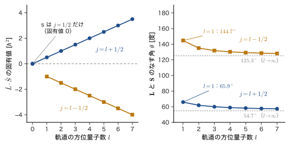
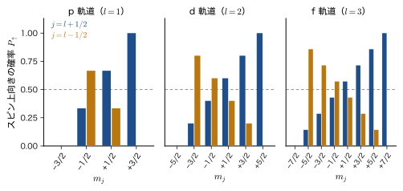

第25章角運動量の合成と $\hat{\bm{L}}\cdot\hat{\bm{S}}$ の固有値問題
街灯やトンネルの照明に使われる低圧ナトリウムランプは，あざやかな黄色に光る．この光をプリズムで分けてよく見ると，実は波長 $589.0\ \mathrm{nm}$ と $589.6\ \mathrm{nm}$ のごく近い 2 本の線（Na の D 線）からできている．どちらもナトリウム原子の 3p 状態から 3s 状態への遷移で出る光である．ところが，前章までに学んだ水素様原子の描像では，3p 状態は（磁場がなければ）$m=-1,0,1$ の 3 個が同じエネルギーをもつ 1 つの準位のはずで，2 本に分かれる理由がない．2 本に分かれるのは，3p 準位がわずかに 2 つに分裂しているからであり，その原因は，電子の軌道運動がつくる磁気と電子のスピンがもつ磁気の間にはたらく相互作用（スピン軌道相互作用）である．
この相互作用を量子力学で扱うために必要なのが，この章の主題である角運動量の合成——軌道角運動量 $\hat{\bm{L}}$（第21章・第22章）とスピン角運動量 $\hat{\bm{S}}$（第23章）を足し合わせて，全角運動量 $\hat{\bm{J}}=\hat{\bm{L}}+\hat{\bm{S}}$ をつくる話——と，相互作用の形 $\hat{\bm{L}}\cdot\hat{\bm{S}}$ の固有値問題である．古典力学（AD 03「大学基礎物理学」）では，角運動量はふつうのベクトルなので，2 つの角運動量の和は，矢印を足し算するだけで求まる．量子力学では，角運動量の長さも向きも「同時にはっきり決まる」わけではないので，足し算は少し手間がかかる．しかし，その結果はたいへん美しい：和 $\hat{\bm{J}}$ もまた角運動量の交換関係を満たし，固有値は $j(j+1)\hbar^2$ の形になり，スピン軌道相互作用のエネルギーは $\tfrac{\hbar^2}{2}\bigl[j(j+1)-l(l+1)-s(s+1)\bigr]$ という簡単な式で与えられる．
この章では，まず $\hat{\bm{L}}\cdot\hat{\bm{S}}$ を昇降演算子で書き直し，p 軌道（$l=1$，$6$ 個の状態）に作用させて $6\times6$ 行列をつくり，それを実際に対角化して固有値と固有ベクトルを求める．次に d 軌道（$l=2$，$10\times10$ 行列）で同じことをくり返し，さらに f 軌道（$l=3$，$14\times14$）を含む一般の $l$ で成り立つ公式へ進む．行列が「ブロック」に分かれること，固有ベクトルの係数 $\sqrt{1/3}$，$\sqrt{2/3}$ が Clebsch–Gordan（クレプシュ–ゴルダン）係数であること，2 つの電子スピンを合成すると一重項と三重項ができること，そしてヘリウム原子の励起状態の一重項–三重項分裂が「スピンの向きで電子のエネルギーが変わる」ことの実例であることを見る．ここで身につける道具は，第26章（スピン軌道相互作用の物理と磁場中の原子），第V部の縮退摂動論，第VII部の多電子原子の項記号，第VIII部の配位子場で，くり返し使われる．
- 全角運動量 $\hat{\bm{J}}=\hat{\bm{L}}+\hat{\bm{S}}$ を定義し，$\hat{\bm{L}}$ と $\hat{\bm{S}}$ が別々の変数に作用して可換であることから，$[\hat{J}_x,\hat{J}_y]=i\hbar\hat{J}_z$ などを導けること
- $\hat{J}^2=\hat{L}^2+2\hat{\bm{L}}\cdot\hat{\bm{S}}+\hat{S}^2$ から $\hat{\bm{L}}\cdot\hat{\bm{S}}$ の固有値問題の意味を説明し，$\hat{\bm{L}}\cdot\hat{\bm{S}}=\tfrac12(\hat{L}_+\hat{S}_-+\hat{L}_-\hat{S}_+)+\hat{L}_z\hat{S}_z$ を行を飛ばさずに導けること
- p 軌道 $R\,Y_1^m\alpha$，$R\,Y_1^m\beta$ の 6 個の関数に $\hat{\bm{L}}\cdot\hat{\bm{S}}$ を作用させて（3 項の内訳を明示して）$6\times6$ 行列をつくり，$m_j=m+m_s$ の保存により $1\times1$ と $2\times2$ のブロックに分かれる理由を説明できること
- ブロックを対角化して，固有値 $\tfrac12\hbar^2$（4 重，$j=\tfrac32$）と $-\hbar^2$（2 重，$j=\tfrac12$），および固有ベクトル（Clebsch–Gordan 係数）を求められること
- d 軌道（$10\times10$）と f 軌道（$14\times14$）でも同様にブロック対角化でき，一般の $l$ で固有値が $\tfrac{l}{2}\hbar^2$（$j=l+\tfrac12$）と $-\tfrac{l+1}{2}\hbar^2$（$j=l-\tfrac12$）になること，重心保存則と Landé の間隔則を導けること
- 2 つの角運動量の合成の一般論（$j=\lvert j_1-j_2\rvert,\dots,j_1+j_2$）と，2 つのスピン $\tfrac12$ の三重項・一重項，$l\otimes\tfrac12$（軌道 $l$ とスピン $\tfrac12$ の合成）の Clebsch–Gordan 係数の一般式を扱えること
- ヘリウム原子 1s2s 状態の一重項–三重項分裂（約 $0.80\ \mathrm{eV}$）を，交換積分 $J_{ab}$ によるスピン依存のエネルギーとして説明できること
もとにしたノート：望月泰英『物理学ノート 量子力学3』 pp. 11–18．
25.1 軌道とスピンの合成 — 全角運動量 $\hat{\bm{J}}=\hat{\bm{L}}+\hat{\bm{S}}$
25.1.1 電子は 2 つの角運動量をもつ
原子の中の電子は，2 種類の角運動量をもっている．1 つは，原子核のまわりを回る運動（軌道運動）にともなう軌道角運動量 $\hat{\bm{L}}=\hat{\bm{r}}\times\hat{\bm{p}}$ で，$\hat{L}^2$ の固有値は $l(l+1)\hbar^2$，$\hat{L}_z$ の固有値は $m\hbar$（$m=-l,-l+1,\dots,l$）である（第21章，第22章）．もう 1 つは，電子が軌道運動とは無関係にもっているスピン角運動量 $\hat{\bm{S}}$ で，電子では $\hat{S}^2$ の固有値が $s(s+1)\hbar^2=\tfrac34\hbar^2$（スピン量子数 $s=\tfrac12$），$\hat{S}_z$ の固有値が $m_s\hbar$（$m_s=\pm\tfrac12$）である（第23章）．本書では，1 個の電子の量子数は小文字（$l,s,j$），複数の電子をまとめた量子数は大文字（$L,S,J$）で書く．この章は 1 個の電子（$s=\tfrac12$）の話である．
これまで水素原子を扱った章では，2 つの角運動量を別々に扱ってきた．電子の状態は，空間部分の水素様軌道 $R_{nl}(r)\,Y_l^m(\theta,\varphi)$ とスピン部分の積として
\begin{equation} \Psi(r,\theta,\varphi,\sigma)=R(r)\,Y_l^m(\theta,\varphi)\,\gamma(\sigma)\qquad(\gamma=\alpha\ \text{または}\ \beta) \label{eq:25-product} \end{equation}と書かれていた．ここで $R(r)=R_{nl}(r)$ は動径関数（第15章），$\sigma=\pm\tfrac12$ はスピン変数（スピンの向きを表す変数で，Pauli 行列 $\sigma_x,\sigma_y,\sigma_z$ とは別のもの）であり，スピン関数 $\alpha(\sigma)$ は $\hat{S}_z=+\tfrac12\hbar$（上向きスピン $\ket{\uparrow}$），$\beta(\sigma)$ は $\hat{S}_z=-\tfrac12\hbar$（下向きスピン $\ket{\downarrow}$）の状態である．$\hat{\bm{L}}$ は座標 $(r,\theta,\varphi)$ にだけ作用し，$\hat{\bm{S}}$ はスピン変数 $\sigma$ にだけ作用する．たとえば $\hat{L}_z$ は $Y_l^m$ に，$\hat{S}_z$ は $\gamma$ にそれぞれ作用して，
$$ \hat{L}_z\bigl[R\,Y_l^m\,\gamma\bigr]=m\hbar\,\bigl[R\,Y_l^m\,\gamma\bigr],\qquad \hat{S}_z\bigl[R\,Y_l^m\,\alpha\bigr]=+\tfrac12\hbar\,\bigl[R\,Y_l^m\,\alpha\bigr],\quad \hat{S}_z\bigl[R\,Y_l^m\,\beta\bigr]=-\tfrac12\hbar\,\bigl[R\,Y_l^m\,\beta\bigr] $$となる．主量子数 $n$ と方位量子数 $l$ を決めたとき，このような状態は $m$ の $2l+1$ 通りとスピンの 2 通りで，合わせて $2(2l+1)$ 個ある．p 軌道（$l=1$）なら $6$ 個，d 軌道（$l=2$）なら $10$ 個である．
25.1.2 軌道の磁気とスピンの磁気は互いに影響しあう
それでは，2 つの角運動量は本当に無関係なのだろうか．第23章で見たように，どちらの角運動量も電子の磁気モーメント（小さな磁石）をともなう．軌道運動する電子は円形電流と同じなので軌道磁気モーメント $\bm{\mu}_L=-\dfrac{e_0}{2m_{\mathrm e}}\bm{L}$ をもち，スピンにも $\bm{\mu}_S=-g_s\dfrac{e_0}{2m_{\mathrm e}}\bm{S}$（$g_s\approx2.0023$）という磁気モーメントがある（負の符号は，電子の電荷が $-e_0$ であるため，磁気モーメントが角運動量と逆向きになることを表す）．
イメージ：2 つの小さな磁石の相互作用
机の上に棒磁石を 2 本置くと，2 本の相対的な向きで，引き合ったり反発したりする．2 本の間の相互作用エネルギーは，向きによって変わる．電子の中の 2 つの「磁石」も同じである．軌道運動がつくる磁場の中に，スピンの磁石が置かれている．磁石は磁場の中で向きによってエネルギーが変わるから（磁気モーメントについては AD 03「大学基礎物理学」第38章 38.6），軌道角運動量 $\bm{L}$ とスピン $\bm{S}$ の相対的な向きに依存するエネルギーが現れる．2 つのベクトルの向きの関係を 1 つの数で表す量は内積 $\bm{L}\cdot\bm{S}=\lvert\bm{L}\rvert\lvert\bm{S}\rvert\cos\theta$（$\theta$ は 2 つのなす角）だから，相互作用のハミルトニアンは $\hat{\bm{L}}\cdot\hat{\bm{S}}$ に比例する形をとる．ただし，実際のスピン軌道相互作用は，軌道とスピンの 2 つの磁気モーメントの間の直接の磁気的な相互作用（$10^{-4}\ \mathrm{eV}$ 程度とごく小さい）ではなく，電子から見て原子核が回ることでつくられる磁場（第26章）と，スピンの磁気モーメントとの相互作用である．棒磁石の絵は，「$\bm{L}$ と $\bm{S}$ の相対的な向きでエネルギーが決まる」という形を直観的に表すものと思ってほしい．
このスピン軌道相互作用（spin–orbit interaction）の係数の値と，正確な導出（電子の静止系での磁場と Thomas 因子）は第26章で行う．この章では，相互作用が $\hat{H}_{\mathrm{SO}}=\xi(r)\,\hat{\bm{L}}\cdot\hat{\bm{S}}$（$\xi(r)$ は動径 $r$ だけの関数）の形をしていることだけを認めて，$\hat{\bm{L}}\cdot\hat{\bm{S}}$ という演算子の固有値問題を数学的に解く．
$\hat{\bm{L}}\cdot\hat{\bm{S}}$ の項があると，これまでのように $m$ と $m_s$ を別々に指定して状態を分類することはできなくなる（25.4 節で見る）．代わりに，2 つの角運動量を足し合わせた量が便利になる．
25.1.3 合成角運動量の定義
定義25.1 合成角運動量（全角運動量）
電子の軌道角運動量にともなう磁気モーメントと，スピン角運動量にともなう磁気モーメントは互いに相互作用する（スピン軌道相互作用）．そこで，2 つの角運動量をまとめて扱う．電子の軌道角運動量ベクトルを $\bm{L}$，スピン角運動量ベクトルを $\bm{S}$ とするとき，その和
\begin{equation} \bm{J}=\bm{L}+\bm{S} \label{eq:25-J} \end{equation}を合成角運動量（または全角運動量，total angular momentum）という．量子力学では，軌道角運動量演算子 $\hat{\bm{L}}$ とスピン角運動量演算子 $\hat{\bm{S}}$ の和
\begin{equation} \hat{\bm{J}}=\hat{\bm{L}}+\hat{\bm{S}}\qquad\text{すなわち}\qquad \begin{cases} \hat{J}_x=\hat{L}_x+\hat{S}_x\\ \hat{J}_y=\hat{L}_y+\hat{S}_y\\ \hat{J}_z=\hat{L}_z+\hat{S}_z \end{cases} \label{eq:25-Jop} \end{equation}を合成角運動量演算子と定義する．$\hat{J}^2=\hat{J}_x^2+\hat{J}_y^2+\hat{J}_z^2=\lvert\hat{\bm{J}}\rvert^2$ とおく．
古典力学では，たとえば回る独楽が自分で回転しながら（スピン）同時に別の軸のまわりを公転する（軌道）とき，全体の角運動量はその 2 つのベクトルの和である．式 \eqref{eq:25-J} はその量子版である．$\hat{\bm{L}}$ は空間の座標にだけ作用し，$\hat{\bm{S}}$ はスピン変数にだけ作用するので，$\hat{L}_x$ と $\hat{S}_y$ のような異なる種類の演算子は順序を入れ替えても結果が変わらない（25.2 節で確かめる）．
25.1.4 全角運動量の量子数 $j$ — 予告
次節以降で示すとおり，$\hat{\bm{J}}$ も角運動量の交換関係を満たす．すると，第24章で学んだ角運動量の一般論により，$\hat{J}^2$ の固有値は $j(j+1)\hbar^2$（$j=0,\tfrac12,1,\tfrac32,\dots$），$\hat{J}_z$ の固有値は $m_j\hbar$（$m_j=-j,-j+1,\dots,j$）の形をとる．軌道角運動量 $l$ とスピン $s=\tfrac12$ を合成したとき $j$ がとりうる値は，
$$ j=l+\tfrac12\quad\text{と}\quad j=l-\tfrac12\qquad(l\ge1),\qquad j=\tfrac12\quad(l=0) $$である（25.4 節で数え上げによって確かめ，25.8 節で一般の場合に広げる）．たとえば p 軌道（$l=1$）は $j=\tfrac32$ と $j=\tfrac12$ に分かれる．古典的なベクトルの和なら，長さ $\lvert\bm{L}\rvert$ と $\lvert\bm{S}\rvert$ のベクトルの和の長さは，2 つの向きがそろったとき（$\lvert\bm{L}\rvert+\lvert\bm{S}\rvert$）から，反対向きのとき（$\bigl\lvert\lvert\bm{L}\rvert-\lvert\bm{S}\rvert\bigr\rvert$）まで連続的に変わる．量子力学では，$j$ が $l+\tfrac12$ と $l-\tfrac12$ の 2 つだけに限られる（とびとびになる）ところが違う．
$l$ と $j$ の組合せ，分光学の記号，状態数を表25.1 にまとめる．
| 軌道 | $l$ | $j$ | 状態数 $2j+1$ | 電子状態の記号 $nl_j$ | 項記号 ${}^{2S+1}L_J$ |
|---|---|---|---|---|---|
| s | 0 | $\tfrac12$ | 2 | $n\mathrm{s}_{1/2}$ | ${}^2\mathrm{S}_{1/2}$ |
| p | 1 | $\tfrac32$ | 4 | $n\mathrm{p}_{3/2}$ | ${}^2\mathrm{P}_{3/2}$ |
| $\tfrac12$ | 2 | $n\mathrm{p}_{1/2}$ | ${}^2\mathrm{P}_{1/2}$ | ||
| d | 2 | $\tfrac52$ | 6 | $n\mathrm{d}_{5/2}$ | ${}^2\mathrm{D}_{5/2}$ |
| $\tfrac32$ | 4 | $n\mathrm{d}_{3/2}$ | ${}^2\mathrm{D}_{3/2}$ | ||
| f | 3 | $\tfrac72$ | 8 | $n\mathrm{f}_{7/2}$ | ${}^2\mathrm{F}_{7/2}$ |
| $\tfrac52$ | 6 | $n\mathrm{f}_{5/2}$ | ${}^2\mathrm{F}_{5/2}$ |
電子状態を書く記号 $n\mathrm{p}_{3/2}$ は，主量子数 $n$，軌道の種類（s, p, d, f は $l=0,1,2,3$），添字が全角運動量の量子数 $j$ を表す．たとえば $2\mathrm{p}_{3/2}$ は，主量子数 $2$，$l=1$，$j=\tfrac32$ の状態である．項記号 ${}^{2S+1}L_J$ の左上の $2S+1=2$ はスピンの多重度で，1 電子では $S=s=\tfrac12$，$L=l$，$J=j$ である（多電子の項記号は第34章で扱う）．表のどの $l$ でも，$j$ の値ごとの状態数を足すと $2(2l+1)$ になる（s で $2$，p で $4+2=6$，d で $6+4=10$，f で $8+6=14$）．これは，25.1.1 節で数えた状態の総数と一致する．
例題25.1 3d 電子と 4f 電子の $j$ と状態数
(1) 3d 電子（$l=2$，$s=\tfrac12$）の全角運動量の量子数 $j$ をすべて求め，それぞれの状態数と電子状態の記号を書け．(2) 4f 電子（$l=3$）について同じことを行え．(3) どちらの場合も，状態数の合計が $(2l+1)(2s+1)$ に一致することを確かめよ．
解答 (1) $j=l\pm\tfrac12$ より，$j=2+\tfrac12=\tfrac52$ と $j=2-\tfrac12=\tfrac32$．$j$ ごとに $m_j=-j,\dots,+j$ の $2j+1$ 個の状態があるので，$j=\tfrac52$ は $2\cdot\tfrac52+1=6$ 個，$j=\tfrac32$ は $2\cdot\tfrac32+1=4$ 個．電子状態の記号は $3\mathrm{d}_{5/2}$（6 個）と $3\mathrm{d}_{3/2}$（4 個），項記号では ${}^2\mathrm{D}_{5/2}$，${}^2\mathrm{D}_{3/2}$ である．
(2) $l=3$ なので $j=\tfrac72$ と $j=\tfrac52$．状態数は $2\cdot\tfrac72+1=8$ と $2\cdot\tfrac52+1=6$．記号は $4\mathrm{f}_{7/2}$（8 個），$4\mathrm{f}_{5/2}$（6 個）で，項記号は ${}^2\mathrm{F}_{7/2}$，${}^2\mathrm{F}_{5/2}$．
(3) 3d：$6+4=10$，$(2l+1)(2s+1)=5\times2=10$ で一致する．4f：$8+6=14$，$(2l+1)(2s+1)=7\times2=14$ で一致する．一般の $l$ では，$(2l+2)+2l=4l+2=2(2l+1)$ となる．
応用：ナトリウムの D 線が 2 本に分かれる理由
ナトリウム原子の最外殻電子は 3s 軌道（$l=0$）にある．3s 状態は $j=\tfrac12$ しかなく，分裂しない．一方，励起した 3p 電子（$l=1$）は $3\mathrm{p}_{3/2}$ と $3\mathrm{p}_{1/2}$ の 2 つの準位に分かれ，そのエネルギー差は波数で約 $17\ \mathrm{cm^{-1}}$（$1\ \mathrm{cm^{-1}}=0.1240\ \mathrm{meV}$ なので約 $2.1\ \mathrm{meV}$）である．3s から見た遷移の波長（空気中の値）が，$3\mathrm{p}_{3/2}\to3\mathrm{s}$ で $588.995\ \mathrm{nm}$（D2 線），$3\mathrm{p}_{1/2}\to3\mathrm{s}$ で $589.592\ \mathrm{nm}$（D1 線）となり，肉眼ではほぼ同じ黄色に見えるが分光器では 2 本に分かれる．この分裂の大きさを表す式は 25.7 節で導く（例題25.11）．原子番号が大きい元素ほどスピン軌道相互作用は強く，分裂は大きくなる（第26章）．
25.2 合成角運動量の交換関係 — $\hat{\bm{J}}$ も角運動量である
25.2.1 なぜ交換関係を調べるのか
$\hat{\bm{L}}$ を「軌道角運動量」と呼び，$\hat{\bm{S}}$ を「スピン角運動量」と呼べるのは，どちらも同じ交換関係
$$ [\hat{L}_x,\hat{L}_y]=i\hbar\hat{L}_z,\quad[\hat{L}_y,\hat{L}_z]=i\hbar\hat{L}_x,\quad[\hat{L}_z,\hat{L}_x]=i\hbar\hat{L}_y, \qquad [\hat{S}_x,\hat{S}_y]=i\hbar\hat{S}_z,\quad[\hat{S}_y,\hat{S}_z]=i\hbar\hat{S}_x,\quad[\hat{S}_z,\hat{S}_x]=i\hbar\hat{S}_y $$を満たすからである（第21章 21.3，第23章）．角運動量の固有値が $j(j+1)\hbar^2$ と $m\hbar$ の形になること，昇降演算子で状態がはしご状に並ぶこと，といった性質は，すべてこの交換関係だけから導かれる（第24章）．したがって，和 $\hat{\bm{J}}=\hat{\bm{L}}+\hat{\bm{S}}$ も同じ交換関係を満たすことを示せば，$\hat{\bm{J}}$ にも角運動量の一般論がそのまま使える．
25.2.2 $\hat{L}$ と $\hat{S}$ は可換である
計算に入る前に，鍵になる事実を確かめておく．$\hat{L}_x,\hat{L}_y,\hat{L}_z$ は空間座標（極座標なら $\theta,\varphi$）に作用する微分演算子であり，$\hat{S}_x,\hat{S}_y,\hat{S}_z$ はスピン変数 $\sigma$ にだけ作用する演算子（$2\times2$ 行列）である．互いに別の変数に作用するので，順序を入れ替えても同じ結果になるはずである．実際に確かめよう．電子の波動関数は，空間座標とスピン変数の関数 $\Psi(x,y,z,\sigma)$ である．$\sigma$ は $+\tfrac12$ と $-\tfrac12$ の 2 通りしかとらないので，$\Psi$ はつねに 2 つの積の和
\begin{equation} \Psi(x,y,z,\sigma)=\psi_\alpha(x,y,z)\,\alpha(\sigma)+\psi_\beta(x,y,z)\,\beta(\sigma) \label{eq:25-2comp} \end{equation}に書ける（$\psi_\alpha$，$\psi_\beta$ は空間座標だけの関数．上向きスピン成分と下向きスピン成分）．そこで，まず 1 つの積の形（空間部分とスピン部分が変数分離された形）の関数 $\Psi=\psi(x,y,z)\,S(\sigma)$（$S(\sigma)$ は任意のスピン関数）で調べる．
導出：$[\hat{S}_x,\hat{L}_y]=0$ と $[\hat{L}_x,\hat{S}_y]=0$
積の形の関数 $\Psi=\psi(x,y,z)\,S(\sigma)$ に，まず $\hat{L}_y$ を作用させ，次に $\hat{S}_x$ を作用させる．$\hat{L}_y$ は $\sigma$ に触れないので $S(\sigma)$ を定数のように外に出せて，$\hat{L}_y\Psi=\bigl(\hat{L}_y\psi\bigr)S$ となる．次に $\hat{S}_x$ は $(x,y,z)$ に触れないので，$\hat{L}_y\psi$ を定数のように外に出せて，
$$ \hat{S}_x\hat{L}_y\Psi=\hat{S}_x\bigl[(\hat{L}_y\psi)\,S\bigr]=(\hat{L}_y\psi)\,(\hat{S}_xS). $$逆の順序では，$\hat{S}_x\Psi=\psi\,(\hat{S}_xS)$ の後に $\hat{L}_y$ を作用させ，今度は $\hat{S}_xS$ が $(x,y,z)$ によらないので定数のように外に出せて，
$$ \hat{L}_y\hat{S}_x\Psi=\hat{L}_y\bigl[\psi\,(\hat{S}_xS)\bigr]=(\hat{L}_y\psi)\,(\hat{S}_xS). $$2 つは等しい：$\hat{S}_x\hat{L}_y\Psi=\hat{L}_y\hat{S}_x\Psi$．一般の $\Psi$ は式 \eqref{eq:25-2comp} のように 2 つの積の和で，演算子は線形なので，和の各項で成り立つ関係は $\Psi$ 全体で成り立つ．よって
$$ [\hat{S}_x,\hat{L}_y]=\hat{S}_x\hat{L}_y-\hat{L}_y\hat{S}_x=0,\qquad [\hat{L}_x,\hat{S}_y]=0. $$$x,y,z$ のどの組み合わせでも同じ議論が成り立つから，一般に $[\hat{L}_i,\hat{S}_j]=0$（$i,j=x,y,z$，9 通りすべて）である．
（導出終わり）
25.2.3 $[\hat{J}_x,\hat{J}_y]$ の計算
導出：$[\hat{J}_x,\hat{J}_y]=i\hbar\hat{J}_z$
交換子の定義 $[\hat{A},\hat{B}]=\hat{A}\hat{B}-\hat{B}\hat{A}$ と，式 \eqref{eq:25-Jop} の $\hat{J}_x=\hat{L}_x+\hat{S}_x$，$\hat{J}_y=\hat{L}_y+\hat{S}_y$ から，
$$ [\hat{J}_x,\hat{J}_y]=\hat{J}_x\hat{J}_y-\hat{J}_y\hat{J}_x=(\hat{L}_x+\hat{S}_x)(\hat{L}_y+\hat{S}_y)-(\hat{L}_y+\hat{S}_y)(\hat{L}_x+\hat{S}_x) $$である．それぞれの積を展開すると，第 1 項が $\hat{L}_x\hat{L}_y+\hat{L}_x\hat{S}_y+\hat{S}_x\hat{L}_y+\hat{S}_x\hat{S}_y$，第 2 項が $\hat{L}_y\hat{L}_x+\hat{L}_y\hat{S}_x+\hat{S}_y\hat{L}_x+\hat{S}_y\hat{S}_x$ であり，これらを，同じ種類の演算子の組ごとにまとめ直すと，
\begin{align*} [\hat{J}_x,\hat{J}_y]&=(\hat{L}_x\hat{L}_y-\hat{L}_y\hat{L}_x)+(\hat{S}_x\hat{L}_y-\hat{L}_y\hat{S}_x)+(\hat{L}_x\hat{S}_y-\hat{S}_y\hat{L}_x)+(\hat{S}_x\hat{S}_y-\hat{S}_y\hat{S}_x)\\ &=[\hat{L}_x,\hat{L}_y]+[\hat{S}_x,\hat{L}_y]+[\hat{L}_x,\hat{S}_y]+[\hat{S}_x,\hat{S}_y] \end{align*}となる（8 個の項がすべて，4 つの交換子のどれかに入っている）．25.2.2 節で示したように，$\hat{L}$ と $\hat{S}$ の混ざった交換子 $[\hat{S}_x,\hat{L}_y]$ と $[\hat{L}_x,\hat{S}_y]$ は $0$ である．残った 2 つには $\hat{L}$ 同士，$\hat{S}$ 同士の交換関係を使う：
$$ [\hat{J}_x,\hat{J}_y]=[\hat{L}_x,\hat{L}_y]+[\hat{S}_x,\hat{S}_y]=i\hbar\hat{L}_z+i\hbar\hat{S}_z=i\hbar\,(\hat{L}_z+\hat{S}_z)=i\hbar\hat{J}_z . $$$[\hat{J}_y,\hat{J}_z]$ も同様である．$[\hat{J}_y,\hat{J}_z]=[\hat{L}_y,\hat{L}_z]+[\hat{L}_y,\hat{S}_z]+[\hat{S}_y,\hat{L}_z]+[\hat{S}_y,\hat{S}_z]$ の中央の 2 項が $0$ で，残りは $i\hbar\hat{L}_x+i\hbar\hat{S}_x=i\hbar\hat{J}_x$ となる．$[\hat{J}_z,\hat{J}_x]=[\hat{L}_z,\hat{L}_x]+[\hat{S}_z,\hat{S}_x]=i\hbar\hat{L}_y+i\hbar\hat{S}_y=i\hbar\hat{J}_y$ も同じである（添字を $x\to y\to z\to x$ と巡回させただけ）．
（導出終わり）
定理25.1 合成角運動量の交換関係
$\hat{\bm{J}}=\hat{\bm{L}}+\hat{\bm{S}}$ の 3 成分は，軌道角運動量やスピンと同じ交換関係を満たす：
\begin{equation} [\hat{J}_x,\hat{J}_y]=i\hbar\hat{J}_z,\qquad[\hat{J}_y,\hat{J}_z]=i\hbar\hat{J}_x,\qquad[\hat{J}_z,\hat{J}_x]=i\hbar\hat{J}_y \label{eq:25-JJ} \end{equation}（まとめて $[\hat{J}_i,\hat{J}_j]=i\hbar\sum_k\varepsilon_{ijk}\hat{J}_k$ とも書く．$\varepsilon_{ijk}$ は Levi-Civita の記号で，$\varepsilon_{xyz}=\varepsilon_{yzx}=\varepsilon_{zxy}=+1$，$\varepsilon_{yxz}=\varepsilon_{xzy}=\varepsilon_{zyx}=-1$，添字に同じものが 2 つ以上あれば $0$ と定める．たとえば $i=x$，$j=y$ なら $k=z$ の項だけが残って $[\hat{J}_x,\hat{J}_y]=i\hbar\hat{J}_z$ となる）．したがって $\hat{\bm{J}}$ も角運動量であり，$\hat{J}^2$ と $\hat{J}_z$ は同時対角化できる．
最後の主張は，$[\hat{J}^2,\hat{J}_z]=0$ からわかる．これは，$\hat{L}$ について第22章で行った計算（$[\hat{L}^2,\hat{L}_z]=0$ の証明）が，交換関係だけを使っていたことによる．つまり式 \eqref{eq:25-JJ} だけから $[\hat{J}^2,\hat{J}_z]=[\hat{J}_x^2+\hat{J}_y^2,\hat{J}_z]=\hat{J}_x[\hat{J}_x,\hat{J}_z]+[\hat{J}_x,\hat{J}_z]\hat{J}_x+\hat{J}_y[\hat{J}_y,\hat{J}_z]+[\hat{J}_y,\hat{J}_z]\hat{J}_y=-i\hbar(\hat{J}_x\hat{J}_y+\hat{J}_y\hat{J}_x)+i\hbar(\hat{J}_y\hat{J}_x+\hat{J}_x\hat{J}_y)=0$ となる（$[\hat{J}_x,\hat{J}_z]=-i\hbar\hat{J}_y$ を使った）．同様に $\hat{J}^2$ は $\hat{J}_x,\hat{J}_y$ とも可換である．
25.2.4 「同時に決まる量」の 2 つの組
1 個の電子の $2(2l+1)$ 個の状態を分類するための，可換な演算子の組は 2 通り考えられる．
この 2 つの組を表25.2 で比べる．
| 組 | 演算子 | 量子数 | 状態 |
|---|---|---|---|
| A | $\hat{L}^2,\ \hat{S}^2,\ \hat{L}_z,\ \hat{S}_z$ | $l,\ s,\ m,\ m_s$ | $R\,Y_l^m\,\alpha$，$R\,Y_l^m\,\beta$ |
| B | $\hat{L}^2,\ \hat{S}^2,\ \hat{J}^2,\ \hat{J}_z$ | $l,\ s,\ j,\ m_j$ | $R\,\ket{l,s;j,m_j}$（$Y_l^m\alpha$，$Y_l^m\beta$ の 1 次結合） |
A の基底は $Y_l^m\alpha$ のような積の形の関数である．B の基底は，一般には積の 1 次結合になる．どちらも状態の総数は $2(2l+1)$ 個で同じである（$2(2l+1)$ 次元の空間に対する 2 通りの基底の選び方）．スピン軌道相互作用 $\hat{\bm{L}}\cdot\hat{\bm{S}}$ が入ると，組 B の量子数 $(j,m_j)$ が「よい量子数」（$\hat{H}$ と同時に対角化できる）になり，組 A の $m,m_s$ は使えなくなる．この主張は 25.3 節で示す．
イメージ：$\hat{\bm{J}}$ は「原子全体の回転」の量
原子全体を，軌道もスピンもまとめて，$z$ 軸のまわりに角 $\delta\varphi$ だけ回すことを考える．軌道波動関数は $e^{-i\delta\varphi\,\hat{L}_z/\hbar}$ で回り，スピン関数は $e^{-i\delta\varphi\,\hat{S}_z/\hbar}$ で回るので，まとめて回す操作は $e^{-i\delta\varphi(\hat{L}_z+\hat{S}_z)/\hbar}=e^{-i\delta\varphi\hat{J}_z/\hbar}$ である．つまり $\hat{\bm{J}}$ は，電子の空間とスピンの両方を同時に回転させる操作の「生成子」である．外から力がはたらかない孤立した原子では，軌道とスピンの向きを同時に回しても物理は変わらないので，ハミルトニアンは $\hat{\bm{J}}$ と可換になり，$\hat{\bm{J}}$ が保存量となる．一方，スピン軌道相互作用があると軌道だけ・スピンだけを回すと物理が変わるので，$\hat{\bm{L}}$ や $\hat{\bm{S}}$ は単独では保存されない．これが，$j$ と $m_j$ が「よい量子数」になる理由である．
注意：積の形 $\psi(x,y,z)\,S(\sigma)$ は，相互作用がないときの話
式 \eqref{eq:25-product} の $R\,Y_l^m\,\alpha$ のような積の形は，軌道とスピンが独立に運動している（スピン軌道相互作用がない）ときの固有関数である．相互作用があると，固有関数は，たとえば $\sqrt{\tfrac23}\,R\,Y_1^0\,\alpha+\sqrt{\tfrac13}\,R\,Y_1^1\,\beta$ のように，積の形の関数の和になる（25.5 節）．この状態では「軌道の $m$ とスピンの向き」が絡み合っていて，一方だけを決めることができない．一方，25.2.2 節の議論は，$\Psi$ を積の和 \eqref{eq:25-2comp} に分けて各項で示したので，積の形でない一般の状態にもそのまま成り立つ．
例題25.2 p 軌道の 6 つの関数の $\hat{J}_z$ の固有値
p 軌道の 6 つの関数 $R\,Y_1^m\,\alpha$，$R\,Y_1^m\,\beta$（$m=-1,0,1$）に $\hat{J}_z=\hat{L}_z+\hat{S}_z$ を作用させて，それぞれの固有値 $m_j\hbar$ を求めよ．また，$m_j$ が同じ関数どうしをまとめよ．
解答 $\hat{L}_z$ は $Y_1^m$ に $m\hbar$，$\hat{S}_z$ は $\alpha$ に $+\tfrac12\hbar$，$\beta$ に $-\tfrac12\hbar$ の固有値を与えるので，積の形の関数は $\hat{J}_z$ の固有関数でもあり，固有値は $m_j\hbar=(m+m_s)\hbar$ である：
$$ \hat{J}_z\bigl[R\,Y_1^m\,\alpha\bigr]=\bigl(m+\tfrac12\bigr)\hbar\,\bigl[R\,Y_1^m\,\alpha\bigr],\qquad \hat{J}_z\bigl[R\,Y_1^m\,\beta\bigr]=\bigl(m-\tfrac12\bigr)\hbar\,\bigl[R\,Y_1^m\,\beta\bigr]. $$6 つの関数の $m_j$ は，$Y_1^{-1}\beta$：$-\tfrac32$，$Y_1^{-1}\alpha$：$-\tfrac12$，$Y_1^{0}\beta$：$-\tfrac12$，$Y_1^{0}\alpha$：$+\tfrac12$，$Y_1^{1}\beta$：$+\tfrac12$，$Y_1^{1}\alpha$：$+\tfrac32$ である．$m_j$ ごとにまとめると，
| $m_j$ | $-\tfrac32$ | $-\tfrac12$ | $+\tfrac12$ | $+\tfrac32$ |
|---|---|---|---|---|
| 関数 | $Y_1^{-1}\beta$ | $Y_1^{-1}\alpha$，$Y_1^{0}\beta$ | $Y_1^{0}\alpha$，$Y_1^{1}\beta$ | $Y_1^{1}\alpha$ |
| 個数 | 1 | 2 | 2 | 1 |
個数は $1,2,2,1$（合計 6）である．この分け方が，25.4 節で現れる $6\times6$ 行列のブロック構造（$1\times1$，$2\times2$，$2\times2$，$1\times1$）にそのまま対応する．
25.3 $\hat{\bm{L}}\cdot\hat{\bm{S}}$ の必要性と昇降演算子による書き換え
25.3.1 $\hat{J}^2$ の固有値を知るには $\hat{\bm{L}}\cdot\hat{\bm{S}}$ が必要
軌道角運動量の大きさの 2 乗 $\hat{L}^2$ とスピンの大きさの 2 乗 $\hat{S}^2$ の固有値は，すでにわかっている（$l(l+1)\hbar^2$ と $\tfrac34\hbar^2$）．それでは，合成角運動量の大きさの 2 乗 $\hat{J}^2=\lvert\hat{\bm{J}}\rvert^2$ はどうだろうか．定義 \eqref{eq:25-Jop} から，内積を展開する．
\begin{equation} \hat{J}^2=(\hat{\bm{L}}+\hat{\bm{S}})\cdot(\hat{\bm{L}}+\hat{\bm{S}})=\hat{L}^2+\hat{\bm{L}}\cdot\hat{\bm{S}}+\hat{\bm{S}}\cdot\hat{\bm{L}}+\hat{S}^2=\hat{L}^2+2\,\hat{\bm{L}}\cdot\hat{\bm{S}}+\hat{S}^2 \label{eq:25-J2} \end{equation}ここで $\hat{\bm{L}}\cdot\hat{\bm{S}}=\hat{L}_x\hat{S}_x+\hat{L}_y\hat{S}_y+\hat{L}_z\hat{S}_z$ であり，$\hat{L}_i$ と $\hat{S}_i$ は可換（25.2.2 節）なので $\hat{\bm{S}}\cdot\hat{\bm{L}}=\hat{S}_x\hat{L}_x+\hat{S}_y\hat{L}_y+\hat{S}_z\hat{L}_z=\hat{\bm{L}}\cdot\hat{\bm{S}}$ となり，2 つの項がまとまって $2\hat{\bm{L}}\cdot\hat{\bm{S}}$ になった．これは，古典的なベクトルの $\lvert\bm{L}+\bm{S}\rvert^2=\lvert\bm{L}\rvert^2+2\bm{L}\cdot\bm{S}+\lvert\bm{S}\rvert^2$（余弦定理．高校数学 第3章 3.3）と同じ形である．式 \eqref{eq:25-J2} から，
$\hat{\bm{L}}\cdot\hat{\bm{S}}$ の固有値が求まれば，$\hat{J}^2$ の固有値が求まる
ことがわかる（逆に $\hat{J}^2$ の固有値がわかれば $\hat{\bm{L}}\cdot\hat{\bm{S}}$ の固有値もわかる）．これが，$\hat{\bm{L}}\cdot\hat{\bm{S}}$ の固有値問題を解く必要性である．それに，$\hat{\bm{L}}\cdot\hat{\bm{S}}$ はスピン軌道相互作用のハミルトニアンの中身そのものなので，その固有値はスピン軌道分裂のエネルギーを与える．一石二鳥である．
25.3.2 $\hat{\bm{L}}\cdot\hat{\bm{S}}$ を状態に作用させると
$\hat{\bm{L}}\cdot\hat{\bm{S}}=\hat{L}_x\hat{S}_x+\hat{L}_y\hat{S}_y+\hat{L}_z\hat{S}_z$ を，積の形の波動関数 $\psi(x,y,z,\sigma)=\psi(x,y,z)\,S(\sigma)$ に作用させてみよう．$\hat{L}$ は空間部分に，$\hat{S}$ はスピン部分に作用するので，
\begin{equation} (\hat{\bm{L}}\cdot\hat{\bm{S}})\,\psi(x,y,z)\,S(\sigma)=(\hat{L}_x\psi)\,(\hat{S}_xS)+(\hat{L}_y\psi)\,(\hat{S}_yS)+(\hat{L}_z\psi)\,(\hat{S}_zS) \label{eq:25-LS-act0} \end{equation}となる．しかしこのままでは使いにくい．$\hat{L}_x\,Y_l^m$ や $\hat{L}_y\,Y_l^m$ は，$Y_l^m$ 自身にならずに別の $Y_l^{m\pm1}$ の和になり（第24章），$\hat{S}_x$，$\hat{S}_y$ の作用も $\alpha$ と $\beta$ を入れ替える形になって，計算の見通しが悪い．一方，昇降演算子 $\hat{L}_\pm$，$\hat{S}_\pm$ は，$Y_l^m$ を $Y_l^{m\pm1}$ に，$\alpha,\beta$ を $\beta,\alpha$ に 1 段ずらすだけの単純な作用をする．そこで，$\hat{\bm{L}}\cdot\hat{\bm{S}}$ を昇降演算子で書き直す．
25.3.3 昇降演算子による書き換え
昇降演算子は $\hat{L}_\pm=\hat{L}_x\pm i\hat{L}_y$，$\hat{S}_\pm=\hat{S}_x\pm i\hat{S}_y$ で定義される．辺々を足し引きすると，$\hat{L}_++\hat{L}_-=2\hat{L}_x$，$\hat{L}_+-\hat{L}_-=2i\hat{L}_y$ だから，
\begin{equation} \begin{cases} \hat{L}_x=\dfrac12(\hat{L}_++\hat{L}_-)\\[2mm] \hat{L}_y=\dfrac{1}{2i}(\hat{L}_+-\hat{L}_-) \end{cases}\qquad \begin{cases} \hat{S}_x=\dfrac12(\hat{S}_++\hat{S}_-)\\[2mm] \hat{S}_y=\dfrac{1}{2i}(\hat{S}_+-\hat{S}_-) \end{cases} \label{eq:25-xy-pm} \end{equation}である．これを $\hat{L}_x\hat{S}_x$ と $\hat{L}_y\hat{S}_y$ に代入する．
導出：$\hat{L}_x\hat{S}_x+\hat{L}_y\hat{S}_y$ の昇降演算子表示
式 \eqref{eq:25-xy-pm} を代入して展開する．$\hat{L}$ と $\hat{S}$ は可換なので，$\hat{L}$ の側と $\hat{S}$ の側を別々に展開して，各項を $\hat{L}_a\hat{S}_b$ の形に並べればよい．
\begin{align*} \hat{L}_x\hat{S}_x&=\frac12(\hat{L}_++\hat{L}_-)\cdot\frac12(\hat{S}_++\hat{S}_-) =\frac14\bigl(\hat{L}_+\hat{S}_++\hat{L}_+\hat{S}_-+\hat{L}_-\hat{S}_++\hat{L}_-\hat{S}_-\bigr),\\ \hat{L}_y\hat{S}_y&=\frac{1}{2i}(\hat{L}_+-\hat{L}_-)\cdot\frac{1}{2i}(\hat{S}_+-\hat{S}_-) =\frac{1}{4i^2}\bigl(\hat{L}_+\hat{S}_+-\hat{L}_+\hat{S}_--\hat{L}_-\hat{S}_++\hat{L}_-\hat{S}_-\bigr)\\ &=-\frac14\bigl(\hat{L}_+\hat{S}_+-\hat{L}_+\hat{S}_--\hat{L}_-\hat{S}_++\hat{L}_-\hat{S}_-\bigr)\qquad(i^2=-1). \end{align*}2 式を足すと，$\hat{L}_+\hat{S}_+$ と $\hat{L}_-\hat{S}_-$ の係数は $\tfrac14-\tfrac14=0$ で打ち消し合い，$\hat{L}_+\hat{S}_-$ と $\hat{L}_-\hat{S}_+$ の係数は $\tfrac14+\tfrac14=\tfrac12$ で強め合う：
$$ \hat{L}_x\hat{S}_x+\hat{L}_y\hat{S}_y=\frac12\bigl(\hat{L}_+\hat{S}_-+\hat{L}_-\hat{S}_+\bigr). $$これに $\hat{L}_z\hat{S}_z$ を加えれば $\hat{\bm{L}}\cdot\hat{\bm{S}}$ になる．
（導出終わり）
定理25.2 $\hat{\bm{L}}\cdot\hat{\bm{S}}$ の昇降演算子表示
\begin{equation} \hat{\bm{L}}\cdot\hat{\bm{S}}=\frac12\bigl(\hat{L}_+\hat{S}_-+\hat{L}_-\hat{S}_+\bigr)+\hat{L}_z\hat{S}_z \label{eq:25-LS} \end{equation}イメージ：スピンと軌道の「フリップフロップ」
式 \eqref{eq:25-LS} の第 1 項 $\tfrac12\hat{L}_+\hat{S}_-$ は，「スピンを 1 段下げる（$\uparrow\to\downarrow$）と同時に，軌道の $m$ を 1 段上げる」操作である．第 2 項 $\tfrac12\hat{L}_-\hat{S}_+$ はその逆で，スピンを上げて $m$ を下げる．どちらも，スピンが $\hbar$ だけ角運動量を失う（または得る）代わりに軌道が同じ量を得る（または失う）ので，全体の $z$ 成分 $m_j\hbar=(m+m_s)\hbar$ は変わらない．第 3 項 $\hat{L}_z\hat{S}_z$ は何も動かさず，対角成分になる．
一方，$\hat{L}_+\hat{S}_+$（$m$ も $m_s$ も上がる）や $\hat{L}_-\hat{S}_-$（両方下がる）のように，$m_j$ を $\pm2$ だけ変える項は，$x$ 成分と $y$ 成分の項の足し算で打ち消し合って消えた．これは，$z$ 軸のまわりの回転に対して $\hat{\bm{L}}\cdot\hat{\bm{S}}$（内積は回転で変わらない）が不変であることの結果で，「$m_j$ が保存する」という内容になっている（25.4 節）．
25.3.4 $\hat{\bm{L}}\cdot\hat{\bm{S}}$ の固有値の一般公式
式 \eqref{eq:25-J2} を $\hat{\bm{L}}\cdot\hat{\bm{S}}$ について解くと，
\begin{equation} \hat{\bm{L}}\cdot\hat{\bm{S}}=\frac12\bigl(\hat{J}^2-\hat{L}^2-\hat{S}^2\bigr) \label{eq:25-LS-J} \end{equation}を得る．右辺の 3 つの演算子が同時に対角化できれば，固有値がすぐに求まる．そのためには，$\hat{\bm{L}}\cdot\hat{\bm{S}}$ が $\hat{L}^2,\hat{S}^2,\hat{J}^2,\hat{J}_z$ と可換であることを確かめておく必要がある．
導出：$\hat{\bm{L}}\cdot\hat{\bm{S}}$ の交換関係
[i] $\hat{L}^2$ と $\hat{S}^2$ との交換子．$\hat{S}_i$ は $\hat{L}^2$ と可換で，$\hat{L}_i$ は $\hat{L}^2$ と可換なので（第22章），$[\hat{\bm{L}}\cdot\hat{\bm{S}},\hat{L}^2]=\sum_i\hat{S}_i\,[\hat{L}_i,\hat{L}^2]=0$ である．$\hat{S}^2$ についても同じで，$[\hat{\bm{L}}\cdot\hat{\bm{S}},\hat{S}^2]=\sum_i\hat{L}_i\,[\hat{S}_i,\hat{S}^2]=0$．
[ii] $\hat{J}^2$ との交換子．式 \eqref{eq:25-J2} より $[\hat{J}^2,\hat{\bm{L}}\cdot\hat{\bm{S}}]=[\hat{L}^2,\hat{\bm{L}}\cdot\hat{\bm{S}}]+2[\hat{\bm{L}}\cdot\hat{\bm{S}},\hat{\bm{L}}\cdot\hat{\bm{S}}]+[\hat{S}^2,\hat{\bm{L}}\cdot\hat{\bm{S}}]=0$（[i] と，自分自身との交換子が $0$ であることによる）．
[iii] $\hat{J}_z$ との交換子．$\hat{S}_i$ は $\hat{L}_z$ と可換，$\hat{L}_i$ は $\hat{S}_z$ と可換であることを使う．$[\hat{L}_x,\hat{L}_z]=-i\hbar\hat{L}_y$，$[\hat{L}_y,\hat{L}_z]=i\hbar\hat{L}_x$（式 \eqref{eq:25-JJ} の $\hat{J}$ を $\hat{L}$ に置き換えたものを使った）だから，
\begin{align*} [\hat{\bm{L}}\cdot\hat{\bm{S}},\hat{L}_z]&=\hat{S}_x[\hat{L}_x,\hat{L}_z]+\hat{S}_y[\hat{L}_y,\hat{L}_z]+\hat{S}_z[\hat{L}_z,\hat{L}_z]=i\hbar\,(\hat{L}_x\hat{S}_y-\hat{L}_y\hat{S}_x),\\ [\hat{\bm{L}}\cdot\hat{\bm{S}},\hat{S}_z]&=\hat{L}_x[\hat{S}_x,\hat{S}_z]+\hat{L}_y[\hat{S}_y,\hat{S}_z]+\hat{L}_z[\hat{S}_z,\hat{S}_z]=-i\hbar\,(\hat{L}_x\hat{S}_y-\hat{L}_y\hat{S}_x). \end{align*}2 式の和をとると，$[\hat{\bm{L}}\cdot\hat{\bm{S}},\hat{J}_z]=0$ となる．$\hat{J}_x,\hat{J}_y$ でも同様（$x,y,z$ の巡回）で，$\hat{\bm{L}}\cdot\hat{\bm{S}}$ は $\hat{\bm{J}}$ の 3 成分すべてと可換である．
一方，上の 1 行目が示すように $[\hat{\bm{L}}\cdot\hat{\bm{S}},\hat{L}_z]=i\hbar(\hat{L}_x\hat{S}_y-\hat{L}_y\hat{S}_x)\ne0$ であり，$\hat{S}_z$ とも同様に非可換である．
（導出終わり）
定理25.3 $\hat{\bm{L}}\cdot\hat{\bm{S}}$ の固有値
$\hat{\bm{L}}\cdot\hat{\bm{S}}$ は $\hat{L}^2,\hat{S}^2,\hat{J}^2,\hat{J}_z$ と可換で，$\hat{L}_z,\hat{S}_z$ とは可換でない．したがって $\hat{\bm{L}}\cdot\hat{\bm{S}}$ の固有関数は，$\hat{L}^2,\hat{S}^2,\hat{J}^2,\hat{J}_z$ の同時固有関数（量子数 $l,s,j,m_j$）にとることができ，固有値は
\begin{equation} \hat{\bm{L}}\cdot\hat{\bm{S}}\ \longrightarrow\ \frac{\hbar^2}{2}\Bigl[\,j(j+1)-l(l+1)-s(s+1)\,\Bigr] \label{eq:25-LS-eig} \end{equation}である．この値は $m_j$ によらない．
実際，同時固有関数 $\ket{l,s;j,m_j}$ に式 \eqref{eq:25-LS-J} の両辺を作用させれば，右辺の $\hat{J}^2,\hat{L}^2,\hat{S}^2$ がそれぞれ $j(j+1)\hbar^2$，$l(l+1)\hbar^2$，$s(s+1)\hbar^2$ を与えるだけで，式 \eqref{eq:25-LS-eig} が得られる．電子では $s=\tfrac12$ なので $s(s+1)=\tfrac34$ である．この式が正しいことは，25.5〜25.7 節で，行列を実際に対角化して確かめる．
注意：$m$ と $m_s$ は，$\hat{\bm{L}}\cdot\hat{\bm{S}}$ があると「よい量子数」でなくなる
$[\hat{\bm{L}}\cdot\hat{\bm{S}},\hat{L}_z]\ne0$ なので，$\hat{\bm{L}}\cdot\hat{\bm{S}}$ の固有関数を $\hat{L}_z$ の固有関数（すなわち $m$ が決まった状態）にはできない．同じことは $\hat{S}_z$ についても言える．2 つの磁石が互いに影響しあうと，それぞれの向きだけを決めておくことはできず，全体の向き $j,m_j$ だけが保存するのである．実際，25.4 節の計算では，$\hat{\bm{L}}\cdot\hat{\bm{S}}$ を $R\,Y_1^{-1}\alpha$ に作用させると $R\,Y_1^{0}\beta$ が混ざってくる．
25.3.5 ベクトル模型 — $\bm{L}$ と $\bm{S}$ のなす角
定理25.3 の結果を，古典的なベクトルの絵で読んでみよう．p 電子（$l=1$，$s=\tfrac12$）について，$\hat{L}^2\to l(l+1)\hbar^2=2\hbar^2$，$\hat{S}^2\to\tfrac34\hbar^2$，$\hat{J}^2\to j(j+1)\hbar^2$ である．各ベクトルの長さは $\lvert\bm{L}\rvert=\sqrt{2}\,\hbar$，$\lvert\bm{S}\rvert=\tfrac{\sqrt3}{2}\hbar$，$\lvert\bm{J}\rvert=\sqrt{j(j+1)}\,\hbar$ である．式 \eqref{eq:25-LS-eig} より，
\begin{align*} j=\tfrac32:&\quad\hat{\bm{L}}\cdot\hat{\bm{S}}\to\frac{\hbar^2}{2}\Bigl(\frac{15}{4}-2-\frac34\Bigr)=\frac{\hbar^2}{2},\qquad \lvert\bm{J}\rvert=\frac{\sqrt{15}}{2}\hbar\approx1.94\,\hbar,\\ j=\tfrac12:&\quad\hat{\bm{L}}\cdot\hat{\bm{S}}\to\frac{\hbar^2}{2}\Bigl(\frac34-2-\frac34\Bigr)=-\hbar^2,\qquad \lvert\bm{J}\rvert=\frac{\sqrt{3}}{2}\hbar\approx0.87\,\hbar. \end{align*}古典的な $\bm{L}\cdot\bm{S}=\lvert\bm{L}\rvert\lvert\bm{S}\rvert\cos\theta$ に対応させると，$\cos\theta=\dfrac{\bm{L}\cdot\bm{S}}{\lvert\bm{L}\rvert\lvert\bm{S}\rvert}$ から，
$$ j=\tfrac32:\ \cos\theta=\frac{\hbar^2/2}{\sqrt2\cdot\frac{\sqrt3}{2}\hbar^2}=\frac{1}{\sqrt6}\approx0.408\ \ (\theta\approx65.9^\circ),\qquad j=\tfrac12:\ \cos\theta=\frac{-\hbar^2}{\sqrt2\cdot\frac{\sqrt3}{2}\hbar^2}=-\frac{2}{\sqrt6}\approx-0.816\ \ (\theta\approx144.7^\circ) $$となる．$j=\tfrac32$ では $\bm{L}$ と $\bm{S}$ は鋭角をなして「おおよそそろっており」，$j=\tfrac12$ では鈍角で「おおよそ反対向き」である．図25.1 は，この長さと角度を保ったまま $\bm{J}=\bm{L}+\bm{S}$ の三角形を描いたものである．
注意：ベクトル模型は「長さと角度の関係」を表すだけ
量子力学では，$\bm{L}$ と $\bm{S}$ の向きは $z$ 成分以外が同時に決まらない．図25.1 のようにベクトルが 1 つの向きをもって静止しているわけではない．図は「$\hat{L}^2$，$\hat{S}^2$，$\hat{J}^2$ の値が長さの 2 乗に，$\hat{\bm{L}}\cdot\hat{\bm{S}}$ の値が内積に対応する」という関係を，三角形の辺と角度で読み取れるようにしたものである．古典的な描像では，$\bm{L}$ と $\bm{S}$ が $\bm{J}$ のまわりを速く歳差運動する様子が対応する．
例題25.3 最上位の状態での固有値の確認
関数 $R\,Y_l^l\,\alpha$（軌道の $m$ が最大 $m=l$，スピンが上向き）に $\hat{\bm{L}}\cdot\hat{\bm{S}}$ を作用させ，固有関数であること，および固有値が $\tfrac{l}{2}\hbar^2$ であることを示せ．これが定理25.3 の式 \eqref{eq:25-LS-eig} で $j=l+\tfrac12$ とおいた値と一致することを確かめよ．$l=1,2,3$ の数値も求めよ．
解答 式 \eqref{eq:25-LS} の 3 項を順に見る．(a) $\tfrac12\hat{L}_+\hat{S}_-$：$\hat{L}_+Y_l^l=0$（$m$ はこれ以上上がらない．$\hat{L}_+Y_l^m=\hbar\sqrt{(l-m)(l+m+1)}\,Y_l^{m+1}$ で $m=l$ とすると係数 $\sqrt{0}=0$）ので $0$．(b) $\tfrac12\hat{L}_-\hat{S}_+$：$\hat{S}_+\alpha=0$（スピンはこれ以上上がらない）ので $0$．(c) $\hat{L}_z\hat{S}_z$：$\hat{L}_zY_l^l=l\hbar\,Y_l^l$，$\hat{S}_z\alpha=\tfrac12\hbar\,\alpha$ より $l\hbar\cdot\tfrac12\hbar=\tfrac{l}{2}\hbar^2$．よって
$$ (\hat{\bm{L}}\cdot\hat{\bm{S}})\,R\,Y_l^l\,\alpha=\tfrac{l}{2}\hbar^2\,R\,Y_l^l\,\alpha $$で，固有関数であり固有値は $\tfrac{l}{2}\hbar^2$．この状態の $m_j=l+\tfrac12$ は $j=l+\tfrac12$ の最大値だから $j=l+\tfrac12$ である．式 \eqref{eq:25-LS-eig} に $j=l+\tfrac12$，$s=\tfrac12$ を代入すると，
$$ \frac{\hbar^2}{2}\Bigl[\bigl(l+\tfrac12\bigr)\bigl(l+\tfrac32\bigr)-l(l+1)-\tfrac34\Bigr]=\frac{\hbar^2}{2}\Bigl[l^2+2l+\tfrac34-l^2-l-\tfrac34\Bigr]=\frac{\hbar^2}{2}\,l $$となり，一致する．数値は $l=1$：$\tfrac12\hbar^2$，$l=2$：$\hbar^2$，$l=3$：$\tfrac32\hbar^2$ である（25.4 節の (v)，25.6 節の [9]，25.7 節の f 軌道の結果とそれぞれ一致する）．
25.4 p オービタルへの $\hat{\bm{L}}\cdot\hat{\bm{S}}$ の作用 — $6\times6$ 行列
25.4.1 計算の方針と使う公式
水素原子の p 軌道（$l=1$）の電子に $\hat{\bm{L}}\cdot\hat{\bm{S}}$ を作用させて，実際に行列をつくってみよう．考える波動関数は，量子数 $n,l$ を 1 つ決めた（たとえば $2\mathrm{p}$）ときの
$$ \Psi(r,\theta,\varphi,\sigma)=R(r)\,Y_1^m(\theta,\varphi)\,\gamma(\sigma)\qquad(m=0,\pm1,\ \gamma=\alpha,\beta) $$の $3\times2=6$ 個である．$\hat{\bm{L}}$ は角度 $(\theta,\varphi)$ だけに，$\hat{\bm{S}}$ は $\sigma$ だけに作用するので，動径部分 $R(r)$ は，作用の間ずっと係数として外に出ておく．計算に使う公式を並べる．軌道の昇降演算子（第22章，第24章）は
\begin{equation} \hat{L}_+Y_l^m=\hbar\sqrt{(l-m)(l+m+1)}\,Y_l^{m+1},\qquad \hat{L}_-Y_l^m=\hbar\sqrt{(l+m)(l-m+1)}\,Y_l^{m-1} \label{eq:25-Lpm} \end{equation}（$\sqrt{l(l+1)-m(m\pm1)}$ を因数分解して書いた形．$m=l$ で $\hat{L}_+Y_l^l=0$，$m=-l$ で $\hat{L}_-Y_l^{-l}=0$），スピンの昇降演算子（第23章 23.6）は
\begin{equation} \begin{cases}\hat{S}_+\alpha=0\\ \hat{S}_-\alpha=\hbar\beta\end{cases}\qquad \begin{cases}\hat{S}_+\beta=\hbar\alpha\\ \hat{S}_-\beta=0\end{cases} \label{eq:25-Spm} \end{equation}である．さらに $\hat{L}_zY_l^m=m\hbar\,Y_l^m$，$\hat{S}_z\alpha=+\tfrac12\hbar\,\alpha$，$\hat{S}_z\beta=-\tfrac12\hbar\,\beta$ を使う．これらと，定理25.2 の式 \eqref{eq:25-LS}，すなわち
$$ \hat{\bm{L}}\cdot\hat{\bm{S}}=\underbrace{\tfrac12\hat{L}_+\hat{S}_-}_{\text{第 1 項}}+\underbrace{\tfrac12\hat{L}_-\hat{S}_+}_{\text{第 2 項}}+\underbrace{\hat{L}_z\hat{S}_z}_{\text{第 3 項}} $$とを組み合わせて，各関数に 3 項の寄与を順に加える．
25.4.2 一般の $l$ の $R\,Y_l^m\,\alpha$，$R\,Y_l^m\,\beta$ への作用
p 軌道の 6 個の計算に入る前に，同じ計算を一般の $l$ と $m$ で行っておく．d 軌道（25.6 節），f 軌道（25.7 節）にもそのまま使える．
導出：$\hat{\bm{L}}\cdot\hat{\bm{S}}$ の $R\,Y_l^m\,\alpha$ と $R\,Y_l^m\,\beta$ への作用
[i] $\alpha$ の場合．各項を，式 \eqref{eq:25-Lpm}，\eqref{eq:25-Spm} で計算する．第 1 項は，$\hat{L}_+Y_l^m=\hbar\sqrt{(l-m)(l+m+1)}\,Y_l^{m+1}$ と $\hat{S}_-\alpha=\hbar\beta$ より $\tfrac12\hbar\sqrt{(l-m)(l+m+1)}\,\hbar\,R\,Y_l^{m+1}\beta$．第 2 項は $\hat{S}_+\alpha=0$ のため $0$．第 3 項は $m\hbar\cdot\tfrac12\hbar\,R\,Y_l^m\alpha$．したがって
$$ (\hat{\bm{L}}\cdot\hat{\bm{S}})\,R\,Y_l^m\alpha=\tfrac{\hbar^2}{2}\sqrt{(l-m)(l+m+1)}\;R\,Y_l^{m+1}\beta+0+\tfrac{m\hbar^2}{2}\,R\,Y_l^m\alpha . $$[ii] $\beta$ の場合．第 1 項は $\hat{S}_-\beta=0$ のため $0$．第 2 項は $\hat{L}_-Y_l^m=\hbar\sqrt{(l+m)(l-m+1)}\,Y_l^{m-1}$ と $\hat{S}_+\beta=\hbar\alpha$ より $\tfrac12\hbar\sqrt{(l+m)(l-m+1)}\,\hbar\,R\,Y_l^{m-1}\alpha$．第 3 項は $m\hbar\cdot(-\tfrac12\hbar)\,R\,Y_l^m\beta$．したがって
$$ (\hat{\bm{L}}\cdot\hat{\bm{S}})\,R\,Y_l^m\beta=0+\tfrac{\hbar^2}{2}\sqrt{(l+m)(l-m+1)}\;R\,Y_l^{m-1}\alpha-\tfrac{m\hbar^2}{2}\,R\,Y_l^m\beta . $$（導出終わり）
公式25.1 $\hat{\bm{L}}\cdot\hat{\bm{S}}$ の作用
\begin{equation} \begin{aligned} (\hat{\bm{L}}\cdot\hat{\bm{S}})\,R\,Y_l^m\,\alpha&=\frac{\hbar^2}{2}\sqrt{(l-m)(l+m+1)}\;R\,Y_l^{m+1}\,\beta+\frac{m\hbar^2}{2}\,R\,Y_l^m\,\alpha,\\ (\hat{\bm{L}}\cdot\hat{\bm{S}})\,R\,Y_l^m\,\beta&=\frac{\hbar^2}{2}\sqrt{(l+m)(l-m+1)}\;R\,Y_l^{m-1}\,\alpha-\frac{m\hbar^2}{2}\,R\,Y_l^m\,\beta \end{aligned} \label{eq:25-LS-formula} \end{equation}（$R$ は動径関数）．結果に現れる関数は，もとの関数と同じ $m_j=m+m_s$ をもつものだけである．
25.4.3 p 軌道：6 つの関数への作用 (i)〜(vi)
$l=1$ として，$m=-1,0,1$ と $\alpha,\beta$ の 6 通りを，3 項の内訳を明示して計算する．式 \eqref{eq:25-Lpm} の平方根の値は，$\hat{L}_+Y_1^m$ では $m=-1$ と $m=0$ で $\sqrt{(1-m)(2+m)}=\sqrt2$，$m=1$ で $0$，$\hat{L}_-Y_1^m$ では $m=0$ と $m=1$ で $\sqrt{(1+m)(2-m)}=\sqrt2$，$m=-1$ で $0$ である．
導出：p 軌道の 6 つの関数に $\hat{\bm{L}}\cdot\hat{\bm{S}}$ を作用させる
(i) $R\,Y_1^{-1}\alpha$ について（$\hat{L}_z=-\hbar$，$\hat{S}_z=+\tfrac12\hbar$）：
$$ \begin{aligned} (\hat{\bm{L}}\cdot\hat{\bm{S}})\,R\,Y_1^{-1}\alpha&=\underbrace{\tfrac12R\,\hbar\sqrt{(1+1)(1-1+1)}\,Y_1^{0}\cdot\hbar\beta}_{\frac12\hat{L}_+\hat{S}_-}+\underbrace{0}_{\frac12\hat{L}_-\hat{S}_+}+\underbrace{R\cdot(-\hbar)\,Y_1^{-1}\cdot\tfrac12\hbar\alpha}_{\hat{L}_z\hat{S}_z}\\ &=\frac{\sqrt2}{2}\hbar^2\,R\,Y_1^{0}\beta-\frac12\hbar^2\,R\,Y_1^{-1}\alpha . \end{aligned} $$第 2 項が $0$ なのは $\hat{S}_+\alpha=0$（また $\hat{L}_-Y_1^{-1}=0$）だからである．
(ii) $R\,Y_1^{-1}\beta$ について（$\hat{L}_z=-\hbar$，$\hat{S}_z=-\tfrac12\hbar$）：
$$ (\hat{\bm{L}}\cdot\hat{\bm{S}})\,R\,Y_1^{-1}\beta=\underbrace{0}_{\frac12\hat{L}_+\hat{S}_-}+\underbrace{0}_{\frac12\hat{L}_-\hat{S}_+}+\underbrace{R\cdot(-\hbar)\,Y_1^{-1}\cdot\bigl(-\tfrac12\hbar\bigr)\beta}_{\hat{L}_z\hat{S}_z}=\frac12\hbar^2\,R\,Y_1^{-1}\beta . $$第 1 項は $\hat{S}_-\beta=0$，第 2 項は $\hat{L}_-Y_1^{-1}=0$ による．
(iii) $R\,Y_1^{0}\alpha$ について（$\hat{L}_z=0$，$\hat{S}_z=+\tfrac12\hbar$）：
$$ (\hat{\bm{L}}\cdot\hat{\bm{S}})\,R\,Y_1^{0}\alpha=\underbrace{\tfrac12R\,\sqrt2\hbar\,Y_1^{1}\cdot\hbar\beta}_{\frac12\hat{L}_+\hat{S}_-}+\underbrace{0}_{\frac12\hat{L}_-\hat{S}_+}+\underbrace{0}_{\hat{L}_z\hat{S}_z}=\frac{\sqrt2}{2}\hbar^2\,R\,Y_1^{1}\beta . $$(iv) $R\,Y_1^{0}\beta$ について（$\hat{L}_z=0$，$\hat{S}_z=-\tfrac12\hbar$）：
$$ (\hat{\bm{L}}\cdot\hat{\bm{S}})\,R\,Y_1^{0}\beta=\underbrace{0}_{\frac12\hat{L}_+\hat{S}_-}+\underbrace{\tfrac12R\cdot\sqrt2\hbar\,Y_1^{-1}\cdot\hbar\alpha}_{\frac12\hat{L}_-\hat{S}_+}+\underbrace{0}_{\hat{L}_z\hat{S}_z}=\frac{\sqrt2}{2}\hbar^2\,R\,Y_1^{-1}\alpha . $$(v) $R\,Y_1^{1}\alpha$ について（$\hat{L}_z=+\hbar$，$\hat{S}_z=+\tfrac12\hbar$）：
$$ (\hat{\bm{L}}\cdot\hat{\bm{S}})\,R\,Y_1^{1}\alpha=\underbrace{0}_{\frac12\hat{L}_+\hat{S}_-}+\underbrace{0}_{\frac12\hat{L}_-\hat{S}_+}+\underbrace{R\cdot1\hbar\,Y_1^{1}\cdot\tfrac12\hbar\alpha}_{\hat{L}_z\hat{S}_z}=\frac12\hbar^2\,R\,Y_1^{1}\alpha . $$第 1 項は $\hat{L}_+Y_1^{1}=0$，第 2 項は $\hat{S}_+\alpha=0$ による．
(vi) $R\,Y_1^{1}\beta$ について（$\hat{L}_z=+\hbar$，$\hat{S}_z=-\tfrac12\hbar$）：
$$ \begin{aligned} (\hat{\bm{L}}\cdot\hat{\bm{S}})\,R\,Y_1^{1}\beta&=\underbrace{0}_{\frac12\hat{L}_+\hat{S}_-}+\underbrace{\tfrac12R\,\sqrt2\hbar\,Y_1^{0}\cdot\hbar\alpha}_{\frac12\hat{L}_-\hat{S}_+}+\underbrace{R\cdot1\hbar\,Y_1^{1}\cdot\bigl(-\tfrac12\hbar\bigr)\beta}_{\hat{L}_z\hat{S}_z}\\ &=\frac{\sqrt2}{2}\hbar^2\,R\,Y_1^{0}\alpha-\frac12\hbar^2\,R\,Y_1^{1}\beta . \end{aligned} $$（導出終わり）
(i)〜(vi) の結果は，公式25.1 に $l=1$ を代入した結果とすべて一致している．$m=\pm1$ や $m=0$ の端で平方根が $0$ になる（軌道の $m$ が範囲 $-l\le m\le l$ からはみ出す項が消える）ことにも注意しよう．
25.4.4 $6\times6$ 行列にまとめる
(i)〜(vi) を，基底の並びを $R\,Y_1^{-1}\beta,\ R\,Y_1^{-1}\alpha,\ R\,Y_1^{0}\beta,\ R\,Y_1^{0}\alpha,\ R\,Y_1^{1}\beta,\ R\,Y_1^{1}\alpha$ として，行列の形にまとめる．第 $i$ 行は，「$i$ 番目の関数に $\hat{\bm{L}}\cdot\hat{\bm{S}}$ を作用させたとき，各関数がどれだけ含まれるか」の係数を並べたものである（たとえば (i) は 2 番目の関数 $R\,Y_1^{-1}\alpha$ の結果なので，第 2 行に $-\tfrac12$（自分自身）と $\tfrac{\sqrt2}{2}$（3 番目の関数 $R\,Y_1^0\beta$）が並ぶ）．
\begin{equation} (\hat{\bm{L}}\cdot\hat{\bm{S}}) \begin{bmatrix}R\,Y_1^{-1}\beta\\ R\,Y_1^{-1}\alpha\\ R\,Y_1^{0}\beta\\ R\,Y_1^{0}\alpha\\ R\,Y_1^{1}\beta\\ R\,Y_1^{1}\alpha\end{bmatrix} =\hbar^2 \begin{bmatrix} \frac12&0&0&0&0&0\\ 0&-\frac12&\frac{\sqrt2}{2}&0&0&0\\ 0&\frac{\sqrt2}{2}&0&0&0&0\\ 0&0&0&0&\frac{\sqrt2}{2}&0\\ 0&0&0&\frac{\sqrt2}{2}&-\frac12&0\\ 0&0&0&0&0&\frac12 \end{bmatrix} \begin{bmatrix}R\,Y_1^{-1}\beta\\ R\,Y_1^{-1}\alpha\\ R\,Y_1^{0}\beta\\ R\,Y_1^{0}\alpha\\ R\,Y_1^{1}\beta\\ R\,Y_1^{1}\alpha\end{bmatrix} \label{eq:25-mat6} \end{equation}この行列を対角化して $\hat{\bm{L}}\cdot\hat{\bm{S}}$ の固有値を求めたい．そのとき役に立つのが，行列が「対称性のある行列」になっていることである．
数学の道具：「対称性のある行列」とは何がうれしいか
式 \eqref{eq:25-mat6} の行列（$\hbar^2$ を除いた $6\times6$ の数の表）を $M$ と書き，基底を $\phi_1,\dots,\phi_6$ とすると，$\hat{\bm{L}}\cdot\hat{\bm{S}}\,\phi_i=\hbar^2\sum_jM_{ij}\phi_j$ である．この $M$ は対称（$M_{ij}=M_{ji}$）である．対称だと何がうれしいのかを先に述べよう．
- 行で読んでも列で読んでも同じ行列なので，固有ベクトル $(a,b)$ の成分を，そのまま関数の係数 $a\,\phi_1+b\,\phi_2$ として使ってよい．（ふつうの行列表示は，行列要素 $A_{ji}=\bra{\phi_j}\hat{A}\ket{\phi_i}$ を第 $j$ 行第 $i$ 列に置くので，ここでの並べ方とは行と列が入れ替わるが，対称なら区別しなくてよい．）
- 固有値がすべて実数で，異なる固有値の固有ベクトルは互いに直交する．
- 直交行列 $P$（$P^{-1}=P^{\mathsf T}$）で対角化できる．
$M$ が対称になるのは，$\hat{\bm{L}}\cdot\hat{\bm{S}}$ がエルミート演算子（実験で測れる量に対応する演算子）で，成分が実数だからである．これらは実対称行列一般の性質である（大学数学 第12章 12.3）．$6\times6$ の行列をいきなり対角化するのは大変だが，次に見るように，この行列は小さなブロックに分かれているので，ブロックごとに対角化すればよい．
25.4.5 なぜブロックに分かれるのか — $m_j$ の保存
式 \eqref{eq:25-mat6} の行列には，$0$ が多く，非零の成分は特定の位置にかたまっている．基底の並びが $m_j=m+m_s$ の小さい順（$-\tfrac32,-\tfrac12,-\tfrac12,+\tfrac12,+\tfrac12,+\tfrac32$，例題25.2）になっているので，行列は次の形のブロック対角行列になっている（図25.2 の色つきの部分，点線で囲んだ $4\times4$ の中の 2 つの $2\times2$ ブロックと，その外側の孤立した対角成分 2 個）：
- 第 1 行・第 1 列（$R\,Y_1^{-1}\beta$，$m_j=-\tfrac32$）：$1\times1$ のブロック，成分 $\tfrac12\hbar^2$．
- 第 2，3 行・列（$R\,Y_1^{-1}\alpha$，$R\,Y_1^{0}\beta$，$m_j=-\tfrac12$）：$2\times2$ のブロック．
- 第 4，5 行・列（$R\,Y_1^{0}\alpha$，$R\,Y_1^{1}\beta$，$m_j=+\tfrac12$）：$2\times2$ のブロック．
- 第 6 行・列（$R\,Y_1^{1}\alpha$，$m_j=+\tfrac32$）：$1\times1$ のブロック，成分 $\tfrac12\hbar^2$．
ブロックに分かれるのは，25.3.3 節の「フリップフロップ」の理由による．$\hat{\bm{L}}\cdot\hat{\bm{S}}$ の 3 つの項（$\tfrac12\hat{L}_+\hat{S}_-$，$\tfrac12\hat{L}_-\hat{S}_+$，$\hat{L}_z\hat{S}_z$）は，どれも $m+m_s$ を変えない．したがって，$\hat{\bm{L}}\cdot\hat{\bm{S}}$ を作用させても，同じ $m_j$ の関数どうしだけが混ざり合う．図25.3 は，これを $(m,m_s)$ の平面で見たものである．同じ $m_j$ の関数は，この平面の右下がりの斜線の上に並ぶ．
$m_j$ が保存することは，$[\hat{\bm{L}}\cdot\hat{\bm{S}},\hat{J}_z]=0$（25.3.4 節）と同じ内容である．可換な演算子は同時対角化でき，$\hat{J}_z$ の固有値 $m_j$ ごとに空間が分かれるのである．
考察：$j$ の値を数え上げで決める
例題25.2 の表は，$m_j$ ごとの関数の個数が $m_j=\pm\tfrac32$ で 1 個，$m_j=\pm\tfrac12$ で 2 個であることを教えている．$\hat{\bm{L}}\cdot\hat{\bm{S}}$ と同時に対角化される $\hat{J}^2$ は，固有値 $j(j+1)\hbar^2$ の状態を $m_j=-j,\dots,j$ の $2j+1$ 個そろえて 1 組（多重項）にする（第24章）．そこで多重項を，$m_j$ の最大値から順に取り出していく．
- 最大の $m_j=\tfrac32$ は 1 個だけ．したがってこれは $j=\tfrac32$ の多重項の最上位で，この多重項は $m_j=\tfrac32,\tfrac12,-\tfrac12,-\tfrac32$ を 1 個ずつ含む（4 個）．
- 取り出した残りは $m_j=\tfrac12$ と $m_j=-\tfrac12$ が 1 個ずつ．これは $j=\tfrac12$ の多重項（2 個）である．
合計 $4+2=6$ 個で，すべての関数が使い切られる．したがって p 電子の $j$ は $\tfrac32$ と $\tfrac12$ の 2 つだけである．一般の $l$ でも，$m_j=\pm(l+\tfrac12)$ が 1 個，$|m_j|\le l-\tfrac12$ が 2 個ずつあるので，$j=l+\tfrac12$（$2l+2$ 個）と $j=l-\tfrac12$（$2l$ 個）の 2 つの多重項になる（$(2l+2)+2l=2(2l+1)$）．25.1.4 節で予告した $j$ の値が確かめられた．
問い：d や f の場合はどうなるか
ここまでは p 軌道（$l=1$）だけを調べた．「p 軌道では 2 つの固有値 $\tfrac12\hbar^2$ と $-\hbar^2$ が出るらしいが，d 軌道や f 軌道ではどうなるのか」という疑問が自然に湧く．これには 25.6 節（d 軌道，$10\times10$ 行列）と 25.7 節（f 軌道と一般の $l$）で答える．公式25.1 は $l$ によらないので，同じ手順が使える．
例題25.4 $\hat{\bm{L}}\cdot\hat{\bm{S}}$ が $\hat{L}_z$ とは非可換で $\hat{J}_z$ と可換であることの確認
関数 $\Phi=R\,Y_1^{0}\alpha$ について，$[\hat{\bm{L}}\cdot\hat{\bm{S}},\hat{L}_z]\Phi$ と $[\hat{\bm{L}}\cdot\hat{\bm{S}},\hat{J}_z]\Phi$ を，(iii) の結果を使って求めよ．
解答 (iii) より $(\hat{\bm{L}}\cdot\hat{\bm{S}})\Phi=\tfrac{\sqrt2}{2}\hbar^2\,R\,Y_1^{1}\beta$．
$\hat{L}_z$ との交換子．$\hat{L}_z\Phi=0\cdot\hbar\,\Phi=0$ なので $(\hat{\bm{L}}\cdot\hat{\bm{S}})\hat{L}_z\Phi=0$．一方 $\hat{L}_z(\hat{\bm{L}}\cdot\hat{\bm{S}})\Phi=\tfrac{\sqrt2}{2}\hbar^2\,\hat{L}_z\bigl[R\,Y_1^{1}\beta\bigr]=\tfrac{\sqrt2}{2}\hbar^2\cdot1\hbar\,R\,Y_1^{1}\beta=\tfrac{\sqrt2}{2}\hbar^3\,R\,Y_1^{1}\beta$．よって
$$ [\hat{\bm{L}}\cdot\hat{\bm{S}},\hat{L}_z]\Phi=0-\tfrac{\sqrt2}{2}\hbar^3\,R\,Y_1^{1}\beta\ne0 . $$$\hat{J}_z$ との交換子．$\hat{J}_z\Phi=(0+\tfrac12)\hbar\,\Phi$ なので $(\hat{\bm{L}}\cdot\hat{\bm{S}})\hat{J}_z\Phi=\tfrac12\hbar\cdot\tfrac{\sqrt2}{2}\hbar^2\,R\,Y_1^{1}\beta$．一方 $R\,Y_1^{1}\beta$ の $m_j$ は $1-\tfrac12=\tfrac12$ だから $\hat{J}_z(\hat{\bm{L}}\cdot\hat{\bm{S}})\Phi=\tfrac{\sqrt2}{2}\hbar^2\cdot\tfrac12\hbar\,R\,Y_1^{1}\beta$．2 つは等しく，
$$ [\hat{\bm{L}}\cdot\hat{\bm{S}},\hat{J}_z]\Phi=0 . $$$\Phi$ の $m_j=\tfrac12$ と $\hat{\bm{L}}\cdot\hat{\bm{S}}\Phi$ の $m_j=\tfrac12$ が同じであること（$m_j$ の保存）が，可換の理由である．$\hat{L}_z$ の場合は，$m$ が $0$ から $1$ に変わってしまうので可換でない．
25.5 p オービタルの対角化 — $j=\tfrac32$ と $j=\tfrac12$
25.5.1 2 つの $2\times2$ ブロックを取り出す
式 \eqref{eq:25-mat6} の 2 つの $2\times2$ ブロックを，それぞれ独立した固有値問題として取り出す．$m_j=-\tfrac12$ のブロック（以下ブロック ①）と，$m_j=+\tfrac12$ のブロック（ブロック ②）は，
\begin{equation} (\hat{\bm{L}}\cdot\hat{\bm{S}})\begin{bmatrix}R\,Y_1^{-1}\alpha\\ R\,Y_1^{0}\beta\end{bmatrix} =\hbar^2\begin{bmatrix}-\frac12&\frac{\sqrt2}{2}\\[1mm] \frac{\sqrt2}{2}&0\end{bmatrix} \begin{bmatrix}R\,Y_1^{-1}\alpha\\ R\,Y_1^{0}\beta\end{bmatrix} \label{eq:25-blockA} \end{equation} \begin{equation} (\hat{\bm{L}}\cdot\hat{\bm{S}})\begin{bmatrix}R\,Y_1^{0}\alpha\\ R\,Y_1^{1}\beta\end{bmatrix} =\hbar^2\begin{bmatrix}0&\frac{\sqrt2}{2}\\[1mm] \frac{\sqrt2}{2}&-\frac12\end{bmatrix} \begin{bmatrix}R\,Y_1^{0}\alpha\\ R\,Y_1^{1}\beta\end{bmatrix} \label{eq:25-blockB} \end{equation}である．行列 $A$ を対角化するには，特性方程式 $\det(\lambda E-A)=0$（$E$ は単位行列）を満たす固有値 $\lambda$ を求め，それぞれの $\lambda$ に対して固有ベクトル（列ベクトル）を求めればよい（大学数学 第12章 12.1）．ここで固有ベクトルは，係数 $(a,b)$ を並べたもので，$a^2+b^2=1$ に規格化する（波動関数として $a\,R\,Y_1^{-1}\alpha+b\,R\,Y_1^{0}\beta$ が規格化される）．
25.5.2 ブロック ① の固有値と固有ベクトル
導出：ブロック ① の対角化
固有値．行列 $A=\hbar^2\begin{bmatrix}-\frac12&\frac{\sqrt2}{2}\\ \frac{\sqrt2}{2}&0\end{bmatrix}$ について，
$$ \det(\lambda E-A)=\begin{vmatrix}\lambda+\frac{\hbar^2}{2}&-\frac{\sqrt2}{2}\hbar^2\\[1mm]-\frac{\sqrt2}{2}\hbar^2&\lambda\end{vmatrix} =\lambda\Bigl(\lambda+\frac{\hbar^2}{2}\Bigr)-\frac{1}{2}\hbar^4 =\lambda^2+\frac{\hbar^2}{2}\lambda-\frac{\hbar^4}{2} =\Bigl(\lambda-\frac{\hbar^2}{2}\Bigr)\bigl(\lambda+\hbar^2\bigr)=0 $$より，固有値は $\lambda=\tfrac12\hbar^2$ と $\lambda=-\hbar^2$ である（因数分解は，展開して $\lambda^2+\hbar^2\lambda-\tfrac12\hbar^2\lambda-\tfrac12\hbar^4$ となることから確かめられる）．
[1] $\lambda=\tfrac12\hbar^2$ のとき．固有ベクトル $(a,b)^{\mathsf T}$ は $A\begin{bmatrix}a\\b\end{bmatrix}=\tfrac12\hbar^2\begin{bmatrix}a\\b\end{bmatrix}$ を満たす．第 1 行は $-\tfrac12\hbar^2a+\tfrac{\sqrt2}{2}\hbar^2b=\tfrac12\hbar^2a$，すなわち $\tfrac{\sqrt2}{2}b=a$ で，$b=\sqrt2\,a$ である（第 2 行 $\tfrac{\sqrt2}{2}a=\tfrac12b$ も同じ条件）．規格化条件 $a^2+b^2=a^2+2a^2=3a^2=1$ より，
$$ a=\pm\sqrt{\tfrac13},\quad b=\pm\sqrt{\tfrac23}\quad(\text{同符号}).\qquad a\gt0\ \text{とすれば}\qquad a=\sqrt{\tfrac13},\quad b=\sqrt{\tfrac23}. $$[2] $\lambda=-\hbar^2$ のとき．第 1 行は $-\tfrac12\hbar^2a+\tfrac{\sqrt2}{2}\hbar^2b=-\hbar^2a$，すなわち $\tfrac{\sqrt2}{2}b=-\tfrac12a$ で，$b=-\dfrac{a}{\sqrt2}$ である（第 2 行 $\tfrac{\sqrt2}{2}a=-b$ も同じ条件）．規格化条件は $a^2+\tfrac12a^2=\tfrac32a^2=1$ より，
$$ a=\pm\sqrt{\tfrac23},\quad b=\mp\sqrt{\tfrac13}\quad(\text{異符号}).\qquad a\gt0\ \text{とすれば}\qquad a=\sqrt{\tfrac23},\quad b=-\sqrt{\tfrac13}. $$（導出終わり）
固有ベクトルの全体の符号（$\pm$）は，波動関数の全体にかかる位相因子 $(-1)$ で，物理的な結果を変えない．ここでは最初の成分 $a$ が正になるように選んだ．
25.5.3 ブロック ② の固有値と固有ベクトル
導出：ブロック ② の対角化
固有値．$A=\hbar^2\begin{bmatrix}0&\frac{\sqrt2}{2}\\ \frac{\sqrt2}{2}&-\frac12\end{bmatrix}$ について，
$$ \det(\lambda E-A)=\begin{vmatrix}\lambda&-\frac{\sqrt2}{2}\hbar^2\\[1mm]-\frac{\sqrt2}{2}\hbar^2&\lambda+\frac{\hbar^2}{2}\end{vmatrix} =\lambda\Bigl(\lambda+\frac{\hbar^2}{2}\Bigr)-\frac{1}{2}\hbar^4=\Bigl(\lambda-\frac{\hbar^2}{2}\Bigr)\bigl(\lambda+\hbar^2\bigr)=0 $$で，ブロック ① と同じ固有値 $\lambda=\tfrac12\hbar^2$，$-\hbar^2$ を得る．
[1] $\lambda=\tfrac12\hbar^2$ のとき．第 1 行は $0\cdot a+\tfrac{\sqrt2}{2}\hbar^2b=\tfrac12\hbar^2a$，すなわち $b=\dfrac{a}{\sqrt2}$．規格化 $a^2+\tfrac12a^2=1$ より $a^2=\tfrac23$：
$$ a=\pm\sqrt{\tfrac23},\quad b=\pm\sqrt{\tfrac13}\quad(\text{同符号}).\qquad a\gt0:\quad a=\sqrt{\tfrac23},\quad b=\sqrt{\tfrac13}. $$[2] $\lambda=-\hbar^2$ のとき．第 1 行は $\tfrac{\sqrt2}{2}\hbar^2b=-\hbar^2a$，すなわち $b=-\sqrt2\,a$．規格化 $a^2+2a^2=1$ より $a^2=\tfrac13$：
$$ a=\pm\sqrt{\tfrac13},\quad b=\mp\sqrt{\tfrac23}\quad(\text{異符号}).\qquad a\gt0:\quad a=\sqrt{\tfrac13},\quad b=-\sqrt{\tfrac23}. $$（導出終わり）
| ブロック | 固有値 | 固有ベクトル $(a,b)$ | 固有関数 |
|---|---|---|---|
| ① $(R\,Y_1^{-1}\alpha,\ R\,Y_1^{0}\beta)$ | $+\tfrac12$ | $\bigl(\sqrt{\tfrac13},\ \sqrt{\tfrac23}\bigr)$ | $\sqrt{\tfrac13}\,R\,Y_1^{-1}\alpha+\sqrt{\tfrac23}\,R\,Y_1^{0}\beta$ |
| $-1$ | $\bigl(\sqrt{\tfrac23},\ -\sqrt{\tfrac13}\bigr)$ | $\sqrt{\tfrac23}\,R\,Y_1^{-1}\alpha-\sqrt{\tfrac13}\,R\,Y_1^{0}\beta$ | |
| ② $(R\,Y_1^{0}\alpha,\ R\,Y_1^{1}\beta)$ | $+\tfrac12$ | $\bigl(\sqrt{\tfrac23},\ \sqrt{\tfrac13}\bigr)$ | $\sqrt{\tfrac23}\,R\,Y_1^{0}\alpha+\sqrt{\tfrac13}\,R\,Y_1^{1}\beta$ |
| $-1$ | $\bigl(\sqrt{\tfrac13},\ -\sqrt{\tfrac23}\bigr)$ | $\sqrt{\tfrac13}\,R\,Y_1^{0}\alpha-\sqrt{\tfrac23}\,R\,Y_1^{1}\beta$ |
25.5.4 対角化行列 $P_1$，$P_2$ をつくって確かめる
固有ベクトルを行に並べた行列をつくる．ブロック ①，② について，
\begin{equation} P_1=\begin{bmatrix}\sqrt{\frac13}&\sqrt{\frac23}\\[1mm]\sqrt{\frac23}&-\sqrt{\frac13}\end{bmatrix},\qquad P_2=\begin{bmatrix}\sqrt{\frac23}&\sqrt{\frac13}\\[1mm]\sqrt{\frac13}&-\sqrt{\frac23}\end{bmatrix} \label{eq:25-P} \end{equation}（第 1 行が $\lambda=\tfrac12\hbar^2$ の固有ベクトル，第 2 行が $\lambda=-\hbar^2$ の固有ベクトル）である．行が正規直交な固有ベクトル $\bm{v}_1,\bm{v}_2$ なら，$PAP^{\mathsf T}$ の $(i,j)$ 成分は $\bm{v}_i^{\mathsf T}A\bm{v}_j=\lambda_j\,\bm{v}_i\cdot\bm{v}_j=\lambda_j\delta_{ij}$ となって対角行列になる（$A$ は対称行列なので固有ベクトルは互いに直交し，$P$ は直交行列，すなわち $P^{-1}=P^{\mathsf T}$ である）．これを，逆行列を実際に求めて確かめよう．2 次の正方行列 $A=\begin{bmatrix}a&b\\c&d\end{bmatrix}$ の逆行列は
$$ A^{-1}=\frac{1}{ad-bc}\begin{bmatrix}d&-b\\-c&a\end{bmatrix} $$である（大学数学 第9章 9.1）．$P_1$ の行列式は $\det P_1=\sqrt{\tfrac13}\bigl(-\sqrt{\tfrac13}\bigr)-\sqrt{\tfrac23}\sqrt{\tfrac23}=-\tfrac13-\tfrac23=-1$，$P_2$ の行列式も $\det P_2=-\tfrac23-\tfrac13=-1$ である．したがって，
$$ P_1^{-1}=\frac{1}{-1}\begin{bmatrix}-\sqrt{\frac13}&-\sqrt{\frac23}\\[1mm]-\sqrt{\frac23}&\sqrt{\frac13}\end{bmatrix}=\begin{bmatrix}\sqrt{\frac13}&\sqrt{\frac23}\\[1mm]\sqrt{\frac23}&-\sqrt{\frac13}\end{bmatrix}=P_1,\qquad P_2^{-1}=\frac{1}{-1}\begin{bmatrix}-\sqrt{\frac23}&-\sqrt{\frac13}\\[1mm]-\sqrt{\frac13}&\sqrt{\frac23}\end{bmatrix}=P_2 . $$つまり $P_1^{-1}=P_1$，$P_2^{-1}=P_2$ で，$P_1,P_2$ は対称かつ直交の行列（$P^{\mathsf T}=P$，$P^{\mathsf T}P=E$）である．行列式が $-1$ の直交行列は，「回転」ではなく「反転をともなう変換（鏡映）」であることを表す．
導出：$P_1A P_1^{-1}$ と $P_2AP_2^{-1}$
ブロック ① の行列を $A_1=\hbar^2\begin{bmatrix}-\frac12&\frac{\sqrt2}{2}\\ \frac{\sqrt2}{2}&0\end{bmatrix}$ とし，まず積 $P_1A_1$ を計算する．$P_1=\tfrac{1}{\sqrt3}\begin{bmatrix}1&\sqrt2\\ \sqrt2&-1\end{bmatrix}$ と書いて $\tfrac1{\sqrt3}$ を外に出しておくと，計算が見通しやすい：
$$ P_1A_1=\frac{\hbar^2}{\sqrt3}\begin{bmatrix}1\cdot(-\frac12)+\sqrt2\cdot\frac{\sqrt2}{2}&1\cdot\frac{\sqrt2}{2}+\sqrt2\cdot0\\[1mm]\sqrt2\cdot(-\frac12)+(-1)\cdot\frac{\sqrt2}{2}&\sqrt2\cdot\frac{\sqrt2}{2}+(-1)\cdot0\end{bmatrix} =\frac{\hbar^2}{\sqrt3}\begin{bmatrix}\frac12&\frac{\sqrt2}{2}\\[1mm]-\sqrt2&1\end{bmatrix}. $$この右から $P_1^{-1}=P_1=\tfrac1{\sqrt3}\begin{bmatrix}1&\sqrt2\\ \sqrt2&-1\end{bmatrix}$ を掛けると，係数は $\tfrac1{\sqrt3}\cdot\tfrac1{\sqrt3}=\tfrac13$ で，
$$ P_1A_1P_1^{-1}=\frac{\hbar^2}{3}\begin{bmatrix}\frac12\cdot1+\frac{\sqrt2}{2}\cdot\sqrt2&\frac12\cdot\sqrt2+\frac{\sqrt2}{2}\cdot(-1)\\[1mm](-\sqrt2)\cdot1+1\cdot\sqrt2&(-\sqrt2)\cdot\sqrt2+1\cdot(-1)\end{bmatrix} =\frac{\hbar^2}{3}\begin{bmatrix}\frac32&0\\0&-3\end{bmatrix}=\begin{bmatrix}\frac12\hbar^2&0\\0&-\hbar^2\end{bmatrix}. $$ブロック ② でも，$A_2=\hbar^2\begin{bmatrix}0&\frac{\sqrt2}{2}\\ \frac{\sqrt2}{2}&-\frac12\end{bmatrix}$，$P_2=\tfrac1{\sqrt3}\begin{bmatrix}\sqrt2&1\\ 1&-\sqrt2\end{bmatrix}$ として同様に，
$$ P_2A_2=\frac{\hbar^2}{\sqrt3}\begin{bmatrix}\frac{\sqrt2}{2}&\frac12\\[1mm]-1&\sqrt2\end{bmatrix},\qquad P_2A_2P_2^{-1}=\frac{\hbar^2}{3}\begin{bmatrix}\frac{\sqrt2}{2}\cdot\sqrt2+\frac12\cdot1&\frac{\sqrt2}{2}\cdot1+\frac12(-\sqrt2)\\[1mm](-1)\sqrt2+\sqrt2\cdot1&(-1)\cdot1+\sqrt2(-\sqrt2)\end{bmatrix}=\begin{bmatrix}\frac12\hbar^2&0\\0&-\hbar^2\end{bmatrix}. $$（導出終わり）
注意：逆行列の符号を取り違えない
逆行列の公式には，符号の落とし穴が 2 つある．(i) 前の係数 $\dfrac{1}{ad-bc}$ は，$\det P=-1$ のときは $-1$ を掛けることになる．この係数を落とすと得られるのは $-P_1$ で，$P_1(-P_1)=-E$ となるから逆行列にならない．(ii) 中の行列 $\begin{bmatrix}d&-b\\-c&a\end{bmatrix}$ の非対角成分の符号（$-b$，$-c$）を落として $\begin{bmatrix}d&b\\c&a\end{bmatrix}$ と書いてしまうと，$P_1$ では $Q=\begin{bmatrix}-\sqrt{1/3}&\sqrt{2/3}\\ \sqrt{2/3}&\sqrt{1/3}\end{bmatrix}$ になる．この $Q$ を $P_1^{-1}$ と思い込んで $P_1A_1P_1^{-1}$ を計算すると，対角行列にならない．実際，$A_1=\hbar^2\begin{bmatrix}-\frac12&\frac{\sqrt2}{2}\\ \frac{\sqrt2}{2}&0\end{bmatrix}$ に左から $Q=\tfrac1{\sqrt3}\begin{bmatrix}-1&\sqrt2\\ \sqrt2&1\end{bmatrix}$ を掛けると，
$$ QA_1=\frac{\hbar^2}{\sqrt3}\begin{bmatrix}(-1)(-\frac12)+\sqrt2\cdot\frac{\sqrt2}{2}&(-1)\frac{\sqrt2}{2}+\sqrt2\cdot0\\[1mm]\sqrt2\cdot(-\frac12)+1\cdot\frac{\sqrt2}{2}&\sqrt2\cdot\frac{\sqrt2}{2}+1\cdot0\end{bmatrix} =\frac{\hbar^2}{\sqrt3}\begin{bmatrix}\frac32&-\frac{\sqrt2}{2}\\[1mm]0&1\end{bmatrix} $$となる．さらに右から，$P_2$ に対して同じ誤りをした行列 $Q'=\begin{bmatrix}-\sqrt{2/3}&\sqrt{1/3}\\ \sqrt{1/3}&\sqrt{2/3}\end{bmatrix}=\tfrac1{\sqrt3}\begin{bmatrix}-\sqrt2&1\\ 1&\sqrt2\end{bmatrix}$ を掛けると，
$$ QA_1Q'=\frac{\hbar^2}{3}\begin{bmatrix}\frac32(-\sqrt2)-\frac{\sqrt2}{2}&\frac32\cdot1-\frac{\sqrt2}{2}\cdot\sqrt2\\[1mm]1&\sqrt2\end{bmatrix} =\frac{\hbar^2}{3}\begin{bmatrix}-2\sqrt2&\frac12\\[1mm]1&\sqrt2\end{bmatrix} $$で，非対角成分が $0$ にならず，対角成分も固有値 $\tfrac12\hbar^2$，$-\hbar^2$ になっていない．正しい $P_1^{-1}=P_1$ を使えば，前の導出のとおり $\mathrm{diag}\bigl(\tfrac12\hbar^2,-\hbar^2\bigr)$ になる．逆行列を求めたら，必ず $P_1P_1^{-1}=E$ を確かめる習慣をつけよう．今の場合は $P_1^{-1}=P_1$ なので，$P_1P_1=E$ が成り立つかどうかを見れば，符号の誤りはすぐわかる．また，結果が対角行列になるはずなので，非対角成分が $0$ にならなければ計算のどこかが間違っている．
25.5.5 6 つの固有値と，$j$ との対応
ブロック ①，② の固有値は $\tfrac12\hbar^2$ と $-\hbar^2$ である．残る 2 つの $1\times1$ ブロックは，25.4 節の (ii)，(v) で見たように，$R\,Y_1^{-1}\beta$ と $R\,Y_1^{1}\alpha$ 自身が固有関数で，固有値はどちらも $\tfrac12\hbar^2$ である．まとめると，p 軌道の $\hat{\bm{L}}\cdot\hat{\bm{S}}$ の固有値は，
$$ \tfrac12\hbar^2\ \ (\text{4 重}),\qquad-\hbar^2\ \ (\text{2 重}) $$である．これを定理25.3 の式 \eqref{eq:25-LS-eig} と比べよう．25.4 節の数え上げで，4 重の準位は $j=\tfrac32$（$m_j=\pm\tfrac32,\pm\tfrac12$），2 重の準位は $j=\tfrac12$（$m_j=\pm\tfrac12$）である．公式では，
$$ j=\tfrac32:\ \frac{\hbar^2}{2}\Bigl(\frac{15}{4}-2-\frac34\Bigr)=\frac{\hbar^2}{2},\qquad j=\tfrac12:\ \frac{\hbar^2}{2}\Bigl(\frac{3}{4}-2-\frac34\Bigr)=-\hbar^2 $$となり，行列の対角化の結果とぴったり一致する．行列を直接対角化する計算と，交換関係から出発する一般論が，同じ結果を与えることが確かめられた．準位の様子は図25.4 のようになる．
| $j$ | $m_j$ | 固有値 | 固有関数 |
|---|---|---|---|
| $\tfrac32$ | $+\tfrac32$ | $+\tfrac12\hbar^2$ | $R\,Y_1^{1}\alpha$ |
| $+\tfrac12$ | $\sqrt{\tfrac23}\,R\,Y_1^{0}\alpha+\sqrt{\tfrac13}\,R\,Y_1^{1}\beta$ | ||
| $-\tfrac12$ | $\sqrt{\tfrac13}\,R\,Y_1^{-1}\alpha+\sqrt{\tfrac23}\,R\,Y_1^{0}\beta$ | ||
| $-\tfrac32$ | $R\,Y_1^{-1}\beta$ | ||
| $\tfrac12$ | $+\tfrac12$ | $-\hbar^2$ | $-\sqrt{\tfrac13}\,R\,Y_1^{0}\alpha+\sqrt{\tfrac23}\,R\,Y_1^{1}\beta$ |
| $-\tfrac12$ | $-\sqrt{\tfrac23}\,R\,Y_1^{-1}\alpha+\sqrt{\tfrac13}\,R\,Y_1^{0}\beta$ |
表25.4 の $j=\tfrac12$ の 2 つの関数は，表25.3 の固有関数の全体に $-1$ を掛けたものである．物理では，$\ket{j,m_j}$ の符号を，最上位の状態 $\ket{j,j}$ で $m=l$ の成分の係数を正にとり，残りの状態は $\hat{J}_-$ で順につくって決める約束（Condon–Shortley 規約）を使うのが標準なので，表25.4 ではその符号にそろえた（$\hat{J}_-=\hat{L}_-+\hat{S}_-$ を $\ket{\tfrac12,\tfrac12}$ に作用させると $\ket{\tfrac12,-\tfrac12}$ の表の符号が正しく出る）．全体の符号は結果に影響しない．
考察：固有ベクトルの係数は Clebsch–Gordan 係数
固有関数の係数 $\sqrt{\tfrac13},\sqrt{\tfrac23}$ は，たまたま出た数ではない．「軌道 $l=1$ とスピン $s=\tfrac12$ を合成して $\ket{j,m_j}$ をつくる」ときの展開係数で，Clebsch–Gordan 係数（$\langle l\,m;\,s\,m_s\mid j\,m_j\rangle$）と呼ばれる（25.8 節）．たとえば $\ket{\tfrac32,\tfrac12}=\sqrt{\tfrac23}\,Y_1^0\alpha+\sqrt{\tfrac13}\,Y_1^1\beta$ は，「軌道 $m=0$ でスピン上向き」の確率が $\tfrac23$，「軌道 $m=1$ でスピン下向き」の確率が $\tfrac13$ であることを意味する．この状態では，軌道とスピンが絡み合っていて，$m$ も $m_s$ も決まった値をもたない．
例題25.5 トレースと行列式から固有値を求める
ブロック ② の行列 $A_2=\hbar^2\begin{bmatrix}0&\frac{\sqrt2}{2}\\ \frac{\sqrt2}{2}&-\frac12\end{bmatrix}$ の固有値を，行列のトレース（対角成分の和）と行列式から求めよ．また，6 つの固有値の和がゼロであることを確かめよ．
解答 $2\times2$ 行列の 2 つの固有値 $\lambda_1,\lambda_2$ は，$\lambda_1+\lambda_2=\operatorname{tr}A_2$，$\lambda_1\lambda_2=\det A_2$ を満たす（特性方程式 $\lambda^2-(\operatorname{tr}A)\lambda+\det A=0$ の解と係数の関係）．$\operatorname{tr}A_2=\hbar^2(0-\tfrac12)=-\tfrac12\hbar^2$，$\det A_2=\hbar^4\bigl(0\cdot(-\tfrac12)-\tfrac{\sqrt2}{2}\cdot\tfrac{\sqrt2}{2}\bigr)=-\tfrac12\hbar^4$．よって $\lambda^2+\tfrac12\hbar^2\lambda-\tfrac12\hbar^4=0$．これは 25.5.3 節の特性方程式と同じで，$\lambda=\tfrac12\hbar^2,\ -\hbar^2$．実際，和は $\tfrac12\hbar^2-\hbar^2=-\tfrac12\hbar^2=\operatorname{tr}A_2$，積は $\tfrac12\hbar^2\cdot(-\hbar^2)=-\tfrac12\hbar^4=\det A_2$ で一致する．
6 つの固有値の和は $4\times\tfrac12\hbar^2+2\times(-\hbar^2)=2\hbar^2-2\hbar^2=0$．これは $6\times6$ 行列（式 \eqref{eq:25-mat6}）のトレース $\hbar^2\bigl(\tfrac12-\tfrac12+0+0-\tfrac12+\tfrac12\bigr)=0$ に等しく，行列の固有値の和はトレースに等しいことと矛盾しない．（この「重心保存」の一般化は 25.7 節．）
例題25.6 $j=\tfrac32$，$m_j=\tfrac12$ の状態のスピンと軌道の期待値
状態 $\ket{\tfrac32,\tfrac12}=\sqrt{\tfrac23}\,R\,Y_1^{0}\alpha+\sqrt{\tfrac13}\,R\,Y_1^{1}\beta$ について，(1) スピンが上向き（$\alpha$）に見いだされる確率，(2) $\expval{\hat{S}_z}$，$\expval{\hat{L}_z}$ と，その和を求めよ．(3) $j=\tfrac12$，$m_j=\tfrac12$ の状態 $-\sqrt{\tfrac13}\,R\,Y_1^{0}\alpha+\sqrt{\tfrac23}\,R\,Y_1^{1}\beta$ でも同じ量を求めよ．
解答 (1) $R\,Y_1^0\alpha$ と $R\,Y_1^1\beta$ は正規直交なので，係数の 2 乗が確率を与える．上向き（$\alpha$）を含むのは第 1 項だけで，確率は $\bigl(\sqrt{\tfrac23}\bigr)^2=\tfrac23$（下向きは $\tfrac13$）．
(2) $R\,Y_1^0\alpha$ は $\hat{S}_z$ の固有値 $+\tfrac12\hbar$，$\hat{L}_z$ の固有値 $0$，$R\,Y_1^1\beta$ は $-\tfrac12\hbar$，$+\hbar$ の固有状態で，この 2 つは直交するから期待値は確率で重みづけした和になる（交差項は $\bra{R\,Y_1^0\alpha}\hat{S}_z\ket{R\,Y_1^1\beta}=0$ で消える）：
$$ \expval{\hat{S}_z}=\tfrac23\cdot\tfrac12\hbar+\tfrac13\cdot\bigl(-\tfrac12\hbar\bigr)=\tfrac16\hbar,\qquad \expval{\hat{L}_z}=\tfrac23\cdot0+\tfrac13\cdot\hbar=\tfrac13\hbar,\qquad \expval{\hat{S}_z}+\expval{\hat{L}_z}=\tfrac12\hbar=m_j\hbar . $$和が $m_j\hbar$ に一致するのは，この状態が $\hat{J}_z=\hat{L}_z+\hat{S}_z$ の固有状態（固有値 $\tfrac12\hbar$）だから当然である．
(3) 係数の 2 乗は $\tfrac13$（$R\,Y_1^0\alpha$）と $\tfrac23$（$R\,Y_1^1\beta$）なので，スピン上向きの確率は $\tfrac13$．$\expval{\hat{S}_z}=\tfrac13\cdot\tfrac12\hbar+\tfrac23\cdot(-\tfrac12\hbar)=-\tfrac16\hbar$，$\expval{\hat{L}_z}=\tfrac13\cdot0+\tfrac23\cdot\hbar=\tfrac23\hbar$，和は $\tfrac12\hbar$ で，やはり $m_j\hbar$ である．$j=\tfrac12$ の状態では，スピンの期待値が $j=\tfrac32$ のときと逆向きになる．
25.6 d オービタルへの $\hat{\bm{L}}\cdot\hat{\bm{S}}$ の作用 — $10\times10$ 行列
25.6.1 d 軌道の 10 個の関数
25.4 節で問うた「d 軌道ではどうなるか」に答えよう．水素様原子の d 軌道（$l=2$）の電子の状態は，
$$ \Psi(r,\theta,\varphi,\sigma)=R(r)\,Y_2^m(\theta,\varphi)\,\gamma(\sigma)\qquad(m=0,\pm1,\pm2,\ \gamma=\alpha,\beta) $$の $5\times2=10$ 個である．p 軌道と同じ手順で，公式25.1（$l=2$）を各関数に適用する．必要な平方根は，$\hat{L}_+Y_2^m$ の係数 $\sqrt{(2-m)(3+m)}$ が $m=-2$：$\sqrt{4\cdot1}=2$，$m=-1$：$\sqrt{3\cdot2}=\sqrt6$，$m=0$：$\sqrt{2\cdot3}=\sqrt6$，$m=1$：$\sqrt{1\cdot4}=2$，$m=2$：$0$，また $\hat{L}_-Y_2^m$ の係数 $\sqrt{(2+m)(3-m)}$ が $m=-2$：$0$，$m=-1$：$\sqrt{1\cdot4}=2$，$m=0$：$\sqrt6$，$m=1$：$\sqrt{3\cdot2}=\sqrt6$，$m=2$：$\sqrt{4\cdot1}=2$ である（$\hat{L}_\pm$ の係数は $\sqrt{6-m(m\pm1)}$ と書いても同じで，たとえば $m=0$ なら $\sqrt6$ である）．
25.6.2 10 個の関数への作用 [1]〜[10]
導出：d 軌道の 10 個の関数に $\hat{\bm{L}}\cdot\hat{\bm{S}}$ を作用させる
3 項は，第 1 項 $\tfrac12\hat{L}_+\hat{S}_-$，第 2 項 $\tfrac12\hat{L}_-\hat{S}_+$，第 3 項 $\hat{L}_z\hat{S}_z$ の順に書く．
[1] $R\,Y_2^{-2}\alpha$（$\hat{L}_z=-2\hbar$，$\hat{S}_z=+\tfrac12\hbar$）：
$$ (\hat{\bm{L}}\cdot\hat{\bm{S}})\,R\,Y_2^{-2}\alpha=\tfrac12R\,\hbar\sqrt{(2+2)(2-2+1)}\,Y_2^{-1}\cdot\hbar\beta+0+R\cdot(-2\hbar)\,Y_2^{-2}\cdot\tfrac12\hbar\alpha =\hbar^2\,R\,Y_2^{-1}\beta-\hbar^2\,R\,Y_2^{-2}\alpha . $$[2] $R\,Y_2^{-2}\beta$（$\hat{L}_z=-2\hbar$，$\hat{S}_z=-\tfrac12\hbar$）：第 1 項は $\hat{S}_-\beta=0$，第 2 項は $\hat{L}_-Y_2^{-2}=0$．
$$ (\hat{\bm{L}}\cdot\hat{\bm{S}})\,R\,Y_2^{-2}\beta=0+0+R\cdot(-2\hbar)\,Y_2^{-2}\cdot\bigl(-\tfrac12\hbar\bigr)\beta=\hbar^2\,R\,Y_2^{-2}\beta . $$[3] $R\,Y_2^{-1}\alpha$（$\hat{L}_z=-\hbar$，$\hat{S}_z=+\tfrac12\hbar$）：
$$ (\hat{\bm{L}}\cdot\hat{\bm{S}})\,R\,Y_2^{-1}\alpha=\tfrac12R\,\hbar\sqrt{(2+1)(2-1+1)}\,Y_2^{0}\cdot\hbar\beta+0+R\cdot(-\hbar)\,Y_2^{-1}\cdot\tfrac12\hbar\alpha =\frac{\sqrt6}{2}\hbar^2\,R\,Y_2^{0}\beta-\frac{\hbar^2}{2}\,R\,Y_2^{-1}\alpha . $$[4] $R\,Y_2^{-1}\beta$（$\hat{L}_z=-\hbar$，$\hat{S}_z=-\tfrac12\hbar$）：
$$ (\hat{\bm{L}}\cdot\hat{\bm{S}})\,R\,Y_2^{-1}\beta=0+\tfrac12R\,\hbar\sqrt{(2-1)(2+1+1)}\,Y_2^{-2}\cdot\hbar\alpha+R\cdot(-\hbar)\,Y_2^{-1}\cdot\bigl(-\tfrac12\hbar\bigr)\beta =\hbar^2\,R\,Y_2^{-2}\alpha+\frac{\hbar^2}{2}\,R\,Y_2^{-1}\beta . $$[5] $R\,Y_2^{0}\alpha$（$\hat{L}_z=0$，$\hat{S}_z=+\tfrac12\hbar$）：
$$ (\hat{\bm{L}}\cdot\hat{\bm{S}})\,R\,Y_2^{0}\alpha=\tfrac12R\,\hbar\sqrt{(2-0)(2+0+1)}\,Y_2^{1}\cdot\hbar\beta+0+0=\frac{\sqrt6}{2}\hbar^2\,R\,Y_2^{1}\beta . $$[6] $R\,Y_2^{0}\beta$（$\hat{L}_z=0$，$\hat{S}_z=-\tfrac12\hbar$）：
$$ (\hat{\bm{L}}\cdot\hat{\bm{S}})\,R\,Y_2^{0}\beta=0+\tfrac12R\,\hbar\sqrt{(2+0)(2-0+1)}\,Y_2^{-1}\cdot\hbar\alpha+0=\frac{\sqrt6}{2}\hbar^2\,R\,Y_2^{-1}\alpha . $$[7] $R\,Y_2^{1}\alpha$（$\hat{L}_z=+\hbar$，$\hat{S}_z=+\tfrac12\hbar$）：
$$ (\hat{\bm{L}}\cdot\hat{\bm{S}})\,R\,Y_2^{1}\alpha=\tfrac12R\,\hbar\sqrt{(2-1)(2+1+1)}\,Y_2^{2}\cdot\hbar\beta+0+R\cdot\hbar\,Y_2^{1}\cdot\tfrac12\hbar\alpha =\hbar^2\,R\,Y_2^{2}\beta+\frac{\hbar^2}{2}\,R\,Y_2^{1}\alpha . $$[8] $R\,Y_2^{1}\beta$（$\hat{L}_z=+\hbar$，$\hat{S}_z=-\tfrac12\hbar$）：
$$ (\hat{\bm{L}}\cdot\hat{\bm{S}})\,R\,Y_2^{1}\beta=0+\tfrac12R\,\hbar\sqrt{(2+1)(2-1+1)}\,Y_2^{0}\cdot\hbar\alpha+R\cdot\hbar\,Y_2^{1}\cdot\bigl(-\tfrac12\hbar\bigr)\beta =\frac{\sqrt6}{2}\hbar^2\,R\,Y_2^{0}\alpha-\frac{\hbar^2}{2}\,R\,Y_2^{1}\beta . $$[9] $R\,Y_2^{2}\alpha$（$\hat{L}_z=+2\hbar$，$\hat{S}_z=+\tfrac12\hbar$）：第 1 項は $\hat{L}_+Y_2^{2}=0$，第 2 項は $\hat{S}_+\alpha=0$．
$$ (\hat{\bm{L}}\cdot\hat{\bm{S}})\,R\,Y_2^{2}\alpha=0+0+R\cdot2\hbar\,Y_2^{2}\cdot\tfrac12\hbar\alpha=\hbar^2\,R\,Y_2^{2}\alpha . $$[10] $R\,Y_2^{2}\beta$（$\hat{L}_z=+2\hbar$，$\hat{S}_z=-\tfrac12\hbar$）：
$$ (\hat{\bm{L}}\cdot\hat{\bm{S}})\,R\,Y_2^{2}\beta=0+\tfrac12R\,\hbar\sqrt{(2+2)(2-2+1)}\,Y_2^{1}\cdot\hbar\alpha+R\cdot2\hbar\,Y_2^{2}\cdot\bigl(-\tfrac12\hbar\bigr)\beta =\hbar^2\,R\,Y_2^{1}\alpha-\hbar^2\,R\,Y_2^{2}\beta . $$（導出終わり）
各式の内容は，公式25.1 に $l=2$ を代入した結果と一致する．[9] は 25.3 節の例題25.3（最上位の状態，固有値 $\tfrac{l}{2}\hbar^2=\hbar^2$）の $l=2$ の場合である．
25.6.3 $10\times10$ 行列とブロック構造
[1]〜[10] を，基底の並びを $R\,Y_2^{-2}\beta,\ R\,Y_2^{-2}\alpha,\ R\,Y_2^{-1}\beta,\ R\,Y_2^{-1}\alpha,\ R\,Y_2^{0}\beta,\ R\,Y_2^{0}\alpha,\ R\,Y_2^{1}\beta,\ R\,Y_2^{1}\alpha,\ R\,Y_2^{2}\beta,\ R\,Y_2^{2}\alpha$ として行列にまとめる（この並びは $m_j$ の小さい順：$-\tfrac52,-\tfrac32,-\tfrac32,-\tfrac12,-\tfrac12,+\tfrac12,+\tfrac12,+\tfrac32,+\tfrac32,+\tfrac52$）．第 $i$ 行は，$i$ 番目の関数の作用の結果 [$i$] の係数である．
\begin{equation} (\hat{\bm{L}}\cdot\hat{\bm{S}})\,\Phi_{\mathrm d} =\hbar^2 \begin{bmatrix} 1&0&0&0&0&0&0&0&0&0\\ 0&-1&1&0&0&0&0&0&0&0\\ 0&1&\frac12&0&0&0&0&0&0&0\\ 0&0&0&-\frac12&\frac{\sqrt6}{2}&0&0&0&0&0\\ 0&0&0&\frac{\sqrt6}{2}&0&0&0&0&0&0\\ 0&0&0&0&0&0&\frac{\sqrt6}{2}&0&0&0\\ 0&0&0&0&0&\frac{\sqrt6}{2}&-\frac12&0&0&0\\ 0&0&0&0&0&0&0&\frac12&1&0\\ 0&0&0&0&0&0&0&1&-1&0\\ 0&0&0&0&0&0&0&0&0&1 \end{bmatrix} \Phi_{\mathrm d},\qquad \Phi_{\mathrm d}=\begin{bmatrix}R\,Y_2^{-2}\beta\\ R\,Y_2^{-2}\alpha\\ R\,Y_2^{-1}\beta\\ R\,Y_2^{-1}\alpha\\ R\,Y_2^{0}\beta\\ R\,Y_2^{0}\alpha\\ R\,Y_2^{1}\beta\\ R\,Y_2^{1}\alpha\\ R\,Y_2^{2}\beta\\ R\,Y_2^{2}\alpha\end{bmatrix} \label{eq:25-mat10} \end{equation}行列は，p 軌道のときと同じく実対称で，$m_j$ ごとのブロックからなる：
- $m_j=-\tfrac52$（第 1 行・列，$R\,Y_2^{-2}\beta$）：$1\times1$，成分 $\hbar^2$．
- $m_j=-\tfrac32$（第 2，3 行・列，$R\,Y_2^{-2}\alpha,\ R\,Y_2^{-1}\beta$）：$\hbar^2\begin{bmatrix}-1&1\\1&\frac12\end{bmatrix}$．
- $m_j=-\tfrac12$（第 4，5 行・列，$R\,Y_2^{-1}\alpha,\ R\,Y_2^{0}\beta$）：$\hbar^2\begin{bmatrix}-\frac12&\frac{\sqrt6}{2}\\ \frac{\sqrt6}{2}&0\end{bmatrix}$．
- $m_j=+\tfrac12$（第 6，7 行・列，$R\,Y_2^{0}\alpha,\ R\,Y_2^{1}\beta$）：$\hbar^2\begin{bmatrix}0&\frac{\sqrt6}{2}\\ \frac{\sqrt6}{2}&-\frac12\end{bmatrix}$．
- $m_j=+\tfrac32$（第 8，9 行・列，$R\,Y_2^{1}\alpha,\ R\,Y_2^{2}\beta$）：$\hbar^2\begin{bmatrix}\frac12&1\\1&-1\end{bmatrix}$．
- $m_j=+\tfrac52$（第 10 行・列，$R\,Y_2^{2}\alpha$）：$1\times1$，成分 $\hbar^2$．
$10\times10$ の行列が，$1\times1$ が 2 個，$2\times2$ が 4 個のブロックに分かれた（$2+4\times2=10$）．$m_j$ の個数は $\pm\tfrac52$ が 1 個，$\pm\tfrac32,\pm\tfrac12$ が 2 個ずつだから，25.4 節と同じ数え上げで，$j=\tfrac52$（$2\cdot\tfrac52+1=6$ 個）と $j=\tfrac32$（4 個）に分かれることが予想される．
25.6.4 ブロックの対角化
導出：d 軌道のブロックの固有値と固有ベクトル
$1\times1$ ブロック．固有値は成分そのもので，どちらも $\hbar^2$（$m_j=\pm\tfrac52$）．
$2\times2$ ブロックの固有値．$2\times2$ 行列 $\hbar^2\begin{bmatrix}a&b\\b&d\end{bmatrix}$ の固有値 $\lambda$（$\hbar^2$ 単位）は $\lambda^2-(a+d)\lambda+(ad-b^2)=0$ を満たす．4 つのブロックについて，トレース $a+d$ と行列式 $ad-b^2$ を計算すると：
| $m_j$ | ブロック $\begin{bmatrix}a&b\\b&d\end{bmatrix}$ | $a+d$ | $ad-b^2$ |
|---|---|---|---|
| $-\tfrac32$ | $\begin{bmatrix}-1&1\\1&\frac12\end{bmatrix}$ | $-\tfrac12$ | $-\tfrac12-1=-\tfrac32$ |
| $-\tfrac12$ | $\begin{bmatrix}-\frac12&\frac{\sqrt6}{2}\\ \frac{\sqrt6}{2}&0\end{bmatrix}$ | $-\tfrac12$ | $0-\tfrac64=-\tfrac32$ |
| $+\tfrac12$ | $\begin{bmatrix}0&\frac{\sqrt6}{2}\\ \frac{\sqrt6}{2}&-\frac12\end{bmatrix}$ | $-\tfrac12$ | $0-\tfrac64=-\tfrac32$ |
| $+\tfrac32$ | $\begin{bmatrix}\frac12&1\\1&-1\end{bmatrix}$ | $-\tfrac12$ | $-\tfrac12-1=-\tfrac32$ |
4 つのブロックはすべて $a+d=-\tfrac12$，$ad-b^2=-\tfrac32$ で，特性方程式は同じ
$$ \lambda^2+\tfrac12\lambda-\tfrac32=0\ \ \Longrightarrow\ \ (\lambda-1)\bigl(\lambda+\tfrac32\bigr)=0,\qquad\lambda=1,\ -\tfrac32\quad(\hbar^2\ \text{単位}) $$である（$(\lambda-1)(\lambda+\tfrac32)=\lambda^2+\tfrac12\lambda-\tfrac32$ を確かめた）．
固有ベクトル（$m_j=-\tfrac32$ のブロック）．$\begin{bmatrix}-1&1\\1&\frac12\end{bmatrix}\begin{bmatrix}a\\b\end{bmatrix}=\lambda\begin{bmatrix}a\\b\end{bmatrix}$ の第 1 行 $-a+b=\lambda a$ より $b=(1+\lambda)a$．$\lambda=1$ なら $b=2a$，規格化して $(a,b)=\bigl(\tfrac{1}{\sqrt5},\tfrac{2}{\sqrt5}\bigr)$．$\lambda=-\tfrac32$ なら $b=-\tfrac12a$，規格化して $(a,b)=\bigl(\tfrac{2}{\sqrt5},-\tfrac{1}{\sqrt5}\bigr)$．他の 3 つのブロックも同様に解けて，結果は次のとおりである（$(a,b)$ は，$m_j$ ごとのブロックの基底 $R\,Y_2^{m_j-1/2}\alpha,\ R\,Y_2^{m_j+1/2}\beta$ の係数．$\lambda=-\tfrac32$ のベクトルは $\lambda=1$ のベクトルと直交し，全体の符号は表25.5 の標準の位相にそろえた）．
| $m_j$ | $\lambda=1$（$j=\tfrac52$）の $(a,b)$ | $\lambda=-\tfrac32$（$j=\tfrac32$）の $(a,b)$ |
|---|---|---|
| $-\tfrac32$ | $\bigl(\tfrac{1}{\sqrt5},\ \tfrac{2}{\sqrt5}\bigr)$ | $\bigl(-\tfrac{2}{\sqrt5},\ \tfrac{1}{\sqrt5}\bigr)$ |
| $-\tfrac12$ | $\bigl(\sqrt{\tfrac25},\ \sqrt{\tfrac35}\bigr)$ | $\bigl(-\sqrt{\tfrac35},\ \sqrt{\tfrac25}\bigr)$ |
| $+\tfrac12$ | $\bigl(\sqrt{\tfrac35},\ \sqrt{\tfrac25}\bigr)$ | $\bigl(-\sqrt{\tfrac25},\ \sqrt{\tfrac35}\bigr)$ |
| $+\tfrac32$ | $\bigl(\tfrac{2}{\sqrt5},\ \tfrac{1}{\sqrt5}\bigr)$ | $\bigl(-\tfrac{1}{\sqrt5},\ \tfrac{2}{\sqrt5}\bigr)$ |
たとえば $m_j=-\tfrac12$ では，第 1 行 $-\tfrac12a+\tfrac{\sqrt6}{2}b=\lambda a$ より，$\lambda=1$ で $b=\sqrt{\tfrac32}\,a$（$a^2(1+\tfrac32)=1$ から $a=\sqrt{\tfrac25}$），$\lambda=-\tfrac32$ で $b=-\sqrt{\tfrac23}\,a$（$a^2(1+\tfrac23)=1$ から $\lvert a\rvert=\sqrt{\tfrac35}$）となり，上の表と一致する．
（導出終わり）
したがって，d 軌道の $\hat{\bm{L}}\cdot\hat{\bm{S}}$ の固有値は，
$$ \hbar^2\ \ (\text{6 重：}\ m_j=\pm\tfrac52\ \text{の 2 個}+\text{各ブロックから 4 個}),\qquad -\tfrac32\hbar^2\ \ (\text{4 重：各ブロックから 1 個ずつ}) $$である．定理25.3 の式 \eqref{eq:25-LS-eig} と比べると，$j=\tfrac52$ では $\tfrac{\hbar^2}{2}\bigl(\tfrac{35}{4}-6-\tfrac34\bigr)=\tfrac{\hbar^2}{2}\cdot2=\hbar^2$，$j=\tfrac32$ では $\tfrac{\hbar^2}{2}\bigl(\tfrac{15}{4}-6-\tfrac34\bigr)=\tfrac{\hbar^2}{2}\cdot(-3)=-\tfrac32\hbar^2$ となり，ぴったり一致する．固有値 $\hbar^2$ の 6 重は $j=\tfrac52$，$-\tfrac32\hbar^2$ の 4 重は $j=\tfrac32$ である．
| $j$ | 固有値 | $m_j$ | 固有関数 |
|---|---|---|---|
| $\tfrac52$ | $+\hbar^2$ | $+\tfrac52$ | $Y_2^{2}\alpha$ |
| $+\tfrac32$ | $\sqrt{\tfrac45}\,Y_2^{1}\alpha+\sqrt{\tfrac15}\,Y_2^{2}\beta$ | ||
| $+\tfrac12$ | $\sqrt{\tfrac35}\,Y_2^{0}\alpha+\sqrt{\tfrac25}\,Y_2^{1}\beta$ | ||
| $-\tfrac12$ | $\sqrt{\tfrac25}\,Y_2^{-1}\alpha+\sqrt{\tfrac35}\,Y_2^{0}\beta$ | ||
| $-\tfrac32$ | $\sqrt{\tfrac15}\,Y_2^{-2}\alpha+\sqrt{\tfrac45}\,Y_2^{-1}\beta$ | ||
| $-\tfrac52$ | $Y_2^{-2}\beta$ | ||
| $\tfrac32$ | $-\tfrac32\hbar^2$ | $+\tfrac32$ | $-\sqrt{\tfrac15}\,Y_2^{1}\alpha+\sqrt{\tfrac45}\,Y_2^{2}\beta$ |
| $+\tfrac12$ | $-\sqrt{\tfrac25}\,Y_2^{0}\alpha+\sqrt{\tfrac35}\,Y_2^{1}\beta$ | ||
| $-\tfrac12$ | $-\sqrt{\tfrac35}\,Y_2^{-1}\alpha+\sqrt{\tfrac25}\,Y_2^{0}\beta$ | ||
| $-\tfrac32$ | $-\sqrt{\tfrac45}\,Y_2^{-2}\alpha+\sqrt{\tfrac15}\,Y_2^{-1}\beta$ |
固有ベクトルのパターンは，p 軌道（$\sqrt{1/3},\sqrt{2/3}$）のときと同じ構造をもっている．たとえば $m_j=-\tfrac32$ のブロックの $\lambda=1$ の固有ベクトル $\bigl(\tfrac{1}{\sqrt5},\tfrac{2}{\sqrt5}\bigr)$ は，表25.5 の $\ket{\tfrac52,-\tfrac32}=\sqrt{\tfrac15}\,Y_2^{-2}\alpha+\sqrt{\tfrac45}\,Y_2^{-1}\beta$ にあたる．一般式は 25.8 節で示す．
考察：p，d と続けて見えるパターン
固有値を並べると，p 軌道（$l=1$）は $\tfrac12\hbar^2$（4 重）と $-\hbar^2$（2 重），d 軌道（$l=2$）は $\hbar^2$（6 重）と $-\tfrac32\hbar^2$（4 重）である．大きい方の固有値は $\tfrac12,1$ と $\tfrac{l}{2}$，小さい方は $-1,-\tfrac32$ と $-\tfrac{l+1}{2}$ で書けそうである．また，重い方の準位の縮重度は $4,6$（$=2l+2$），軽い方は $2,4$（$=2l$）で，どちらの軌道でも「縮重度 × 固有値」の和は $4\cdot\tfrac12+2\cdot(-1)=0$，$6\cdot1+4\cdot(-\tfrac32)=0$ とゼロになる．次節でこの予想を一般の $l$ で証明する．
例題25.7 d 軌道のブロックの固有値と固有ベクトル
$m_j=+\tfrac32$ のブロック $\hbar^2\begin{bmatrix}\frac12&1\\1&-1\end{bmatrix}$（基底 $R\,Y_2^{1}\alpha,\ R\,Y_2^{2}\beta$）を対角化して，固有値と規格化した固有ベクトルを求め，表25.5 の $\ket{\tfrac52,\tfrac32}$，$\ket{\tfrac32,\tfrac32}$ と比べよ．
解答 固有値は $\lambda^2+\tfrac12\lambda-\tfrac32=0$ より $\lambda=1,-\tfrac32$（25.6.4 節）．固有ベクトル $(a,b)$ は，第 1 行 $\tfrac12a+b=\lambda a$ より $b=(\lambda-\tfrac12)a$．$\lambda=1$ のとき $b=\tfrac12a$，規格化条件 $a^2+\tfrac14a^2=1$ より $a=\tfrac{2}{\sqrt5}$，$b=\tfrac1{\sqrt5}$．すなわち $\tfrac{2}{\sqrt5}R\,Y_2^{1}\alpha+\tfrac{1}{\sqrt5}R\,Y_2^{2}\beta=\sqrt{\tfrac45}\,R\,Y_2^{1}\alpha+\sqrt{\tfrac15}\,R\,Y_2^{2}\beta$ で，表25.5 の $\ket{\tfrac52,\tfrac32}$ と一致する．$\lambda=-\tfrac32$ のとき $b=-2a$，規格化条件 $a^2+4a^2=1$ より $a=\pm\tfrac1{\sqrt5}$，$b=\mp\tfrac{2}{\sqrt5}$．符号を $\ket{\tfrac32,\tfrac32}$ の標準の位相（$Y_2^2\beta$ の係数が正）にそろえると $a=-\tfrac1{\sqrt5}$，$b=+\tfrac2{\sqrt5}$ で，$-\sqrt{\tfrac15}\,R\,Y_2^{1}\alpha+\sqrt{\tfrac45}\,R\,Y_2^{2}\beta$ となり，表25.5 と一致する．2 つの固有ベクトルは直交する：$\tfrac{2}{\sqrt5}\cdot\bigl(-\tfrac{1}{\sqrt5}\bigr)+\tfrac{1}{\sqrt5}\cdot\tfrac{2}{\sqrt5}=0$．
例題25.8 f 軌道の関数への作用とブロックの固有値
(1) 公式25.1 を使って，$R\,Y_3^{-3}\alpha$ と $R\,Y_3^{-2}\beta$ に $\hat{\bm{L}}\cdot\hat{\bm{S}}$ を作用させ，3 つの項の内訳を示せ．(2) 得られた $2\times2$ ブロックの固有値を求めよ．
解答 (1) 公式25.1 に $l=3$，$m=-3$（$\alpha$）を代入する．第 1 項 $\tfrac{\hbar^2}{2}\sqrt{(3+3)(3-3+1)}\,R\,Y_3^{-2}\beta=\tfrac{\sqrt6}{2}\hbar^2\,R\,Y_3^{-2}\beta$，第 2 項 $0$，第 3 項 $\tfrac{(-3)\hbar^2}{2}R\,Y_3^{-3}\alpha=-\tfrac32\hbar^2R\,Y_3^{-3}\alpha$．よって
$$ (\hat{\bm{L}}\cdot\hat{\bm{S}})\,R\,Y_3^{-3}\alpha=\tfrac{\sqrt6}{2}\hbar^2\,R\,Y_3^{-2}\beta-\tfrac32\hbar^2\,R\,Y_3^{-3}\alpha . $$$R\,Y_3^{-2}\beta$（$m=-2$，$\beta$）には，第 1 項 $0$（$\hat{S}_-\beta=0$），第 2 項 $\tfrac{\hbar^2}{2}\sqrt{(3-2)(3+2+1)}\,R\,Y_3^{-3}\alpha=\tfrac{\sqrt6}{2}\hbar^2\,R\,Y_3^{-3}\alpha$，第 3 項 $-\tfrac{(-2)\hbar^2}{2}R\,Y_3^{-2}\beta=+\hbar^2R\,Y_3^{-2}\beta$ で，
$$ (\hat{\bm{L}}\cdot\hat{\bm{S}})\,R\,Y_3^{-2}\beta=\tfrac{\sqrt6}{2}\hbar^2\,R\,Y_3^{-3}\alpha+\hbar^2\,R\,Y_3^{-2}\beta . $$(2) $m_j=-\tfrac52$ のブロックは（基底 $R\,Y_3^{-3}\alpha,\ R\,Y_3^{-2}\beta$）$\hbar^2\begin{bmatrix}-\frac32&\frac{\sqrt6}{2}\\ \frac{\sqrt6}{2}&1\end{bmatrix}$．トレース $-\tfrac12$，行列式 $-\tfrac32-\tfrac64=-3$ なので $\lambda^2+\tfrac12\lambda-3=0$，$\lambda=\dfrac{-\frac12\pm\sqrt{\frac14+12}}{2}=\dfrac{-\frac12\pm\frac72}{2}=\tfrac32,\ -2$（$\hbar^2$ 単位）．p 軌道の $\tfrac12,-1$，d 軌道の $1,-\tfrac32$ に続く値で，$\tfrac{l}{2}$ と $-\tfrac{l+1}{2}$（$l=3$）に一致する．
25.7 一般の $l$ の固有値公式 — f 軌道と分裂のパターン
25.7.1 一般の $l$ のブロックと固有値
p 軌道と d 軌道の結果から，固有値が $\tfrac{l}{2}\hbar^2$ と $-\tfrac{l+1}{2}\hbar^2$ で書けそうだと予想した（25.6 節）．公式25.1 は任意の $l$ で成り立つので，この予想を一般の $l$ で確かめられる．
導出：一般の $l$ の $m_j$ ブロックの固有値
[i] ブロックの基底．$\lvert m_j\rvert\le l-\tfrac12$ の $m_j$ に対して，$m_j=m+m_s$ をみたす関数は 2 個ある：$\phi_1=R\,Y_l^{m_j-1/2}\alpha$（$m=m_j-\tfrac12$，上向き）と $\phi_2=R\,Y_l^{m_j+1/2}\beta$（$m=m_j+\tfrac12$，下向き）．
[ii] 行列要素．公式25.1 の第 1 式に $m=m_j-\tfrac12$ を代入すると，平方根の中は $(l-m)(l+m+1)=\bigl(l-m_j+\tfrac12\bigr)\bigl(l+m_j+\tfrac12\bigr)=\bigl(l+\tfrac12\bigr)^2-m_j^2$，結果に現れる関数は $R\,Y_l^{m+1}\beta=R\,Y_l^{m_j+1/2}\beta=\phi_2$ だから，
$$ (\hat{\bm{L}}\cdot\hat{\bm{S}})\,\phi_1=\hbar^2\Bigl[\frac{m_j-\frac12}{2}\,\phi_1+\frac12\sqrt{\bigl(l+\tfrac12\bigr)^2-m_j^2}\;\phi_2\Bigr]. $$第 2 式に $m=m_j+\tfrac12$ を代入すると，平方根の中は $(l+m)(l-m+1)=\bigl(l+m_j+\tfrac12\bigr)\bigl(l-m_j+\tfrac12\bigr)$（上と同じ），$R\,Y_l^{m-1}\alpha=\phi_1$ だから，
$$ (\hat{\bm{L}}\cdot\hat{\bm{S}})\,\phi_2=\hbar^2\Bigl[\frac12\sqrt{\bigl(l+\tfrac12\bigr)^2-m_j^2}\;\phi_1-\frac{m_j+\frac12}{2}\,\phi_2\Bigr]. $$行列の形に書くと，ブロックは（$\hbar^2$ 単位）
$$ B(m_j)=\begin{bmatrix}\dfrac{m_j-\frac12}{2}&\dfrac12\sqrt{\bigl(l+\frac12\bigr)^2-m_j^2}\\[3mm]\dfrac12\sqrt{\bigl(l+\frac12\bigr)^2-m_j^2}&-\dfrac{m_j+\frac12}{2}\end{bmatrix} $$である（$l=1$，$m_j=-\tfrac12$ なら $\begin{bmatrix}-\frac12&\frac{\sqrt2}{2}\\ \frac{\sqrt2}{2}&0\end{bmatrix}$ で，ブロック ① と一致する）．
[iii] トレースと行列式．
$$ \operatorname{tr}B=\frac{(m_j-\frac12)-(m_j+\frac12)}{2}=-\frac12,\qquad \det B=-\frac{(m_j-\frac12)(m_j+\frac12)}{4}-\frac{(l+\frac12)^2-m_j^2}{4}=-\frac{m_j^2-\frac14+(l+\frac12)^2-m_j^2}{4}=-\frac{l(l+1)}{4}. $$ここで $(l+\tfrac12)^2-\tfrac14=l^2+l=l(l+1)$ を使った．$m_j$ が消えて，どの $m_j$ のブロックでも同じ特性方程式になる：
$$ \lambda^2+\frac12\lambda-\frac{l(l+1)}{4}=0\ \ \Longrightarrow\ \ \Bigl(\lambda-\frac{l}{2}\Bigr)\Bigl(\lambda+\frac{l+1}{2}\Bigr)=0 . $$（因数分解は展開して確かめられる：$\lambda^2+\bigl(\tfrac{l+1}{2}-\tfrac l2\bigr)\lambda-\tfrac{l(l+1)}{4}$．）
[iv] $1\times1$ ブロック．$m_j=\pm(l+\tfrac12)$ の関数は $R\,Y_l^{l}\alpha$ と $R\,Y_l^{-l}\beta$ で，公式25.1 から $R\,Y_l^{l}\alpha\to\tfrac{l}{2}\hbar^2$，$R\,Y_l^{-l}\beta\to-\tfrac{(-l)\hbar^2}{2}=\tfrac{l}{2}\hbar^2$（他の項は $\hat{L}_\pm$ が範囲外へ出て $0$）．固有値は $\tfrac{l}{2}\hbar^2$．
（導出終わり）
定理25.4 $\hat{\bm{L}}\cdot\hat{\bm{S}}$ の固有値（電子，$l\ge1$）
電子の $l$ 軌道（$s=\tfrac12$）で，$\hat{\bm{L}}\cdot\hat{\bm{S}}$ の固有値は
\begin{equation} \begin{cases} j=l+\tfrac12:\ \ +\dfrac{l}{2}\hbar^2\quad(\text{縮重度 }2l+2)\\[3mm] j=l-\tfrac12:\ \ -\dfrac{l+1}{2}\hbar^2\quad(\text{縮重度 }2l) \end{cases} \label{eq:25-LS-general} \end{equation}である（$l=0$ の s 軌道では $j=\tfrac12$ だけで，固有値は $0$）．
この結果は，定理25.3 の式 \eqref{eq:25-LS-eig} に $j=l\pm\tfrac12$，$s=\tfrac12$ を代入した結果と，任意の $l$ で一致する：$j=l-\tfrac12$ のとき $\tfrac{\hbar^2}{2}\bigl[(l-\tfrac12)(l+\tfrac12)-l(l+1)-\tfrac34\bigr]=\tfrac{\hbar^2}{2}\bigl[l^2-\tfrac14-l^2-l-\tfrac34\bigr]=-\tfrac{l+1}{2}\hbar^2$（$j=l+\tfrac12$ の場合は例題25.3）．行列の直接計算（この節）と，交換関係からの一般論（25.3 節）が独立に同じ結論に達した．
25.7.2 f 軌道（$l=3$）— 「f の場合はどうなるか」への答え
$l=3$ の f 軌道の状態は $7\times2=14$ 個で，$\hat{\bm{L}}\cdot\hat{\bm{S}}$ は $14\times14$ の行列になる．$m_j$ は $\pm\tfrac72$（各 1 個），$\pm\tfrac52,\pm\tfrac32,\pm\tfrac12$（各 2 個）だから，ブロックは $1\times1$ が 2 個，$2\times2$ が 6 個である（$2+6\times2=14$）．前項の $B(m_j)$ に $l=3$ を入れると，$(l+\tfrac12)^2=\tfrac{49}{4}$ なので次のようになる（$\hbar^2$ 単位）．
| $m_j$ | ブロック | トレース | 行列式 | 固有値 |
|---|---|---|---|---|
| $+\tfrac52$ | $\begin{bmatrix}1&\frac{\sqrt6}{2}\\ \frac{\sqrt6}{2}&-\frac32\end{bmatrix}$ | $-\tfrac12$ | $-3$ | $\tfrac32,\ -2$ |
| $+\tfrac32$ | $\begin{bmatrix}\frac12&\frac{\sqrt{10}}{2}\\ \frac{\sqrt{10}}{2}&-1\end{bmatrix}$ | |||
| $+\tfrac12$ | $\begin{bmatrix}0&\sqrt3\\ \sqrt3&-\frac12\end{bmatrix}$ | |||
| $-\tfrac12$ | $\begin{bmatrix}-\frac12&\sqrt3\\ \sqrt3&0\end{bmatrix}$ | |||
| $-\tfrac32$ | $\begin{bmatrix}-1&\frac{\sqrt{10}}{2}\\ \frac{\sqrt{10}}{2}&\frac12\end{bmatrix}$ | |||
| $-\tfrac52$ | $\begin{bmatrix}-\frac32&\frac{\sqrt6}{2}\\ \frac{\sqrt6}{2}&1\end{bmatrix}$ |
どのブロックも $\lambda^2+\tfrac12\lambda-3=0$，$\lambda=\tfrac32,-2$．$m_j=\pm\tfrac72$ の $1\times1$ ブロックの固有値は $\tfrac32$ なので，f 軌道の固有値は
$$ +\tfrac32\hbar^2\ \ (\text{8 重：}\ j=\tfrac72),\qquad-2\hbar^2\ \ (\text{6 重：}\ j=\tfrac52) $$となる（$2+6=8$，$6$）．p 軌道の $\tfrac12,-1$，d 軌道の $1,-\tfrac32$ と並べれば，パターン「$\tfrac{l}{2}$ と $-\tfrac{l+1}{2}$」が確かに続いている．
$14\times14$ の行列全体は，基底を，d 軌道のときと同じく $m$ の小さい順に $\beta$，$\alpha$ の順に並べた 14 個の関数 $R\,Y_3^{-3}\beta,\ R\,Y_3^{-3}\alpha,\ R\,Y_3^{-2}\beta,\ R\,Y_3^{-2}\alpha,\ \dots,\ R\,Y_3^{3}\beta,\ R\,Y_3^{3}\alpha$（この並びは $m_j$ の小さい順にもなっている）で書くと，表25.6 のブロックが対角に並んだ形になる：
\begin{equation} (\hat{\bm{L}}\cdot\hat{\bm{S}})\,\Phi_{\mathrm f}=\hbar^2 \begin{bmatrix} \frac32&0&0&0&0&0&0&0&0&0&0&0&0&0\\ 0&-\frac32&\frac{\sqrt6}{2}&0&0&0&0&0&0&0&0&0&0&0\\ 0&\frac{\sqrt6}{2}&1&0&0&0&0&0&0&0&0&0&0&0\\ 0&0&0&-1&\frac{\sqrt{10}}{2}&0&0&0&0&0&0&0&0&0\\ 0&0&0&\frac{\sqrt{10}}{2}&\frac12&0&0&0&0&0&0&0&0&0\\ 0&0&0&0&0&-\frac12&\sqrt3&0&0&0&0&0&0&0\\ 0&0&0&0&0&\sqrt3&0&0&0&0&0&0&0&0\\ 0&0&0&0&0&0&0&0&\sqrt3&0&0&0&0&0\\ 0&0&0&0&0&0&0&\sqrt3&-\frac12&0&0&0&0&0\\ 0&0&0&0&0&0&0&0&0&\frac12&\frac{\sqrt{10}}{2}&0&0&0\\ 0&0&0&0&0&0&0&0&0&\frac{\sqrt{10}}{2}&-1&0&0&0\\ 0&0&0&0&0&0&0&0&0&0&0&1&\frac{\sqrt6}{2}&0\\ 0&0&0&0&0&0&0&0&0&0&0&\frac{\sqrt6}{2}&-\frac32&0\\ 0&0&0&0&0&0&0&0&0&0&0&0&0&\frac32 \end{bmatrix} \Phi_{\mathrm f} \label{eq:25-mat14} \end{equation}ここで $\Phi_{\mathrm f}$ は上の 14 個の関数をその順に縦に並べた列ベクトルである．対角に並ぶのは，$m_j=-\tfrac72$ の $1\times1$（成分 $\tfrac32$），$m_j=-\tfrac52,\dots,+\tfrac52$ の 6 個の $2\times2$，$m_j=+\tfrac72$ の $1\times1$（成分 $\tfrac32$）である．d 軌道の $10\times10$（式 \eqref{eq:25-mat10}）と並べてブロックの配置を描いたのが図25.5 である．$l$ が大きくなっても，$1\times1$ が 2 個と $2\times2$ が $2l$ 個という構造は変わらない．
25.7.3 分裂のエネルギーと結合定数 $\zeta_{nl}$
スピン軌道相互作用のハミルトニアン $\hat{H}_{\mathrm{SO}}=\xi(r)\,\hat{\bm{L}}\cdot\hat{\bm{S}}$（25.1.2 節）が電子に加わったとき，エネルギーがどうずれるかを考えよう．$\xi(r)$ は動径 $r$ だけの関数で，$\hat{\bm{L}}$ と $\hat{\bm{S}}$ は角度とスピンにだけ作用するので，動径関数 $R_{nl}(r)$ を変えない範囲（1 次の摂動）では，$\xi(r)$ を $R_{nl}$ の 2 乗で平均した定数を $\hat{\bm{L}}\cdot\hat{\bm{S}}$ に掛けたものと同じ効果になる．そこで，エネルギーの次元をもつ定数
\begin{equation} \zeta_{nl}\equiv\hbar^2\int_0^\infty\xi(r)\,R_{nl}(r)^2\,r^2\,\dd r \label{eq:25-zeta} \end{equation}を導入し，これを（1 電子の）スピン軌道結合定数と呼ぶ．水素様原子では $\xi(r)>0$ なので $\zeta_{nl}>0$ である（$\xi$ の式と $\zeta_{nl}$ の値は第26章で求める）．すると，縮退した $2(2l+1)$ 個の状態の 1 次のエネルギー補正（第28章の縮退摂動論）は，$\hat{\bm{L}}\cdot\hat{\bm{S}}$ の行列を $\zeta_{nl}/\hbar^2$ 倍した行列の固有値になる．したがって，準位 $j$ のエネルギーの変化は，定理25.3，定理25.4 より
\begin{equation} E_{\mathrm{SO}}(j)=\frac{\zeta_{nl}}{2}\Bigl[j(j+1)-l(l+1)-\tfrac34\Bigr]= \begin{cases} +\dfrac{l}{2}\,\zeta_{nl}&(j=l+\tfrac12)\\[3mm] -\dfrac{l+1}{2}\,\zeta_{nl}&(j=l-\tfrac12) \end{cases} \label{eq:25-ESO} \end{equation}である．$\zeta_{nl}>0$ のとき，$j=l+\tfrac12$ の準位が上，$j=l-\tfrac12$ の準位が下に来る．2 つの準位の間隔は
$$ E_{\mathrm{SO}}\bigl(l+\tfrac12\bigr)-E_{\mathrm{SO}}\bigl(l-\tfrac12\bigr)=\Bigl(l+\tfrac12\Bigr)\zeta_{nl} $$で，p，d，f 軌道で $\tfrac32\zeta,\tfrac52\zeta,\tfrac72\zeta$ となる．s 軌道は $\hat{\bm{L}}=0$ なので分裂しない．結果を表25.7 と図25.6 にまとめ，固有値と $\bm{L}$，$\bm{S}$ のなす角の $l$ 依存を図25.7 に示す．
| 軌道 | $l$ | $j=l+\tfrac12$：縮重度 | エネルギー | $j=l-\tfrac12$：縮重度 | エネルギー | 間隔 $(l+\tfrac12)\zeta$ |
|---|---|---|---|---|---|---|
| s | 0 | $\tfrac12$：2 | 0 | — | — | — |
| p | 1 | $\tfrac32$：4 | $+\tfrac12$ | $\tfrac12$：2 | $-1$ | $\tfrac32\zeta$ |
| d | 2 | $\tfrac52$：6 | $+1$ | $\tfrac32$：4 | $-\tfrac32$ | $\tfrac52\zeta$ |
| f | 3 | $\tfrac72$：8 | $+\tfrac32$ | $\tfrac52$：6 | $-2$ | $\tfrac72\zeta$ |

定理25.5 重心保存則
スピン軌道相互作用による準位のずれを，縮重度 $2j+1$ で重みづけして足すと $0$ になる：
\begin{equation} \sum_j(2j+1)\,E_{\mathrm{SO}}(j)=0 \label{eq:25-barycenter} \end{equation}すなわち，スピン軌道相互作用は準位の「重心」を動かさず，分裂させるだけである．
証明
$2(2l+1)$ 次元の空間での $\hat{\bm{L}}\cdot\hat{\bm{S}}$ の固有値の和はトレースに等しい．$\hat{\bm{L}}\cdot\hat{\bm{S}}=\sum_i\hat{L}_i\hat{S}_i$ で，$\hat{L}_i$ は空間部分，$\hat{S}_i$ はスピン部分だけに作用するから，トレースは $\operatorname{tr}\bigl(\hat{\bm{L}}\cdot\hat{\bm{S}}\bigr)=\sum_i\operatorname{tr}(\hat{L}_i)\operatorname{tr}(\hat{S}_i)$ と因数分解される．$\operatorname{tr}\hat{L}_z=\hbar\sum_{m=-l}^{l}m=0$，$\operatorname{tr}\hat{S}_z=\tfrac12\hbar-\tfrac12\hbar=0$，$\hat{L}_x,\hat{L}_y,\hat{S}_x,\hat{S}_y$ は対角成分が $0$ なのでトレースは $0$．よって全体のトレースは $0$ である．一方，固有値と縮重度で書けば，定理25.4 より
$$ (2l+2)\cdot\frac{l}{2}\hbar^2+2l\cdot\Bigl(-\frac{l+1}{2}\Bigr)\hbar^2=\bigl[l(l+1)-l(l+1)\bigr]\hbar^2=0 $$で，確かに $0$ である（p：$4\cdot\tfrac12+2\cdot(-1)=0$，d：$6\cdot1+4\cdot(-\tfrac32)=0$，f：$8\cdot\tfrac32+6\cdot(-2)=0$）．
（証明終わり）
定理25.6 Landé の間隔則
スピン軌道相互作用のエネルギーが $E_J=\tfrac{\lambda}{2}\bigl[J(J+1)-L(L+1)-S(S+1)\bigr]$（$\lambda$ は定数）の形をとるとき，隣り合う $J$ の準位の間隔は $J$ に比例する：
\begin{equation} E_J-E_{J-1}=\lambda J \label{eq:25-lande} \end{equation}である．
実際，$E_J-E_{J-1}=\tfrac{\lambda}{2}\bigl[J(J+1)-(J-1)J\bigr]=\tfrac{\lambda}{2}\cdot2J=\lambda J$ である．ここでは大文字 $L,S,J$ を使った．多電子原子で個々の電子の軌道角運動量を合成した全軌道角運動量 $L$ と全スピン $S$ がよい量子数になる場合（LS 結合，第34章），$\lambda\hat{\bm{L}}\cdot\hat{\bm{S}}$ の形の相互作用が現れ，定理25.3 がそのまま使えるからである．1 電子（$s=\tfrac12$）では $J=j$ の準位が 2 つしかないので，間隔は 1 つだけ（$\lambda\to\zeta_{nl}$，$J=l+\tfrac12$）：$E(l+\tfrac12)-E(l-\tfrac12)=(l+\tfrac12)\zeta_{nl}$ である．
注意：結合定数の符号と準位の順序
1 電子（水素様原子）では $\zeta_{nl}>0$ で，$j=l+\tfrac12$ が上，$j=l-\tfrac12$ が下である．しかし，多電子原子の $LS$ 項では，結合定数 $\lambda$ の符号が殻の詰まり方で変わる．殻の電子が半分に満たないとき $\lambda>0$（$J$ が小さい準位が下），半分を超えると $\lambda<0$（$J$ が大きい準位が下，「逆転」）になる（Hund の第 3 則．第34章）．準位の並び順を決めるのは $\lambda$ の符号で，間隔則 \eqref{eq:25-lande} 自体は符号によらない．
応用：半導体の価電子帯の分裂と希土類イオン
GaAs や Ge，Si のような半導体の価電子帯の頂上付近は，おもに原子の p 軌道からできているので，スピン軌道相互作用によって $j=\tfrac32$（4 重）と $j=\tfrac12$（2 重，スプリットオフ帯）に分裂する．分裂幅は $\tfrac32\zeta$ にあたり，実測値は GaAs で約 $0.34\ \mathrm{eV}$，Ge で約 $0.30\ \mathrm{eV}$，Si で約 $0.044\ \mathrm{eV}$ である．原子番号が大きいほど大きく，Si は小さくて Ge，GaAs は大きい．この分裂は，バンド構造（正孔の有効質量など）に影響する（固体の電子論は姉妹編「固体物理学（AD 06）」目次）．
希土類イオンでは，4f 電子の $\zeta$ が大きく（Ce3+ で約 $600\ \mathrm{cm^{-1}}$），$\tfrac72\zeta$ の分裂がある．Ce3+（4f1）の基底状態は ${}^2\mathrm{F}_{5/2}$（6 重）で，${}^2\mathrm{F}_{7/2}$（8 重）が約 $2200\ \mathrm{cm^{-1}}$（約 $0.27\ \mathrm{eV}$）上にある．白色 LED に使われる Ce:YAG 蛍光体の黄緑色の発光は，5d から 4f への遷移で，この 2 つの最終状態への発光が重なることも，発光帯が広がる一因である．
例題25.9 d 電子のスピン軌道分裂の見積もり
遷移金属イオンの 3d 電子で，$\zeta_{3d}=400\ \mathrm{cm^{-1}}$ とする（数百 $\mathrm{cm^{-1}}$ は遷移金属イオンでふつうの大きさ）．$j=\tfrac52$ と $j=\tfrac32$ の準位のエネルギーと，2 つの準位の間隔を求め，重心保存則を確かめよ．$1\ \mathrm{cm^{-1}}=0.1240\ \mathrm{meV}$ を使って meV に換算せよ．
解答 式 \eqref{eq:25-ESO} で $l=2$：$E(\tfrac52)=+\tfrac{l}{2}\zeta=+\zeta=+400\ \mathrm{cm^{-1}}$，$E(\tfrac32)=-\tfrac{l+1}{2}\zeta=-\tfrac32\zeta=-600\ \mathrm{cm^{-1}}$．間隔は $\tfrac52\zeta=1000\ \mathrm{cm^{-1}}$（$=400+600$）で，$1000\times0.1240\ \mathrm{meV}\approx124\ \mathrm{meV}=0.124\ \mathrm{eV}$．重心：$6\times400+4\times(-600)=2400-2400=0$．
例題25.10 ${}^3\mathrm{P}_J$ の準位間隔と Landé の間隔則
$L=1$，$S=1$ の ${}^3\mathrm{P}$ 項は $J=0,1,2$ の 3 準位に分かれる．$E_J=\tfrac{\lambda}{2}[J(J+1)-L(L+1)-S(S+1)]$ から各準位のエネルギーを求め，間隔比を確かめよ．炭素原子 2p2 の ${}^3\mathrm{P}_0,{}^3\mathrm{P}_1,{}^3\mathrm{P}_2$ は，$J=0$ の準位を基準にして，それぞれ約 $0,\ 16.4,\ 43.4\ \mathrm{cm^{-1}}$ にある．間隔則と比べよ．
解答 $L(L+1)+S(S+1)=2+2=4$ だから $E_J=\tfrac{\lambda}{2}[J(J+1)-4]$．$E_0=\tfrac\lambda2(0-4)=-2\lambda$，$E_1=\tfrac\lambda2(2-4)=-\lambda$，$E_2=\tfrac\lambda2(6-4)=+\lambda$．間隔は $E_1-E_0=\lambda\cdot1$，$E_2-E_1=2\lambda=\lambda\cdot2$ で，比は $1:2$ である（$\lambda J$ の形）．重心：$1\cdot(-2\lambda)+3\cdot(-\lambda)+5\cdot\lambda=0$．炭素は，殻が半分に満たないので $\lambda>0$ で，$J=0$ が最下の準位である．測った間隔は $16.4$ と $43.4-16.4=27.0$ で，比は約 $1:1.65$．間隔則の $1:2$ にほぼ合う（ずれは，$LS$ 結合が近似であることによる）．間隔から $\lambda$ を読むと，$E_1-E_0=\lambda$ からは $\lambda\approx16.4\ \mathrm{cm^{-1}}$，$E_2-E_1=2\lambda$ からは $\lambda\approx13.5\ \mathrm{cm^{-1}}$ となる．
例題25.11 ナトリウムの D 線から $\zeta_{3p}$ を見積もる
ナトリウムの $3\mathrm{p}\to3\mathrm{s}$ 遷移の 2 本の線は，空気中の波長がそれぞれ $588.995\ \mathrm{nm}$（$3\mathrm{p}_{3/2}\to3\mathrm{s}$）と $589.592\ \mathrm{nm}$（$3\mathrm{p}_{1/2}\to3\mathrm{s}$）である（空気の屈折率は $n\approx1.000277$）．(1) 波数 $\tilde\nu=1/\lambda$ の差から $3\mathrm{p}_{3/2}$ と $3\mathrm{p}_{1/2}$ の間隔を求めよ．(2) それを $\tfrac32\zeta_{3p}$ とおいて $\zeta_{3p}$ を求め，各準位の重心からのずれを求めよ．
解答 (1) 準位のエネルギーに対応する波数は，真空中の波長で決まる．波長は空気中で測った値なので，$\lambda_{\mathrm{vac}}=n\lambda_{\mathrm{air}}$ から真空中の波長に直すと，$588.995\times1.000277=589.158\ \mathrm{nm}$ と $589.592\times1.000277=589.756\ \mathrm{nm}$ である．波数 $\tilde\nu=1/\lambda_{\mathrm{vac}}$ は，$\lambda=589.158\ \mathrm{nm}=5.89158\times10^{-5}\ \mathrm{cm}$ より $\tilde\nu=16\,973.4\ \mathrm{cm^{-1}}$，$\lambda=589.756\ \mathrm{nm}$ より $16\,956.2\ \mathrm{cm^{-1}}$．差は $17.2\ \mathrm{cm^{-1}}$（$\approx17.2\times0.1240\ \mathrm{meV}=2.13\ \mathrm{meV}$）で，これが $3\mathrm{p}_{3/2}$ と $3\mathrm{p}_{1/2}$ のエネルギー差である（3s は同じなので，光子のエネルギー差が上の準位の差に等しい）．空気中の波長をそのまま $1/\lambda$ に使うと $16\,978.1$ と $16\,960.9\ \mathrm{cm^{-1}}$ となって，波数の値そのものは約 $5\ \mathrm{cm^{-1}}$ ずれるが，差はどちらも $17.2\ \mathrm{cm^{-1}}$ で変わらない．
(2) 表25.7 より間隔は $(l+\tfrac12)\zeta=\tfrac32\zeta_{3p}=17.2\ \mathrm{cm^{-1}}$ だから $\zeta_{3p}=\tfrac23\times17.2=11.5\ \mathrm{cm^{-1}}$（$\approx1.42\ \mathrm{meV}$）．重心からのずれは $E(3\mathrm{p}_{3/2})=+\tfrac12\zeta=+5.7\ \mathrm{cm^{-1}}$，$E(3\mathrm{p}_{1/2})=-\zeta=-11.5\ \mathrm{cm^{-1}}$（重み $4\times5.7+2\times(-11.5)\approx0$）．価電子の 3p 軌道の $\zeta$ は，可視光のエネルギー（約 $2\ \mathrm{eV}=1.6\times10^4\ \mathrm{cm^{-1}}$）の約 $10^{-3}$ と小さいので，肉眼では 1 本の黄色に見える．
25.8 Clebsch–Gordan 係数と 2 つのスピン $\tfrac12$ — 一重項・三重項とヘリウム原子
25.8.1 2 つの角運動量の合成 — 一般論
記号 $j_1\otimes j_2$（テンソル積と読む）は，2 つの角運動量の状態 $\ket{j_1,m_1}\ket{j_2,m_2}$ の全体がつくる $(2j_1+1)(2j_2+1)$ 次元の空間，またはそこで 2 つの角運動量を合成することを表す．たとえば $l\otimes\tfrac12$ は軌道 $l$ とスピン $\tfrac12$ の合成，$\tfrac12\otimes\tfrac12$ は 2 つのスピン $\tfrac12$ の合成である．
これまで扱ってきたのは，軌道角運動量 $l$ とスピン $\tfrac12$ の合成だった．同じ考え方は，任意の 2 つの角運動量 $\hat{\bm{J}}_1$（量子数 $j_1$）と $\hat{\bm{J}}_2$（量子数 $j_2$）の合成に広げられる．たとえば 2 個の電子のスピン（$j_1=j_2=\tfrac12$），2 個の電子の軌道角運動量（$l_1=l_2=1$ など），軌道とスピン（$l$ と $\tfrac12$）である．2 つの角運動量が別々の変数に作用して可換であれば，25.2 節と同じ計算で，和 $\hat{\bm{J}}=\hat{\bm{J}}_1+\hat{\bm{J}}_2$ も角運動量の交換関係を満たす．固有値の組 $(j,m)$ が何になるかは，$m=m_1+m_2$ の数え上げで決まる．
定理25.7 角運動量の合成（Clebsch–Gordan 級数）
量子数 $j_1$ と $j_2$ の 2 つの角運動量を合成すると，全角運動量の量子数 $j$ は
\begin{equation} j=\lvert j_1-j_2\rvert,\ \lvert j_1-j_2\rvert+1,\ \dots,\ j_1+j_2 \label{eq:25-CG-series} \end{equation}の値を 1 回ずつとる．状態数は $\displaystyle\sum_{j=\lvert j_1-j_2\rvert}^{j_1+j_2}(2j+1)=(2j_1+1)(2j_2+1)$ となって，合成前の状態の総数と一致する．$\ket{j_1,m_1}\ket{j_2,m_2}$ の 1 次結合でつくった $\hat{J}^2,\hat{J}_z$ の同時固有状態を
\begin{equation} \ket{j,m}=\sum_{m_1+m_2=m}\langle j_1m_1;\,j_2m_2\mid j\,m\rangle\;\ket{j_1,m_1}\ket{j_2,m_2} \label{eq:25-CG-def} \end{equation}と書いたときの展開係数 $\langle j_1m_1;\,j_2m_2\mid j\,m\rangle$ を Clebsch–Gordan 係数（CG 係数）という．
定理の前半は，25.4 節で p 電子について行った数え上げの一般化である．$m=m_1+m_2$ をとる組 $(m_1,m_2)$ の個数を，$m$ の大きい方から見ていくと，最大値 $m=j_1+j_2$ では 1 個，$m$ が 1 下がるたびに 1 個ずつ増え，$m=\lvert j_1-j_2\rvert$ 以下では増えなくなる．増えるたびに新しい多重項が 1 つ加わるので，$j=j_1+j_2,\ j_1+j_2-1,\dots,\lvert j_1-j_2\rvert$ の多重項が 1 つずつ現れる．たとえば $j_1=j_2=1$ では，$m$ ごとの組の個数が $m=\pm2$：1 個，$\pm1$：2 個，$0$：3 個で，$j=2$（5 個），$j=1$（3 個），$j=0$（1 個）となり，$9=5+3+1$ である．$j_1=l$，$j_2=\tfrac12$ なら $j=l+\tfrac12,\ l-\tfrac12$ で，25.1.4 節の予告のとおりになる．
イメージ：CG 係数のつくり方
実際の状態 $\ket{j,m}$ は，次の手順で 1 つずつつくる．(1) 最上位 $m=j_1+j_2$ の状態は 1 個だけで，$\ket{j_1+j_2,\,j_1+j_2}=\ket{j_1,j_1}\ket{j_2,j_2}$．(2) 降下演算子 $\hat{J}_-=\hat{J}_{1-}+\hat{J}_{2-}$ を作用させて，同じ多重項の残りの状態（$m$ を 1 つずつ下げる）をつくる．(3) $m=j_1+j_2-1$ の状態は 2 個あり，1 個は (2) でつくった多重項の一員なので，それと直交する 1 次結合が次の多重項 $j=j_1+j_2-1$ の最上位である（全体の符号は，$\ket{j_1,j_1}$ 側の係数を正にとる Condon–Shortley 規約で決める）．(4) これに再び $\hat{J}_-$ を作用させ，以下くり返す．次の小節と 25.8.3 節で，この手順を実際に行う．
25.8.2 2 つのスピン $\tfrac12$ の合成 — 三重項と一重項
2 個の電子のスピン $\hat{\bm{S}}_1$，$\hat{\bm{S}}_2$（どちらも $s_1=s_2=\tfrac12$）を合成して，全スピン $\hat{\bm{S}}=\hat{\bm{S}}_1+\hat{\bm{S}}_2$ をつくる．複数電子の合成なので，全スピンの量子数は大文字 $S$，$M_S$ で書く．定理25.7 より $S=\tfrac12+\tfrac12=1$ と $S=\lvert\tfrac12-\tfrac12\rvert=0$ で，状態数は $3+1=4=2\times2$ である．2 個の電子のスピン関数は $\alpha(1)\alpha(2)$ のように電子 1 と電子 2 の関数の積で，$\alpha\alpha,\ \alpha\beta,\ \beta\alpha,\ \beta\beta$ の 4 通りである（$\alpha\beta$ は「電子 1 が上向き，電子 2 が下向き」）．
導出：三重項と一重項をつくる
[i] 最上位．$M_S=+1$（$\hat{S}_z=\hat{S}_{1z}+\hat{S}_{2z}$ の固有値 $\tfrac12\hbar+\tfrac12\hbar=\hbar$）は $\alpha\alpha$ だけなので，$\ket{S=1,M_S=1}=\alpha\alpha$．
[ii] 降下演算子を作用させる．$\hat{S}_-=\hat{S}_{1-}+\hat{S}_{2-}$ で，$\hat{S}_{1-}$ は電子 1 のスピン関数だけに，$\hat{S}_{2-}$ は電子 2 のスピン関数だけに作用する．$\hat{S}_-\alpha=\hbar\beta$ を使うと，
$$ \hat{S}_-(\alpha\alpha)=(\hat{S}_{1-}\alpha)\,\alpha+\alpha\,(\hat{S}_{2-}\alpha)=\hbar\,\beta\alpha+\hbar\,\alpha\beta=\hbar\,(\alpha\beta+\beta\alpha). $$一方，角運動量の一般論（第24章）より $\hat{S}_-\ket{1,1}=\hbar\sqrt{1\cdot2-1\cdot0}\,\ket{1,0}=\sqrt2\,\hbar\ket{1,0}$ だから，
$$ \ket{1,0}=\frac{1}{\sqrt2}\bigl(\alpha\beta+\beta\alpha\bigr). $$もう一度 $\hat{S}_-$ を作用させる．$\hat{S}_-(\alpha\beta)=(\hat{S}_{1-}\alpha)\beta+\alpha(\hat{S}_{2-}\beta)=\hbar\beta\beta+0$，$\hat{S}_-(\beta\alpha)=0+\hbar\beta\beta$ だから $\hat{S}_-\ket{1,0}=\tfrac{1}{\sqrt2}\cdot2\hbar\,\beta\beta=\sqrt2\,\hbar\,\beta\beta$．これは $\sqrt2\hbar\ket{1,-1}$ に等しいので $\ket{1,-1}=\beta\beta$（この状態に $\hat{S}_-$ を作用させると $0$ になり，多重項が閉じる）．
[iii] 一重項．残る 4 番目の状態は $M_S=0$ で，$\ket{1,0}$ と直交するはずだから，$\alpha\beta$ と $\beta\alpha$ の 1 次結合 $\dfrac{1}{\sqrt2}(\alpha\beta-\beta\alpha)$ である（内積 $\tfrac12(1\cdot1+1\cdot(-1))=0$）．この状態に $\hat{S}_-$ を作用させると $\tfrac{1}{\sqrt2}\hbar(\beta\beta-\beta\beta)=0$，$\hat{S}_+$ を作用させても同様に $0$ になるので，$S=0$ の状態である（符号は $\alpha\beta$ の係数を正にとる）．
（導出終わり）
定理25.8 2 つのスピン $\tfrac12$ の合成
全スピンの 4 つの状態は，交換 $1\leftrightarrow2$ に対して対称な三重項（triplet，$S=1$）
\begin{equation} \ket{1,1}=\alpha\alpha,\qquad \ket{1,0}=\tfrac{1}{\sqrt2}(\alpha\beta+\beta\alpha),\qquad \ket{1,-1}=\beta\beta \label{eq:25-triplet} \end{equation}と，反対称な一重項（singlet，$S=0$）
\begin{equation} \ket{0,0}=\tfrac{1}{\sqrt2}(\alpha\beta-\beta\alpha) \label{eq:25-singlet} \end{equation}である．$\hat{S}^2$ の固有値は三重項で $2\hbar^2$，一重項で $0$．$\hat{\bm{S}}_1\cdot\hat{\bm{S}}_2$ の固有値は三重項で $+\tfrac14\hbar^2$，一重項で $-\tfrac34\hbar^2$ である．
最後の $\hat{\bm{S}}_1\cdot\hat{\bm{S}}_2$ の固有値は，25.3 節と同じ考え方で得られる．$\hat{S}^2=\hat{S}_1^2+2\hat{\bm{S}}_1\cdot\hat{\bm{S}}_2+\hat{S}_2^2$ より $\hat{\bm{S}}_1\cdot\hat{\bm{S}}_2=\tfrac12\bigl(\hat{S}^2-\hat{S}_1^2-\hat{S}_2^2\bigr)$ で，$\hat{S}_1^2=\hat{S}_2^2=\tfrac34\hbar^2$ だから，
\begin{equation} \hat{\bm{S}}_1\cdot\hat{\bm{S}}_2\ \longrightarrow\ \frac{\hbar^2}{2}\Bigl[S(S+1)-\tfrac34-\tfrac34\Bigr]=\frac{\hbar^2}{2}\Bigl[S(S+1)-\tfrac32\Bigr]= \begin{cases}\dfrac{\hbar^2}{2}\bigl(2-\tfrac32\bigr)=+\dfrac{\hbar^2}{4}&(S=1)\\[3mm]\dfrac{\hbar^2}{2}\bigl(0-\tfrac32\bigr)=-\dfrac{3\hbar^2}{4}&(S=0)\end{cases} \label{eq:25-S1S2} \end{equation}である．これは式 \eqref{eq:25-LS-eig} の $l\to s_1$，$s\to s_2$，$j\to S$ と読み替えたもので，一般の 2 つの角運動量に対して $\hat{\bm{J}}_1\cdot\hat{\bm{J}}_2\to\tfrac{\hbar^2}{2}\bigl[j(j+1)-j_1(j_1+1)-j_2(j_2+1)\bigr]$ が成り立つ．準位の様子を図25.8 に示す．
イメージ：ベクトル模型で見る三重項と一重項
三重項は 2 つのスピンが「おおよそ平行」で，長さ $\sqrt{2}\hbar$ の全スピンをつくる．$z$ 成分は $M_S=+1,0,-1$（$\hbar$ 単位）の 3 通りで，$\ket{1,0}$ でも 2 つのスピンは $z$ 成分が逆で $xy$ 成分が同じ向き（平行）になっている．一重項は 2 つのスピンが「完全に反平行」で，全スピンが $0$ になる．内積で見ると，$\hat{\bm{S}}_1\cdot\hat{\bm{S}}_2=\tfrac14\hbar^2$（平行寄り）と $-\tfrac34\hbar^2$（反平行）で，$\lvert\bm{S}_1\rvert\lvert\bm{S}_2\rvert=\tfrac34\hbar^2$ だから，$\cos\theta=\tfrac13$（$\theta\approx70.5^\circ$）と $\cos\theta=-1$ である．三重項はピッタリ平行ではなく，$70.5^\circ$ 開いて，$z$ 軸まわりに歳差運動している．
考察：交換対称性とスピン
電子 1 と電子 2 を入れ替える操作 $\hat{P}_{12}$ を，スピン関数に作用させてみる．三重項の 3 つの状態は $\hat{P}_{12}$ で符号が変わらない（$\alpha\alpha\to\alpha\alpha$，$\tfrac1{\sqrt2}(\alpha\beta+\beta\alpha)\to\tfrac1{\sqrt2}(\beta\alpha+\alpha\beta)$，$\beta\beta\to\beta\beta$）ので対称，一重項は $\tfrac1{\sqrt2}(\alpha\beta-\beta\alpha)\to\tfrac1{\sqrt2}(\beta\alpha-\alpha\beta)=-\tfrac1{\sqrt2}(\alpha\beta-\beta\alpha)$ と符号が変わるので反対称である．電子は Fermi 粒子（Pauli の排他原理，第23章 23.4）なので，2 電子の波動関数全体（空間部分×スピン部分）は入れ替えで反対称でなければならない．したがって，スピンが三重項（対称）なら空間部分は反対称，一重項（反対称）なら空間部分は対称である．スピンの向きの違いが，電子の空間分布の違いを通して，エネルギーの違いを生む（25.8.4 節）．
$\tfrac12\otimes\tfrac12$ の Clebsch–Gordan 係数は表25.8 のようになる．
| $(m_1,m_2)$ | $\ket{1,1}$ | $\ket{1,0}$ | $\ket{1,-1}$ | $\ket{0,0}$ |
|---|---|---|---|---|
| $(\uparrow,\uparrow)$ | $1$ | 0 | 0 | 0 |
| $(\uparrow,\downarrow)$ | 0 | $\tfrac{1}{\sqrt2}$ | 0 | $\tfrac{1}{\sqrt2}$ |
| $(\downarrow,\uparrow)$ | 0 | $\tfrac{1}{\sqrt2}$ | 0 | $-\tfrac{1}{\sqrt2}$ |
| $(\downarrow,\downarrow)$ | 0 | 0 | $1$ | 0 |
例題25.12 降下演算子で三重項の $\ket{1,0}$ をつくる
$\hat{S}_-=\hat{S}_{1-}+\hat{S}_{2-}$ を $\alpha\alpha$ に作用させて $\ket{1,0}$ を求め，それと直交する規格化された状態が $\hat{S}^2=0$ をもつことを，$\hat{S}^2=\tfrac32\hbar^2+2\hat{\bm{S}}_1\cdot\hat{\bm{S}}_2$ を使って確かめよ．
解答 $\hat{S}_-(\alpha\alpha)=\hbar(\alpha\beta+\beta\alpha)$，$\hat{S}_-\ket{1,1}=\sqrt2\hbar\ket{1,0}$ より $\ket{1,0}=\tfrac1{\sqrt2}(\alpha\beta+\beta\alpha)$（25.8.2 節）．これと直交する規格化された状態は $\tfrac1{\sqrt2}(\alpha\beta-\beta\alpha)$．$\hat{\bm{S}}_1\cdot\hat{\bm{S}}_2=\hat{S}_{1z}\hat{S}_{2z}+\tfrac12(\hat{S}_{1+}\hat{S}_{2-}+\hat{S}_{1-}\hat{S}_{2+})$（式 \eqref{eq:25-LS} と同じ形）を $\alpha\beta$ と $\beta\alpha$ に作用させると，$\hat{S}_{1z}\hat{S}_{2z}\,\alpha\beta=\tfrac12\hbar\cdot(-\tfrac12\hbar)\alpha\beta=-\tfrac14\hbar^2\alpha\beta$，$\tfrac12\hat{S}_{1-}\hat{S}_{2+}\,\alpha\beta=\tfrac12(\hbar\beta)(\hbar\alpha)=\tfrac12\hbar^2\beta\alpha$，$\tfrac12\hat{S}_{1+}\hat{S}_{2-}\alpha\beta=0$（$\hat{S}_{1+}\alpha=0$）だから，
$$ \hat{\bm{S}}_1\cdot\hat{\bm{S}}_2\,\alpha\beta=-\tfrac14\hbar^2\,\alpha\beta+\tfrac12\hbar^2\,\beta\alpha,\qquad \hat{\bm{S}}_1\cdot\hat{\bm{S}}_2\,\beta\alpha=-\tfrac14\hbar^2\,\beta\alpha+\tfrac12\hbar^2\,\alpha\beta . $$$\ket{0,0}=\tfrac1{\sqrt2}(\alpha\beta-\beta\alpha)$ に作用させると，$\tfrac1{\sqrt2}\bigl[(-\tfrac14\alpha\beta+\tfrac12\beta\alpha)-(-\tfrac14\beta\alpha+\tfrac12\alpha\beta)\bigr]\hbar^2=\tfrac1{\sqrt2}\bigl[-\tfrac34\alpha\beta+\tfrac34\beta\alpha\bigr]\hbar^2=-\tfrac34\hbar^2\ket{0,0}$．よって $\hat{S}^2\ket{0,0}=\bigl(\tfrac32-2\cdot\tfrac34\bigr)\hbar^2\ket{0,0}=0$，同様に $\ket{1,0}$ には $\hat{\bm{S}}_1\cdot\hat{\bm{S}}_2\to+\tfrac14\hbar^2$，$\hat{S}^2\to(\tfrac32+\tfrac12)\hbar^2=2\hbar^2=S(S+1)\hbar^2$（$S=1$）である．
例題25.13 $\hat{\bm{S}}_1\cdot\hat{\bm{S}}_2$ の $4\times4$ 行列
基底を $\alpha\alpha,\ \alpha\beta,\ \beta\alpha,\ \beta\beta$ の順に並べたときの $\hat{\bm{S}}_1\cdot\hat{\bm{S}}_2$ の行列を作り，固有値が $\tfrac14\hbar^2$（3 重）と $-\tfrac34\hbar^2$（1 重）であることを示せ．
解答 例題25.12 の 2 式と，$\alpha\alpha$：$\hat{S}_{1z}\hat{S}_{2z}=\tfrac14\hbar^2$ で $\hat{S}_{1\pm}\hat{S}_{2\mp}$ の項は $\hat{S}_+\alpha=0$ のため $0$，$\beta\beta$：同様に $\tfrac14\hbar^2$ から，$\hat{\bm{S}}_1\cdot\hat{\bm{S}}_2\,\alpha\alpha=\tfrac14\hbar^2\alpha\alpha$，$\hat{\bm{S}}_1\cdot\hat{\bm{S}}_2\,\beta\beta=\tfrac14\hbar^2\beta\beta$．行列（行は作用させた関数）は，
$$ \hat{\bm{S}}_1\cdot\hat{\bm{S}}_2\ \longrightarrow\ \frac{\hbar^2}{4}\begin{bmatrix}1&0&0&0\\0&-1&2&0\\0&2&-1&0\\0&0&0&1\end{bmatrix} $$である．$1\times1$ ブロックの固有値は $\tfrac14\hbar^2$（$\alpha\alpha,\ \beta\beta$）．$2\times2$ ブロック $\tfrac{\hbar^2}{4}\begin{bmatrix}-1&2\\2&-1\end{bmatrix}$ は，トレース $-2$，行列式 $1-4=-3$ より $\mu^2+2\mu-3=(\mu-1)(\mu+3)=0$，$\mu=1,-3$（$\tfrac{\hbar^2}{4}$ 単位）で，固有値は $\tfrac14\hbar^2$ と $-\tfrac34\hbar^2$．固有ベクトルは，$\mu=1$ のとき $(1,1)/\sqrt2$，$\mu=-3$ のとき $(1,-1)/\sqrt2$ で，それぞれ $\ket{1,0}$，$\ket{0,0}$ である．よって固有値は $\tfrac14\hbar^2$（$\alpha\alpha,\ \beta\beta,\ \ket{1,0}$ の 3 重）と $-\tfrac34\hbar^2$（$\ket{0,0}$ の 1 重）．重心：$3\cdot\tfrac14-\tfrac34=0$ も成り立つ．
25.8.3 軌道とスピンの合成の Clebsch–Gordan 係数（$l\otimes\tfrac12$）
p 軌道（表25.4）と d 軌道（表25.5）の固有ベクトルは，どちらも $\sqrt{\text{分数}}$ の形で，パターンがそろっていた．これを一般の $l$ で表す式が，$l$ と $\tfrac12$ の合成の CG 係数である．25.7.1 節で求めたブロック $B(m_j)$ の固有ベクトルから導かれる．
定理25.9 $l\otimes\tfrac12$ の Clebsch–Gordan 係数
$\lvert m_j\rvert\le l-\tfrac12$ のとき（$m_j=\pm(l+\tfrac12)$ では，存在しない関数の係数が $0$ になる）
\begin{equation} \begin{aligned} \ket{l+\tfrac12,\,m_j}&=\ \ \sqrt{\frac{l+m_j+\frac12}{2l+1}}\;Y_l^{m_j-1/2}\,\alpha+\sqrt{\frac{l-m_j+\frac12}{2l+1}}\;Y_l^{m_j+1/2}\,\beta,\\ \ket{l-\tfrac12,\,m_j}&=-\sqrt{\frac{l-m_j+\frac12}{2l+1}}\;Y_l^{m_j-1/2}\,\alpha+\sqrt{\frac{l+m_j+\frac12}{2l+1}}\;Y_l^{m_j+1/2}\,\beta \end{aligned} \label{eq:25-CG-l-half} \end{equation}（動径関数 $R(r)$ は省略）．固有値は，それぞれ $\tfrac{l}{2}\hbar^2$，$-\tfrac{l+1}{2}\hbar^2$ である．
導出：ブロックの固有ベクトル
25.7.1 節のブロック $B(m_j)$ で，固有ベクトルを $(a,b)$ とする（$\phi_1=R\,Y_l^{m_j-1/2}\alpha$ の係数が $a$，$\phi_2=R\,Y_l^{m_j+1/2}\beta$ の係数が $b$）．$\bigl(l+\tfrac12\bigr)^2-m_j^2=\bigl(l+m_j+\tfrac12\bigr)\bigl(l-m_j+\tfrac12\bigr)$ に注意して，$\bigl(B-\lambda\bigr)\begin{bmatrix}a\\b\end{bmatrix}=0$ の第 1 行を書く．
[i] $\lambda=\tfrac{l}{2}$ のとき．$\dfrac{m_j-\frac12}{2}-\dfrac l2=-\dfrac{l-m_j+\frac12}{2}$ だから，
$$ -\frac{l-m_j+\frac12}{2}\,a+\frac12\sqrt{\bigl(l+m_j+\tfrac12\bigr)\bigl(l-m_j+\tfrac12\bigr)}\;b=0 \ \ \Longrightarrow\ \ \frac{b}{a}=\sqrt{\frac{l-m_j+\frac12}{l+m_j+\frac12}}. $$規格化 $a^2+b^2=a^2\Bigl[1+\dfrac{l-m_j+\frac12}{l+m_j+\frac12}\Bigr]=a^2\,\dfrac{2l+1}{l+m_j+\frac12}=1$ より $a^2=\dfrac{l+m_j+\frac12}{2l+1}$，$b^2=\dfrac{l-m_j+\frac12}{2l+1}$．$a,b$ はどちらも正にとれる．
[ii] $\lambda=-\tfrac{l+1}{2}$ のとき．$\dfrac{m_j-\frac12}{2}+\dfrac{l+1}{2}=\dfrac{l+m_j+\frac12}{2}$ だから，
$$ \frac{l+m_j+\frac12}{2}\,a+\frac12\sqrt{\bigl(l+m_j+\tfrac12\bigr)\bigl(l-m_j+\tfrac12\bigr)}\;b=0 \ \ \Longrightarrow\ \ \frac{b}{a}=-\sqrt{\frac{l+m_j+\frac12}{l-m_j+\frac12}} . $$規格化により $a^2=\dfrac{l-m_j+\frac12}{2l+1}$，$b^2=\dfrac{l+m_j+\frac12}{2l+1}$（$a$ と $b$ は異符号）．全体の符号を，$m$ の大きい方の成分（$Y_l^{m_j+1/2}\beta$ の係数 $b$）が正になるように選ぶと，$a<0$，$b>0$ となる．
（導出終わり）
この式で，25.5 節（$l=1$）と 25.6 節（$l=2$）の表の係数がすべて再現される．たとえば $l=1$，$m_j=\tfrac12$，$j=\tfrac32$ では $a=\sqrt{\tfrac{1+\frac12+\frac12}{3}}=\sqrt{\tfrac23}$，$b=\sqrt{\tfrac{1-\frac12+\frac12}{3}}=\sqrt{\tfrac13}$ で表25.4 と一致する．$l=1$ の係数を，積の状態 $\ket{m}\ket{m_s}$ を行，$\ket{j,m_j}$ を列にとって表にまとめると，図25.9 のようになる．
上向きスピンが見いだされる確率は
\begin{equation} P_\uparrow=\begin{cases}\dfrac{l+m_j+\frac12}{2l+1}&(j=l+\tfrac12)\\[3mm]\dfrac{l-m_j+\frac12}{2l+1}&(j=l-\tfrac12)\end{cases} \label{eq:25-Pup} \end{equation}である（$P_\downarrow=1-P_\uparrow$）．これを図25.10 に示す．

でスピン上向きが見いだされる確率の棒グラフ．青は j=l+1/2 で確率は (l+m_j+1/2)/(2l+1)，琥珀色は j=l−1/2 で確率は (l−m_j+1/2)/(2l+1)．どちらも m_j に比例して変わり，j=l+1/2 の最上位 m_j=l+1/2 では確率が 1 になる．" style="max-width:640px;width:100%">スピンの $z$ 成分の期待値は $\expval{\hat{S}_z}=\tfrac{\hbar}{2}(P_\uparrow-P_\downarrow)=\hbar\bigl(P_\uparrow-\tfrac12\bigr)$ で，$j=l\pm\tfrac12$ のとき $P_\uparrow-\tfrac12=\pm\dfrac{m_j}{2l+1}$ となるから，
\begin{equation} \expval{\hat{S}_z}=\pm\frac{m_j\hbar}{2l+1}\quad(j=l\pm\tfrac12),\qquad \expval{\hat{L}_z}=m_j\hbar-\expval{\hat{S}_z} \label{eq:25-Sz-proj} \end{equation}である．スピンの $z$ 成分の期待値が $m_j$ に比例することは，ベクトル模型の言葉で「$\bm{S}$ が $\bm{J}$ のまわりを速く歳差運動するとき，$\bm{S}$ の平均は $\bm{J}$ 方向の成分 $\dfrac{\bm{S}\cdot\bm{J}}{\lvert\bm{J}\rvert^2}\bm{J}$ だけが残る」ことに対応している．実際，$\bm{S}\cdot\bm{J}=\tfrac12(J^2+S^2-L^2)$ を $j=l+\tfrac12$ で計算すると，$\dfrac{\bm{S}\cdot\bm{J}}{\lvert\bm{J}\rvert^2}=\dfrac{j(j+1)+\frac34-l(l+1)}{2j(j+1)}=\dfrac{l+\frac32}{2(l+\frac12)(l+\frac32)}=\dfrac{1}{2l+1}$ で，式 \eqref{eq:25-Sz-proj} の比例係数と一致する．この考え方は，磁場中の原子の準位（異常 Zeeman 効果，Landé の $g$ 因子）を導く第26章で使う．
例題25.14 $l=2$ の CG 係数と $\expval{\hat{S}_z}$
定理25.9 を使って，(1) $\ket{\tfrac52,\tfrac32}$ と $\ket{\tfrac32,\tfrac32}$（$l=2$）を求め，表25.5 と比べよ．(2) それぞれの状態の $\expval{\hat{S}_z}$ を求めよ．
解答 (1) $l=2$，$m_j=\tfrac32$ で，$2l+1=5$，$l+m_j+\tfrac12=2+\tfrac32+\tfrac12=4$，$l-m_j+\tfrac12=2-\tfrac32+\tfrac12=1$．式 \eqref{eq:25-CG-l-half} から，$Y_l^{m_j-1/2}=Y_2^{1}$，$Y_l^{m_j+1/2}=Y_2^{2}$ で
$$ \ket{\tfrac52,\tfrac32}=\sqrt{\tfrac45}\,Y_2^{1}\alpha+\sqrt{\tfrac15}\,Y_2^{2}\beta,\qquad \ket{\tfrac32,\tfrac32}=-\sqrt{\tfrac15}\,Y_2^{1}\alpha+\sqrt{\tfrac45}\,Y_2^{2}\beta . $$どちらも表25.5 と，符号を含めて一致する（例題25.7 の解ともつじつまが合う）．
(2) 式 \eqref{eq:25-Sz-proj} より，$\ket{\tfrac52,\tfrac32}$：$\expval{\hat{S}_z}=+\dfrac{(3/2)\hbar}{5}=\tfrac{3}{10}\hbar$，$\ket{\tfrac32,\tfrac32}$：$-\tfrac{3}{10}\hbar$．直接計算しても，$\ket{\tfrac52,\tfrac32}$ で $\tfrac45\cdot\tfrac12\hbar+\tfrac15\cdot(-\tfrac12\hbar)=\tfrac{3}{10}\hbar$，$\ket{\tfrac32,\tfrac32}$ で $\tfrac15\cdot\tfrac12\hbar+\tfrac45\cdot(-\tfrac12\hbar)=-\tfrac{3}{10}\hbar$ で一致する．
25.8.4 ヘリウム原子 1s2s 状態の一重項と三重項
2 つのスピン $\tfrac12$ の合成が，実際のエネルギーにどう効くかを，ヘリウム原子で見よう．ヘリウム原子の励起状態の 1 つ，2 個の電子が 1s 軌道 $\phi_a$ と 2s 軌道 $\phi_b$ に 1 個ずつ入った配置（1s2s）を考える．2 個の電子のスピンは，三重項 $S=1$（3 状態）と一重項 $S=0$（1 状態）に分かれる．実験では，この 2 つはエネルギーが違う：三重項の準位（$2{}^3\mathrm{S}$）は基底状態より $19.82\ \mathrm{eV}$ 上，一重項の準位（$2{}^1\mathrm{S}$）は $20.62\ \mathrm{eV}$ 上にあり，差は約 $0.80\ \mathrm{eV}$ である．同じ電子配置（1s2s）で，スピンの向きが違うだけの状態のエネルギーが，$0.8\ \mathrm{eV}$（可視光の光子エネルギーの約 $\tfrac13$）も違うのである．
考察：スピンの向きが，なぜエネルギーを変えるのか
この差の原因は，スピン同士の磁気的な相互作用（磁気モーメント間の相互作用は $10^{-4}\ \mathrm{eV}$ 程度で，桁が違う）ではない．原因は，Coulomb 斥力と Pauli の排他原理である．25.8.2 節の考察のとおり，全体の波動関数は電子の入れ替えで反対称でなければならないので，三重項（スピン対称）の空間部分は反対称，一重項（スピン反対称）の空間部分は対称になる：
$$ \Phi_{\mathrm S}=\tfrac{1}{\sqrt2}\bigl[\phi_a(1)\phi_b(2)+\phi_b(1)\phi_a(2)\bigr]\cdot\tfrac{1}{\sqrt2}(\alpha\beta-\beta\alpha),\qquad \Phi_{\mathrm T}=\tfrac{1}{\sqrt2}\bigl[\phi_a(1)\phi_b(2)-\phi_b(1)\phi_a(2)\bigr]\cdot\begin{cases}\alpha\alpha\\ \tfrac1{\sqrt2}(\alpha\beta+\beta\alpha)\\ \beta\beta\end{cases} $$三重項の空間部分は，2 個の電子が同じ位置（$\bm{r}_1=\bm{r}_2$）にくると $0$ になる（反対称）．つまり，スピンが平行の電子は近づかないので，Coulomb 反発が弱くなり，エネルギーが下がる．一重項の空間部分は電子が近づいてもよい（対称）ので，反発が強くなる．これが，スピンの向きがエネルギーを変える仕組みである．
電子間の反発エネルギーまで含めた 1s2s 配置のエネルギーを計算すると（導出は次の囲み．Slater 行列式による一般的な取り扱いは第35章）
\begin{equation} E_{\mathrm{S}}=\varepsilon_a+\varepsilon_b+U_{ab}+J_{ab},\qquad E_{\mathrm{T}}=\varepsilon_a+\varepsilon_b+U_{ab}-J_{ab} \label{eq:25-He} \end{equation}となる．ここで $\varepsilon_a,\varepsilon_b$ は各軌道の 1 電子エネルギー（運動エネルギーと核との引力），$U_{ab}=\iint\lvert\phi_a(\bm{r}_1)\rvert^2\dfrac{e_0^2}{4\pi\varepsilon_0r_{12}}\lvert\phi_b(\bm{r}_2)\rvert^2\dd^3r_1\dd^3r_2$ は Coulomb 積分，$J_{ab}=\iint\phi_a^*(\bm{r}_1)\phi_b^*(\bm{r}_2)\dfrac{e_0^2}{4\pi\varepsilon_0r_{12}}\phi_b(\bm{r}_1)\phi_a(\bm{r}_2)\dd^3r_1\dd^3r_2$ は交換積分で，どちらも正の値をもつ．この $J_{ab}$ は，全角運動量の $J$ とは別のものである（他の教科書では Coulomb 積分を $J$，交換積分を $K$ と書くことが多い．対応は第35章で表にまとめる）．一重項と三重項のエネルギー差は
$$ E_{\mathrm S}-E_{\mathrm T}=2J_{ab} $$で，実験値から $J_{ab}\approx\tfrac12\times0.80\ \mathrm{eV}=0.40\ \mathrm{eV}$ と読める．$J_{ab}>0$ なので，三重項が下（スピン平行が有利，Hund の規則）になる（図25.11）．
導出：$E_{\mathrm S}=\varepsilon_a+\varepsilon_b+U_{ab}+J_{ab}$ と $E_{\mathrm T}=\varepsilon_a+\varepsilon_b+U_{ab}-J_{ab}$
軌道 $\phi_a$（1s）と $\phi_b$（2s）は規格化されていて，互いに直交する（$\braket{\phi_a}{\phi_b}=0$）とする．ハミルトニアンにスピンは含まれない（スピン軌道相互作用は小さいので無視する）から，エネルギーは空間部分の期待値で決まる．空間部分を
$$ \Phi_\pm=\tfrac{1}{\sqrt2}\bigl[\phi_a(1)\phi_b(2)\pm\phi_b(1)\phi_a(2)\bigr] $$と書く（$+$ が一重項，$-$ が三重項の空間部分）．ハミルトニアンは，1 電子部分 $\hat{h}(1)+\hat{h}(2)$（$\hat{h}$ は運動エネルギーと核との引力．$\varepsilon_a=\mel{\phi_a}{\hat{h}}{\phi_a}$，$\varepsilon_b=\mel{\phi_b}{\hat{h}}{\phi_b}$）と，電子間反発 $v=\dfrac{e_0^2}{4\pi\varepsilon_0r_{12}}$ の和である．
[i] 1 電子部分．$\Phi_\pm$ を代入して展開すると，
$$ \mel{\Phi_\pm}{\hat{h}(1)}{\Phi_\pm}=\tfrac12\Bigl[\mel{\phi_a}{\hat{h}}{\phi_a}\braket{\phi_b}{\phi_b}+\mel{\phi_b}{\hat{h}}{\phi_b}\braket{\phi_a}{\phi_a}\pm\mel{\phi_a}{\hat{h}}{\phi_b}\braket{\phi_b}{\phi_a}\pm\mel{\phi_b}{\hat{h}}{\phi_a}\braket{\phi_a}{\phi_b}\Bigr]=\tfrac12\bigl(\varepsilon_a+\varepsilon_b\bigr) $$である．最後の 2 項（$\pm$ のついた交差項）は $\braket{\phi_b}{\phi_a}=0$ のために消える．電子 2 についても同じ値なので，1 電子部分の合計は $\varepsilon_a+\varepsilon_b$ で，$\pm$ によらない．
[ii] 電子間反発．同様に展開すると，
$$ \mel{\Phi_\pm}{v}{\Phi_\pm}=\tfrac12\Bigl[\mel{\phi_a\phi_b}{v}{\phi_a\phi_b}+\mel{\phi_b\phi_a}{v}{\phi_b\phi_a}\pm\mel{\phi_a\phi_b}{v}{\phi_b\phi_a}\pm\mel{\phi_b\phi_a}{v}{\phi_a\phi_b}\Bigr]. $$ここで $\mel{\phi_a\phi_b}{v}{\phi_a\phi_b}=\iint\phi_a^*(\bm{r}_1)\phi_b^*(\bm{r}_2)\,v\,\phi_a(\bm{r}_1)\phi_b(\bm{r}_2)\,\dd^3r_1\dd^3r_2=U_{ab}$（電子 1 が a，電子 2 が b の電荷分布どうしの Coulomb 反発）である．$v$ は電子 1 と 2 の入れ替えで変わらないので，第 2 項も $U_{ab}$．第 3 項は $\mel{\phi_a\phi_b}{v}{\phi_b\phi_a}=\iint\phi_a^*(\bm{r}_1)\phi_b^*(\bm{r}_2)\,v\,\phi_b(\bm{r}_1)\phi_a(\bm{r}_2)\,\dd^3r_1\dd^3r_2=J_{ab}$（電子を入れ替えた状態との間の行列要素）で，第 4 項はその複素共役であり，$J_{ab}$ は実数なので同じ値である．したがって $\mel{\Phi_\pm}{v}{\Phi_\pm}=\tfrac12\bigl[2U_{ab}\pm2J_{ab}\bigr]=U_{ab}\pm J_{ab}$．
[iii] まとめ．$E_\pm=\varepsilon_a+\varepsilon_b+U_{ab}\pm J_{ab}$．空間部分が対称（$+$）のスピン一重項が $E_{\mathrm S}$，反対称（$-$）のスピン三重項が $E_{\mathrm T}$ で，式 \eqref{eq:25-He} が得られた．
（導出終わり）
式 \eqref{eq:25-He} の $E_{\mathrm S}$，$E_{\mathrm T}$ は，1s2s 配置の全エネルギー（原子核と 2 個の電子を無限に引き離した状態を基準にしたエネルギー）である．これに対して，実験で測る $19.82\ \mathrm{eV}$ と $20.62\ \mathrm{eV}$ は，基底状態の全エネルギー $E_0$ から測った高さ $E-E_0$ で，図25.11 の縦軸もこの値である（ヘリウムの基底状態の全エネルギーは，イオン化エネルギーの和 $24.59+54.42\ \mathrm{eV}$ より約 $-79.0\ \mathrm{eV}$ なので，$2{}^3\mathrm{S}$ は約 $-59.2\ \mathrm{eV}$，$2{}^1\mathrm{S}$ は約 $-58.4\ \mathrm{eV}$ にあたる）．差 $E_{\mathrm S}-E_{\mathrm T}=2J_{ab}$ は $E_0$ を引いても変わらないので，そのまま実験値と比べられる．一重項と三重項の平均 $\bar{E}=(E_{\mathrm S}+E_{\mathrm T})/2=\varepsilon_a+\varepsilon_b+U_{ab}$ は，交換積分を無視したときの全エネルギーで，その基底状態からの高さは $\bar{E}-E_0=\tfrac12(20.62+19.82)\ \mathrm{eV}=20.22\ \mathrm{eV}$ である（図25.11 の破線）．
導出：スピン演算子で書いた有効ハミルトニアン
式 \eqref{eq:25-He} を，スピン演算子で書いてみよう．式 \eqref{eq:25-S1S2} より $\hat{\bm{S}}_1\cdot\hat{\bm{S}}_2$ の固有値は，三重項で $\tfrac14\hbar^2$，一重項で $-\tfrac34\hbar^2$ である．
$$ \hat{H}_{\mathrm{eff}}=\varepsilon_a+\varepsilon_b+U_{ab}-\frac{J_{ab}}{2}-\frac{2J_{ab}}{\hbar^2}\,\hat{\bm{S}}_1\cdot\hat{\bm{S}}_2 $$とおくと，三重項では $\varepsilon_a+\varepsilon_b+U_{ab}-\tfrac{J_{ab}}{2}-\tfrac{2J_{ab}}{\hbar^2}\cdot\tfrac{\hbar^2}{4}=\varepsilon_a+\varepsilon_b+U_{ab}-J_{ab}=E_{\mathrm T}$，一重項では $\varepsilon_a+\varepsilon_b+U_{ab}-\tfrac{J_{ab}}{2}-\tfrac{2J_{ab}}{\hbar^2}\cdot\bigl(-\tfrac{3\hbar^2}{4}\bigr)=\varepsilon_a+\varepsilon_b+U_{ab}+J_{ab}=E_{\mathrm S}$ となり，確かに式 \eqref{eq:25-He} を再現する．
（導出終わり）
つまり，スピンによるエネルギーの違いは，定数を除けば $-\dfrac{2J_{ab}}{\hbar^2}\hat{\bm{S}}_1\cdot\hat{\bm{S}}_2$，すなわち $\hat{\bm{L}}\cdot\hat{\bm{S}}$ と同じ「2 つの角運動量の内積」の形で書ける．これが磁性の理論で使われる Heisenberg 模型（$-2J\hat{\bm{S}}_i\cdot\hat{\bm{S}}_j$）の原型である．隣り合う原子の局在した電子スピンの間にこの形の交換相互作用がはたらくと，スピンがそろう強磁性（$J>0$）や，互い違いになる反強磁性（$J<0$）が現れる（第X部）．鉄やコバルトのような金属では，局在したスピンだけでなく，電気伝導をになう遍歴電子（バンド）の効果も本質的なので，Heisenberg 模型は，スピンの向きの間の相互作用を表す近似的な模型である．
例題25.15 ヘリウム 1s2s の交換積分
ヘリウム原子の励起状態 $2{}^3\mathrm{S}$，$2{}^1\mathrm{S}$ のエネルギー（基底状態から測る）は $19.82\ \mathrm{eV}$，$20.62\ \mathrm{eV}$ である．(1) 交換積分 $J_{ab}$ を求めよ．(2) 一重項と三重項の平均エネルギー $(E_{\mathrm S}+E_{\mathrm T})/2$ は，基底状態より何 $\mathrm{eV}$ 上にあるか．これが，交換を無視したときの全エネルギー $\varepsilon_a+\varepsilon_b+U_{ab}$ と基底状態の全エネルギー $E_0$ の差に等しいことも示せ．(3) 差の $0.80\ \mathrm{eV}$ を波長の光子のエネルギーで表すと何 $\mathrm{nm}$ か（$hc=1239.84\ \mathrm{eV\,nm}$）．
解答 (1) 式 \eqref{eq:25-He} より $E_{\mathrm S}-E_{\mathrm T}=2J_{ab}$ だから $J_{ab}=\tfrac12(20.62-19.82)\ \mathrm{eV}=0.40\ \mathrm{eV}$．
(2) 全エネルギーで書くと，和は $E_{\mathrm S}+E_{\mathrm T}=2(\varepsilon_a+\varepsilon_b+U_{ab})$ だから，平均は $(E_{\mathrm S}+E_{\mathrm T})/2=\varepsilon_a+\varepsilon_b+U_{ab}$ である．基底状態から測った高さは，両辺から $E_0$ を引いて，$\tfrac12\bigl[(E_{\mathrm S}-E_0)+(E_{\mathrm T}-E_0)\bigr]=\tfrac12(20.62+19.82)\ \mathrm{eV}=20.22\ \mathrm{eV}$．すなわち $(\varepsilon_a+\varepsilon_b+U_{ab})-E_0=20.22\ \mathrm{eV}$ で，$\varepsilon_a+\varepsilon_b+U_{ab}$ そのものは全エネルギー（$E_0\approx-79.0\ \mathrm{eV}$ より約 $-58.8\ \mathrm{eV}$）である．一重項はこの平均より $0.40\ \mathrm{eV}$ 上（$20.62\ \mathrm{eV}$），三重項は $0.40\ \mathrm{eV}$ 下（$19.82\ \mathrm{eV}$）の位置にある．
(3) $\lambda=\dfrac{hc}{\Delta E}=\dfrac{1239.84\ \mathrm{eV\,nm}}{0.80\ \mathrm{eV}}\approx1550\ \mathrm{nm}$（近赤外，光通信の波長帯）．
応用：有機 EL の発光効率を決める「1 対 3」
有機 EL（OLED）では，注入された電子と正孔が再結合して励起子をつくる．2 個のスピンの向きは 4 通り（$\alpha\alpha,\alpha\beta,\beta\alpha,\beta\beta$）が同じ確率でできるので，三重項（3 状態）と一重項（1 状態）が $3:1$ の割合，すなわち一重項 $25\ \%$，三重項 $75\ \%$ で生成される．25.8.2 節の 3 と 1 の数え方が，そのまま発光効率の上限（蛍光材料では $25\ \%$）を決めている．スピン軌道相互作用が三重項からの発光を許す仕組み（りん光材料，熱活性化遅延蛍光）は，第26章 26.7.5 で扱う．
関連シミュレーター：多電子状態（Coulomb 積分 $U$ と交換積分 $J$，Hund 則），リー群シミュレーター ③ 既約表現と多重項（昇降演算子と多重項）．
25.9 まとめと演習
25.9.1 まとめ
- 電子の全角運動量 $\hat{\bm{J}}=\hat{\bm{L}}+\hat{\bm{S}}$ は，$\hat{\bm{L}}$ と $\hat{\bm{S}}$ が別の変数に作用して可換なので，$[\hat{J}_x,\hat{J}_y]=i\hbar\hat{J}_z$ など，角運動量と同じ交換関係を満たす．したがって $\hat{J}^2\to j(j+1)\hbar^2$，$\hat{J}_z\to m_j\hbar$ の一般論がそのまま使える．
- スピン軌道相互作用（軌道の磁気とスピンの磁気の相互作用）は $\hat{\bm{L}}\cdot\hat{\bm{S}}$ に比例する．$\hat{J}^2=\hat{L}^2+2\hat{\bm{L}}\cdot\hat{\bm{S}}+\hat{S}^2$ なので，$\hat{\bm{L}}\cdot\hat{\bm{S}}$ の固有値が求まれば $\hat{J}^2$ の固有値も求まる．
- 昇降演算子で書くと，$\hat{\bm{L}}\cdot\hat{\bm{S}}=\tfrac12(\hat{L}_+\hat{S}_-+\hat{L}_-\hat{S}_+)+\hat{L}_z\hat{S}_z$．$\hat{L}_+\hat{S}_+$ や $\hat{L}_-\hat{S}_-$ は現れず，$m_j=m+m_s$ が保存する．
- $\hat{\bm{L}}\cdot\hat{\bm{S}}$ は $\hat{L}^2,\hat{S}^2,\hat{J}^2,\hat{J}_z$ と可換で，$\hat{L}_z,\hat{S}_z$ とは非可換である．よい量子数は $(j,m_j)$ で，$(m,m_s)$ ではない．
- p 軌道の $6\times6$ 行列は $m_j$ ごとの $1\times1$，$2\times2$ ブロックに分かれる．固有値は $\tfrac12\hbar^2$（4 重，$j=\tfrac32$）と $-\hbar^2$（2 重，$j=\tfrac12$）．固有ベクトルの係数 $\sqrt{1/3},\sqrt{2/3}$ は Clebsch–Gordan 係数である．d 軌道（$10\times10$）は $\hbar^2$（6 重，$j=\tfrac52$）と $-\tfrac32\hbar^2$（4 重，$j=\tfrac32$）．
- 一般の $l$：固有値は $j=l+\tfrac12$ で $\tfrac{l}{2}\hbar^2$（縮重度 $2l+2$），$j=l-\tfrac12$ で $-\tfrac{l+1}{2}\hbar^2$（縮重度 $2l$）．f 軌道（$14\times14$）は $\tfrac32\hbar^2$（8 重）と $-2\hbar^2$（6 重）．s 軌道は分裂しない．
- スピン軌道分裂 $E_{\mathrm{SO}}(j)=\tfrac{\zeta_{nl}}{2}\bigl[j(j+1)-l(l+1)-\tfrac34\bigr]$：分裂幅 $(l+\tfrac12)\zeta_{nl}$，重心保存則 $\sum(2j+1)E_j=0$，Landé の間隔則 $E_J-E_{J-1}=\lambda J$．
- 2 つの角運動量の合成：$j=\lvert j_1-j_2\rvert,\dots,j_1+j_2$，状態数は $(2j_1+1)(2j_2+1)$．2 つのスピン $\tfrac12$ は三重項（$S=1$，対称）と一重項（$S=0$，反対称）．$\hat{\bm{S}}_1\cdot\hat{\bm{S}}_2\to\tfrac14\hbar^2$（三重項），$-\tfrac34\hbar^2$（一重項）．
- ヘリウムの 1s2s 状態の一重項–三重項分裂 $2J_{ab}\approx0.80\ \mathrm{eV}$ は，Coulomb 斥力と Pauli 原理による．スピンの内積の形 $-\tfrac{2J_{ab}}{\hbar^2}\hat{\bm{S}}_1\cdot\hat{\bm{S}}_2$ が，Heisenberg 模型（磁性）の原型である．
25.9.2 演習問題
演習25.1 $\hat{\bm{L}}\cdot\hat{\bm{S}}$ の交換関係（$x$ 成分）
(1) $[\hat{\bm{L}}\cdot\hat{\bm{S}},\hat{J}_x]=0$ を成分の交換関係から示せ．(2) $[\hat{J}^2,\hat{L}_z]=2[\hat{\bm{L}}\cdot\hat{\bm{S}},\hat{L}_z]$ を示し，$\hat{J}^2$ と $\hat{L}_z$ が可換でないことを結論せよ．
ヒント：$[\hat{L}_y,\hat{L}_x]=-i\hbar\hat{L}_z$，$[\hat{L}_z,\hat{L}_x]=i\hbar\hat{L}_y$ と，$\hat{S}_i$ が $\hat{L}_x$ と可換であることを使う．(2) は $\hat{J}^2=\hat{L}^2+2\hat{\bm{L}}\cdot\hat{\bm{S}}+\hat{S}^2$．
演習25.2 f 軌道のブロック（$m_j=\tfrac32$）
f 軌道（$l=3$）の $m_j=\tfrac32$ のブロック（基底 $R\,Y_3^{1}\alpha,\ R\,Y_3^{2}\beta$）の行列を公式25.1 から求め，固有値と規格化した固有ベクトルを求めよ．固有ベクトルを定理25.9 の式（$l=3$）と比べよ．
ヒント：$\hat{L}_+Y_3^1$ の係数は $\sqrt{(3-1)(3+1+1)}=\sqrt{10}$．特性方程式は $\lambda^2+\tfrac12\lambda-3=0$．
演習25.3 CG 係数の一般式による固有状態の作成と検算
定理25.9 を使って，$l=1$ の $\ket{\tfrac12,-\tfrac12}$ と，$l=2$ の $\ket{\tfrac32,-\tfrac12}$ を書け．それぞれを対応するブロック（p 軌道のブロック ①，d 軌道の $m_j=-\tfrac12$ のブロック）の行列にかけて，固有値が $-\hbar^2$，$-\tfrac32\hbar^2$ であることを確かめよ．
ヒント：$l=1$，$m_j=-\tfrac12$：$l-m_j+\tfrac12=2$，$l+m_j+\tfrac12=1$，$2l+1=3$．$l=2$，$m_j=-\tfrac12$：$l-m_j+\tfrac12=3$，$l+m_j+\tfrac12=2$，$2l+1=5$．
演習25.4 3d2 イオンの ${}^3\mathrm{F}_J$ の準位
3d2 配置（$\mathrm{V^{3+}}$ など）の基底項は ${}^3\mathrm{F}$（$L=3$，$S=1$）である．$E_J=\tfrac{\lambda}{2}[J(J+1)-L(L+1)-S(S+1)]$ から $J=2,3,4$ の準位のエネルギーを $\lambda$ で表し，間隔比が Landé の間隔則 $E_J-E_{J-1}=\lambda J$ に従うこと，および重心保存 $\sum(2J+1)E_J=0$ を確かめよ．
ヒント：$L(L+1)+S(S+1)=12+2=14$．
演習25.5 $1\otimes1$ の合成
2 つの $j=1$ の角運動量を合成する．(1) $J=2,1,0$ と状態数の勘定 $9=5+3+1$ を確かめよ．(2) $\hat{J}_-=\hat{J}_{1-}+\hat{J}_{2-}$ と直交性から $\ket{2,0}$，$\ket{1,0}$，$\ket{0,0}$ を $\ket{m_1,m_2}$ で表せ．(3) $\hat{\bm{J}}_1\cdot\hat{\bm{J}}_2$ の固有値を $J=2,1,0$ について求めよ．
ヒント：$\hat{J}_-\ket{j,m}=\hbar\sqrt{j(j+1)-m(m-1)}\,\ket{j,m-1}$．$\ket{2,2}=\ket{1,1}$ から出発する．$\ket{0,0}$ は $\ket{2,0}$，$\ket{1,0}$ の両方と直交する．
演習25.6 スピンの交換演算子と Pauli の原理
(1) 2 個のスピン $\tfrac12$ の交換演算子 $\hat{P}_{12}=\tfrac12\bigl(1+\bm{\sigma}_1\cdot\bm{\sigma}_2\bigr)$ を 4 つのスピン関数 $\alpha\alpha,\alpha\beta,\beta\alpha,\beta\beta$ に作用させ，$\hat{P}_{12}$ が 2 つのスピンを入れ替える演算子であること，および三重項で固有値 $+1$，一重項で $-1$ になることを示せ．(2) $\bm{\sigma}_i=\tfrac{2}{\hbar}\hat{\bm{S}}_i$ を使って，式 \eqref{eq:25-He} の有効ハミルトニアン $\hat{H}_{\mathrm{eff}}$ を $\hat{P}_{12}$ で書き直せ．
ヒント：$\bm{\sigma}_1\cdot\bm{\sigma}_2=\dfrac{4}{\hbar^2}\hat{\bm{S}}_1\cdot\hat{\bm{S}}_2$．例題25.13 の行列は $\tfrac{\hbar^2}{4}\begin{bmatrix}1&0&0&0\\0&-1&2&0\\0&2&-1&0\\0&0&0&1\end{bmatrix}$ である．
演習25.7 $\bm{L}$ と $\bm{S}$ のなす角（ベクトル模型）
$l=2$ と $l=3$ の電子について，$j=l+\tfrac12$ と $j=l-\tfrac12$ の状態で，$\bm{L}$ と $\bm{S}$ のなす角 $\theta$ を，$\cos\theta=\dfrac{\bm{L}\cdot\bm{S}}{\lvert\bm{L}\rvert\lvert\bm{S}\rvert}$ から求めよ．また $\lvert\bm{J}\rvert$ を $\hbar$ 単位で求めよ．
ヒント：$\lvert\bm{L}\rvert=\sqrt{l(l+1)}\hbar$，$\lvert\bm{S}\rvert=\tfrac{\sqrt3}{2}\hbar$，$\bm{L}\cdot\bm{S}\to\tfrac{l}{2}\hbar^2$ または $-\tfrac{l+1}{2}\hbar^2$．
演習25.8 Ce3+ の 4f 準位のスピン軌道分裂
Ce3+（4f1）の ${}^2\mathrm{F}_{5/2}$ と ${}^2\mathrm{F}_{7/2}$ の間隔が約 $2.2\times10^3\ \mathrm{cm^{-1}}$ であるとして，(1) $\zeta_{4f}$ を求め，2 つの準位の重心からのずれを $\mathrm{cm^{-1}}$ で求めよ．(2) $300\ \mathrm{K}$ で上の準位（${}^2\mathrm{F}_{7/2}$）が熱励起される確率の，下の準位（${}^2\mathrm{F}_{5/2}$）に対する比（縮重度も含めた Boltzmann 因子）を求めよ．$k_{\mathrm B}T$ は $300\ \mathrm{K}$ で $208.5\ \mathrm{cm^{-1}}$ である．
ヒント：間隔は $(l+\tfrac12)\zeta=\tfrac72\zeta$．$E(l+\tfrac12)=+\tfrac{l}{2}\zeta$，$E(l-\tfrac12)=-\tfrac{l+1}{2}\zeta$．比は $\dfrac{8}{6}e^{-\Delta E/k_{\mathrm B}T}$．
25.9.3 参考文献
- 望月泰英『物理学ノート 量子力学3』（手書き講義ノート）．本章の底本．
- D. J. Griffiths & D. F. Schroeter, Introduction to Quantum Mechanics, 3rd ed., Cambridge University Press (2018)．（スピン，角運動量の合成，スピン軌道相互作用）
- J. J. Sakurai & J. Napolitano, Modern Quantum Mechanics, 3rd ed., Cambridge University Press (2020)．（角運動量の合成と Clebsch–Gordan 係数）
- L. D. Landau & E. M. Lifshitz, Quantum Mechanics: Non-Relativistic Theory, 3rd ed., Pergamon Press (1977)．
- E. U. Condon & G. H. Shortley, The Theory of Atomic Spectra, Cambridge University Press (1935)．（Condon–Shortley 規約，原子スペクトルと $LS$ 結合）
- A. Szabo & N. S. Ostlund, Modern Quantum Chemistry, Dover (1996)．（ヘリウムの励起状態の一重項・三重項，交換積分）
- P. Y. Yu & M. Cardona, Fundamentals of Semiconductors, 4th ed., Springer (2010)．（半導体のスピン軌道分裂）
- 小出昭一郎『量子力学（I）（II）』裳華房．
- 米国国立標準技術研究所（NIST）の Atomic Spectra Database．（Na の D 線，He と C の準位のデータ）